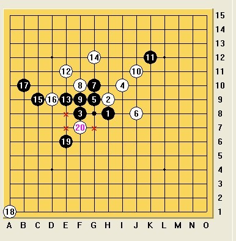

禁手问题
#1 禁手问题 作者：茗弈宽容 发表时间：2010-5-18 12:37:00

白抓禁了吗？为什么？
#2 Re:禁手问题 作者：小帮帮 发表时间：2010-5-18 12:43:03
没有啊，不是没显示禁点吗？因为1，3，8G，这个3的准活4点8E是一个禁点，所以这个活三不成立，不算活三，所以所抓的8G点，不是禁点
#3 Re:禁手问题 作者：屏蔽 发表时间：2010-5-18 12:50:46
感觉不是。［此帖子已被 屏蔽 在 2010-5-18 12:53:35 编辑过］
#4 Re:禁手问题 作者：茗弈宽容 发表时间：2010-5-18 12:55:49
可为什么在三手摆这个局面被判抓禁呢？
#5 Re:禁手问题 作者：慎独 发表时间：2010-5-18 13:11:08
G8是不是禁手，就要看8线的1 3 21 是不是活三，这个8线的是不是活三，就得看这个E8能不能下，也就是E线这个13 19 23是不是活三，而这个是不是活三就得看E7这个点能不能下，而E7这个点，和3 5 成活三 ，和 15 17成活三，所以这个点是禁，也就是E线的三不能成活三，那这 个E线就不是活三，也就是E8这点能下，那8线的就成四，当然G8就是3 3禁了
［ 有志青年 于 2010-5-19 8:38:38 时奖励此帖[金币加 20 威望加1］
#6 Re:禁手问题 作者：慎独 发表时间：2010-5-18 13:12:12
［此帖子已被 茗弈小刀 在 2010-5-18 13:15:22 编辑过］
#7 Re:Re:禁手问题 作者：慎独 发表时间：2010-5-18 13:15:18
~]O5JA3FCXBZ1DAW.jpg)
#8 Re:禁手问题 作者：庞德 发表时间：2010-5-18 13:25:28
这有什么难的。。
就像五楼说的那样。。挺好判断的呀。想不通就一步一步推。
#9 Re:Re:Re:禁手问题 作者：茗弈宽容 发表时间：2010-5-18 13:25:43
楼上朋友的意思，那么
A点是禁，B点不禁？我们的打谱工具莫非都出问题了~~
#10 Re:禁手问题 作者：左伟光 发表时间：2010-5-18 13:31:39
是抓禁
#11 Re:禁手问题 作者：庞德 发表时间：2010-5-18 13:34:26
TO 9F。
A不禁。
#12 Re:禁手问题 作者：行云流水 发表时间：2010-5-18 14:01:05
个人以为应当是抓禁。
5、7、G8一线是活三毫无疑问，争议是在3、G8、1一线是否是活三。
判断真假活三的关键是看下一步能否成为活四。接下去的关键就是E8能不能下，也就是E8下了是否会出现“4.3.3”的问题。
E8、7、9是活三，这个毫无疑问。13、E8、19是否活三，又要开始判断下一个点E7是否可以下，而E7是比较明显的“4.3.3”禁点。
因为E7是禁点，所以，13、E8、19不是活三，那么E8就不是“4、3、3”禁点，从而也就可以证明G8是禁点了。
［ 茗弈小刀 于 2010-5-18 16:57:17 时奖励此帖[金币加 20 威望加1］
#13 Re:禁手问题 作者：雪飞 发表时间：2010-5-18 14:24:21
这个是在茶馆群出的题目，G8不是禁手。解题的关键：
1、会填子逆推法
2、注意一点：五连与其它形状同时形成的时候，只算五连，不算其它。
这个题目填子到最后一层，会发现在D8形成了五连和一个活四，此时的活四不能当做活四来看待，也就是说E7不是三三禁手。由此可以逆推出G8不是禁手。
有意思的是，QQ系统判断这个题目会出错，而luwenzhe的禁手判断就是正确的，比如用renjusolver来判断。
［此帖子已被 雪飞 在 2010-5-18 14:37:02 编辑过］
［ 茗弈小刀 于 2010-5-18 16:57:31 时奖励此帖[金币加 20 威望加1］
#14 Re:禁手问题 作者：无尽 发表时间：2010-5-18 14:26:33
我的推理：
E7是15-17与3-5的三三点
如果不消除这个三三点，则E线不活
E8是1-3与7-9的三三点
若落下G8
8线可成活四，因为E8已经变成四三点（E线不活）
G线可成活四
所以G8是禁手
［此帖子已被 无尽 在 2010-5-18 15:15:19 编辑过］
#15 Re:禁手问题 作者：无尽 发表时间：2010-5-18 14:37:50
活三的定义就是能形成活四的“三”
三三禁手 就是 禁 同时直接形成双活三取胜的点
活四与连五都可判定为“胜”：活四必然可连五，只有时间差，本质无区别
所以禁手判断不需要考虑到连五（即使连五点是禁手，但连五优先级高于禁手，连五任何情况下都成立）
个人看法
［ 茗弈小刀 于 2010-5-18 16:57:46 时奖励此帖[金币加 20 威望加1］
［此帖子已被 无尽 在 2010-5-18 17:48:20 编辑过］
#16 Re:禁手问题 作者：屏蔽 发表时间：2010-5-18 14:59:53
quote：
这个是在茶馆群出的题目，G8不是禁手。解题的关键：
1、会填子逆推法
2、注意一点：五连与其它形状同时形成的时候，只算五连，不算其它。
这个题目填子到最后一层，会发现在D8形成了五连和一个活四，此时的活四不能当做活四来看待，也就是说E7不是三三禁手。由此可以逆推出G8不是禁手。
有意思的是，QQ系统判断这个题目会出错，而luwenzhe的禁手判断就是正确的，比如用renjusolver来判断。
===============
求填子逆推法定义及它可以判定禁手的证明。
用某个系统或软件自带的禁手判定来解释，个人以为还是不妥，这涉及到判定禁手的算法问题。
［ 茗弈小刀 于 2010-5-18 16:58:03 时奖励此帖[金币加 20 威望加1］
#17 Re:Re:禁手问题 作者：我就不信注册不上 发表时间：2010-5-18 15:32:07
引用：G8点落下之后，D8是四四不能走，因而E7、15、17不是活三，即E7不是四三三
原文由 行云流水 发表于 2010-5-18 14:01:05 :个人以为应当是抓禁。
5、7、G8一线是活三毫无疑问，争议是在3、G8、1一线是否是活三。
判断真假活三的关键是看下一步能否成为活四。接下去的关键就是E8能不能下，也就是E8下了是否会出现“4.3.3”的问题。
E8、7、9是活三，这个毫无疑问。13、E8、19是否活三，又要开始判断下一个点E7是否可以下，而E7是比较明显的“4.3.3”禁点。
因为E7是禁点，所以，13、E8、19不是活三，那么E8就不是“4、3、3”禁点，从而也就可以证明G8是禁点了。
#18 Re:禁手问题 作者：gerbo 发表时间：2010-5-18 15:32:22
感觉应该是禁手点。发现黑总有一条43线路，这并非是一个黑的假双活三。
［此帖子已被 gerbo 在 2010-5-18 15:42:23 编辑过］
#19 Re:禁手问题 作者：我就不信注册不上 发表时间：2010-5-18 15:35:52
http://www.hychess.com/bbs/viewthread.php?tid=39564&extra=page%3D1我在这里看到一个关于禁手的讲解，就是行云流水老师的思路，应该算得上深入浅出了［ 茗弈小刀 于 2010-5-18 16:56:57 时奖励此帖[金币加 20 威望加1］
#20 Re:禁手问题 作者：茗弈小刀 发表时间：2010-5-18 16:56:18
比较复杂看来，谢谢各位老师指点。#21 Re:禁手问题 作者：行云流水 发表时间：2010-5-18 16:56:23
D8是四四不能走，因而E7、15、17不是活三，即E7不是四三三
D8是四四？？请问和哪手棋构成四四？如果是和1、G8、3这个活三的话，如果E8无子，则17、15、E7也无法构成活三，如果17、15、E7要构成活三的话，那么D8应该是五连了，因为1、G8、3、E8已经成四。
#22 Re:禁手问题 作者：行云流水 发表时间：2010-5-18 17:03:37
对13楼雪飞的判断，在理论层面似乎还是存在歧义。
当然，我在判断时的确是疏忽了D8落点出现一个五连和一个活四的情况。
不过有个前提，就是按照五子棋“先五为胜”的定义，当一方五连时，是否意味着“活四”就失去了效力？？如果是这样的概念，那么由此逆推，G8就不是禁手了。雪飞说的也就是正确的。
但是，如果按照“先五为胜”的另一种理解，就是当禁手和五连同时出现的时候，按照五子棋五连为胜的规则，以五连为优先考虑的对象，那么只是意味着五连是胜了，但禁手依然是禁手。
因此这道题目其实质是究竟“先五为胜”是否意味着当五连出现的时候，其他概念就失去了效力？还是只是五连出现的时候，不去考虑其他因素，只以五连为尊。这是分歧的最根本所在。
如果是后者，那么按照这道题目的问题，就应该说G8还是禁手。因为D8的五连，不影响活四的存在。
［此帖子已被 行云流水 在 2010-5-18 17:10:47 编辑过］
#23 Re:禁手问题 作者：伤情路 发表时间：2010-5-18 17:08:24
E8是433禁手点，所以21手下了以后，并没有双3的那种效果出来，因此我认为不是禁手点
#24 Re:禁手问题 作者：忧郁的双眼 发表时间：2010-5-18 17:11:24
不是禁手
QQ游戏判断错误
#25 Re:Re:Re:禁手问题 作者：岑小鱼 发表时间：2010-5-18 17:23:45
引用：
原文由 慎独 发表于 2010-5-18 13:15:18 :G8是不是禁手，就要看8线的1 3 21 是不是活三，这个8线的是不是活三，就得看这个E8能不能下，也就是E线这个13 19 23是不是活三，而这个是不是活三就得看E7这个点能不能下，而E7这个点，和3 5 成活三 ，和 15 17成活三，所以这个点是禁，也就是E线的三不能成活三，那这 个E线就不是活三，也就是E8这点能下，那8线的就成四，当然G8就是3 3禁了
完全同意这个观点和判断方式
其中最后D8这个点成五和斜线17-15这里成为活四并没有任何冲突之处
#26 Re:Re:禁手问题 作者：我就不信注册不上 发表时间：2010-5-18 17:28:23
引用：G8、E7落下之后，D8不就是四四了吗？
原文由 行云流水 发表于 2010-5-18 16:56:23 :D8是四四不能走，因而E7、15、17不是活三，即E7不是四三三
D8是四四？？请问和哪手棋构成四四？如果是和1、G8、3这个活三的话，如果E8无子，则17、15、E7也无法构成活三，如果17、15、E7要构成活三的话，那么D8应该是五连了，因为1、G8、3、E8已经成四。
#27 Re:禁手问题 作者：唐门小虎 发表时间：2010-5-18 17:42:17
是禁啊
#28 Re:禁手问题 作者：雪飞 发表时间：2010-5-18 17:44:36
我的理解是：五连与其它形状同时形成的时候，五连为大，其它一切形状失效。
其中在规则中，已经明确规定了，五连与禁手同时形成的时候，只算五连，不算禁手。我的理解正是在此基础上的延伸。举例说明：当五连与活四同时形成的时候，这个“活四”还算活四吗？我的理解：不是。为什么？因为一旦形成五连，游戏戛然而止，这个“活四”没有机会形成五连了，一个不能形成五连的“活四”，又岂能再称为“活四”？再比如五连与长连同时形成，为什么只算五连不算长连？这个也是从规则入手，五连为大，一旦判定是五连，游戏结束，就失去了判定成为长连的机会，那个长连也不能称之为长连。
总之，这个禁手的判断不是一般意义的复杂禁手的判断，正如顾炜老师所说，问题纠结于五连与其它形状同时形成的时候，算五连的同时，是否还算其它形状。我的理解前文已说，当然这也是一家之言，可以一起探讨。
这个问题的发现比较偶然，有一段时间茶馆群经常讨论禁手的问题，然后碰到了一个题目，在浙江五子棋教室系统的判断跟我们自己的判断有了出入，由此引起了重视，并做了总结。那个题目在家里电脑上，晚上可以找一下发出来，跟这个题目有点类似。浙江五子棋教室系统跟renjusolver禁手算法感觉上是一致的，有可能都用了luwenzhe的算法。
#29 Re:禁手问题 作者：岑小鱼 发表时间：2010-5-18 18:07:49
仅从理论上来说没有禁止就等于允许
既然规定的是成5则不再进行禁的判断 但其他的形状比如活四 并没有禁止 就是说允许
至于说已经没有继续成为第2个五的机会 这个在规则上并没有规定的 仅仅从没有机会这方面
来说就很不合理了 比如说一手棋成了2个活四 实质上只有一个是有机会成五的 既然只有一个
可以成五 那么另外一个又何来先手之说? 所以不能从这个角度来理解 要从规则上面来判断
#30 Re:禁手问题 作者：慎独 发表时间：2010-5-18 18:10:29
0~PKSBYFAN.jpg)


#31 Re:禁手问题 作者：忧郁的双眼 发表时间：2010-5-18 18:10:50
我整明白了
是禁手
#32 Re:禁手问题 作者：大雪无痕 发表时间：2010-5-18 18:13:53
G8是禁手点
判断禁手前，应该先了解几个概念
禁手点： 黑棋一子形成三三、四四、长连、四三三、四四三的那一点称为禁手点
三三禁手：黑方一子落下，同时形成两个或两个以上的活三。
活三：己方加一个子能成活四的三 ( 包括连三和跳三)：①连三：紧紧相连的同色三子②跳三：中间间隔一子的活三。
活四： 己方再加上一子，有两个点可以成五的单四。
判断G8是不是禁手点，要看3、G8、1和7、5、G8组成的三是不是活三，首先7、5、G8再加一子能成活四，没有疑问是活三，关键要看3、G8、1是不是活三，能不能在G8活三后再给E8放上一个黑子成活四呢，即E8是不是三三禁手点，这就要看如果在E8上落子会不会同时形成两个活三，7、9、E8明显是活三，而13、E8、19是不是活三呢，这就要看E7能不能落子，是不是禁手点，很明显17、15、E7和E7、3、5是两个活三，E7是禁手点，所以在G8有黑子的前提下
E8不是禁手点（注意在没有G8点的黑子前E8可是禁手点啊！！！两个活三是E8、3、1和E8、9、7。打谱软件没有错啊） ，可以落子，那么3、G8、1可以成活三，所以本题G8是三三禁手点。
，可以落子，那么3、G8、1可以成活三，所以本题G8是三三禁手点。
第一次回复时没看仔细，忽视了3、5这条线，现在改正过来。

［此帖子已被 大雪无痕 在 2010-5-18 18:49:04 编辑过］
［此帖子已被 大雪无痕 在 2010-5-18 18:53:03 编辑过］
［此帖子已被 大雪无痕 在 2010-5-18 18:59:01 编辑过］
#33 Re:Re:禁手问题 作者：无尽 发表时间：2010-5-18 18:21:58
引用：
原文由 大雪无痕 发表于 2010-5-18 18:13:53 :由于E8禁手点的存在，所以3、G8、1不能成活四、不是活三而是眠三，那么G8就不是三三禁手点了
为什么G8、3、1不能成活四？可参看38楼~
另外，我觉得考虑禁手不需要那么复杂，禁手就是三种：三三、四四、长连
所谓四三三实际上也是三三，只要有一个三三就成立；就算落一个子四条线都能形成活三，只要2条就可算作禁手
［此帖子已被 无尽 在 2010-5-18 19:24:14 编辑过］
#34 Re:禁手问题 作者：四川连珠魂 发表时间：2010-5-18 18:22:57
不用争论这个问题了，直接请 肖斌老师宣布答案吧［ 屏蔽 于 2010-5-18 20:03:20 时花20金币送鲜花一朵］
#35 Re:禁手问题 作者：忧郁的双眼 发表时间：2010-5-18 18:23:52
归根到底是20左边三左边这俩点
哪个是禁哪个不是禁
20左边是禁
3左边就不是禁
这样就不存在四三三了
白抓禁手没疑问~
#36 Re:禁手问题 作者：慎独 发表时间：2010-5-18 18:32:34
=======上图对应的爱五子棋谱代码如下，以便你拆解：======== i8i9g8j10h9k8h10g10g9k11l12f11f9h12d9e9c10e14f6g7h8 ====================================================== |
要看这个h8是不是禁，首先你的落子，因为活三的定义是：在落下一子后，能形成2个或者俩个以上能成活四；所以要落子以后 | ||
|
同样的道路，要看这个f8是不是禁，也要落子，然后再看 | ||
|
同理f7也是一样，当然f7与15 17成的三也是活三了 | ||
#37 Re:Re:禁手问题 作者：慎独 发表时间：2010-5-18 18:46:16
=======上图对应的爱五子棋谱代码如下，以便你拆解：======== i8i9g8j10h9k8h10g10g9k11l12f11f9h12d9e9c10a1f6g7h8 ====================================================== |
首先，33禁手的定义：在落一子之后，能同时形成2个已经2个以上的活三。而什么叫活三的定义：能成活四的三。也就是说，要看这个h8是不是禁手，就要先落下子，然后看这个子落下之后，是否有俩个或者俩个以上的活三，而这里，有争议的1 3 21手这个三，要看这个是不是活三，就要看这个f8能不能下 | |
=======上图对应的爱五子棋谱代码如下，以便你拆解：======== i8i9g8j10h9k8h10g10g9k11l12f11f9h12d9e9c10a1f6g7h8c1f8 ====================================================== |
同理，看这个f8能不能下，就先落子，这里有争议的就是这个23 13 19手是不是活三，就看这里这个三能不能成活三，也就是f7这个点能不能下 | |
=======上图对应的爱五子棋谱代码如下，以便你拆解：======== i8i9g8j10h9k8h10g10g9k11l12f11f9h12d9e9c10a1f6g7h8c1f8e1f7 ====================================================== |
通过图，咱们可以看到，这个25 3 5手活三，25 17 15手也是活三，所以这个f7是禁，也就是13 19 23不是活三，当然h8这个点就不是禁，反之，1 3 21是活三，当然h8就是禁了 |
#38 问题梳理总结 作者：无尽 发表时间：2010-5-18 18:53:14
=======上图对应的爱五子棋谱代码如下，以便你拆解：========
h8h9f8i10g9j8g10f10f9j11k12e11e9g12c9d9b10a1e6f7g8b1e8
======================================================
G线能形成活四没问题，关键是E7是不是禁手，就要看落下E7以后，17-15,3-5这两路能不能形成活三（活四）
1、3-5-E7这一路形成活三（四）没有问题
2、出现的问题是E7-15-17能不能形成活四：
落下D8这个点就会形成8线一路的五连与17-15-D8-E7这四个子，那这时15-17-D8-E7还是不是活四呢？
前面的分歧所在就是同时形成一个五连与一个活四，该怎么算
如果不算活四，那么E7就不是禁手，E线就活了，23仍是禁手，8线活四不成立
如果算活四，那么E7就是禁手，E线还是不活，23不是禁手，8线活四成立
从胜负意义上看，五连意味着对局终止，五连方胜利，从棋型上看，五连是五连，活四是活四
我认为此处适用后者，所以G8是禁手
［此帖子已被 无尽 在 2010-5-18 19:53:08 编辑过］
［ 茗弈小刀 于 2010-5-21 13:14:08 时奖励此帖[金币加 20 威望加1］
#39 Re:问题梳理总结 作者：我就不信注册不上 发表时间：2010-5-18 19:55:55
引用：
原文由 无尽 发表于 2010-5-18 18:53:14 :
=======上图对应的爱五子棋谱代码如下，以便你拆解：========
h8h9f8i10g9j8g10f10f9j11k12e11e9g12c9d9b10a1e6f7g8b1e8
======================================================G线能形成活四没问题，争论焦点应该是E7是不是禁手，就要看落下E7以后，17-15,3-5这两路能不能形成活三（活四）
1、3-5-E7这一路形成活四没有问题
2、出现的问题是E7-15-17能不能形成活四：
落下D8这个点就会形成横线一路五连与17-15-D8-E7这四个子，那这时15-17-D8-E7还是不是活四呢？同时形成一个五连与一个活四，该怎么算
如果不算活四，那么E7就不是禁手，E线就活了，23仍是禁手，8线活四不成立
如果算活四，那么E7就是禁手，E线还是不活，23不是禁手，8线活四成立
从胜负意义上看，五连意味着对局终止，五连方胜利，从棋型上看，五连是五连，活四是活四
我认为此处适用后者，所以G8是禁手
［此帖子已被 无尽 在 2010-5-18 19:18:34 编辑过］
我认为还是算活四。
理由：规则中有这么一条规定“黑方五连与禁手同时形成，禁手失效，黑方胜”。这里的“形成”，仅仅指棋型上的构成；而“失效”，是指对胜负的判定。对于“落下D8这个点就会形成横线一路五连与17-15-D8-E7这四个子，那这时15-17-D8-E7还是不是活四呢？”，这里，从棋型上“形成”了活四，即15-17-E7是活三
#40 Re:禁手问题 作者：岑小鱼 发表时间：2010-5-18 20:00:12
活四就是活四 规则里只限定了一些禁的东西（印象中的） 很正式的官方文章到底是怎么表达整个规则其实没还见过 建议论坛管理员找一份置顶让大家有个统一的渠道来认识规则
［ 茗弈小刀 于 2010-5-18 21:36:59 时奖励此帖[金币加 20 威望加1］
#41 Re:Re:禁手问题 作者：我就不信注册不上 发表时间：2010-5-18 20:08:40
引用：ShowPost.asp?ThreadID=10223刚从电脑里找出来，已经发上去了
原文由 岑小鱼 发表于 2010-5-18 20:00:12 :活四就是活四 规则里只限定了一些禁的东西（印象中的） 很正式的官方文章到底是怎么表达整个规则其实没还见过 建议论坛管理员找一份置顶让大家有个统一的渠道来认识规则
［ 岑小鱼 于 2010-5-18 23:31:18 时花20金币送鲜花一朵］
#42 Re:禁手问题 作者：雪飞 发表时间：2010-5-18 20:16:46
再说一下自己的看法，欢迎拍砖。
我们再来看一下禁手的定义，一子落下，形成两个或者两个以上的先手（四三除外）；或者形成长连；且未形成五连。
这里的先手是啥含义呢，单指活四或者活三的形状，还是指其有形成五连的潜力呢？我认为应该是后者。只有有可能形成五连的形状，才能称之为先手的形状。
归到这个题目，落子E7，没错，是形成了两个活三的形状，但是17、15、E7这个三并没有形成五连的可能，因为在其形成五连之前，游戏已经结束。一个不能形成五连的三，不能称之为活三。
这里提示我们一点，活三、活四，都是能形成五连的。
我认为看一个局面不能剥离来看，也就是说不能单看形状，而是要从整体来看。比如五连和活四同时形成，不能只看这个活四，认为两端可以成五；而是要从整体来看，因为有五连，已经结束了，在两端不可以成五了，所以不是活四。
再比如五三三同时形成，我们知道只算五连，不算三三禁手。那么有个问题，就是这个三三不算禁手的原因到底是什么呢？只是因为五连为大的规则吗？我认为更大的原因在于：这俩三都已经失去成为五连的潜力了，不能再算是活三了。
附另一个题目：H8是三三禁手吗？
=======上图对应的爱五子棋谱代码如下，以便你拆解：========
h9a1g8a2i8b1j9c1h6a3j6a4j5b2g4b3f3b4
======================================================
［此帖子已被 雪飞 在 2010-5-18 20:34:26 编辑过］
#43 Re:Re:禁手问题 作者：飞哥 发表时间：None
引用：
原文由 慎独 发表于 2010-5-18 13:12:12 :G8是不是禁手，就要看8线的1 3 21 是不是活三，这个8线的是不是活三，就得看这个E8能不能下，也就是E线这个13 19 23是不是活三，而这个是不是活三就得看E7这个点能不能下，而E7这个点，和3 5 成活三 ，和 15 17成活三，所以这个点是禁，也就是E线的三不能成活三，那这 个E线就不是活三，也就是E8这点能下，那8线的就成四，当然G8就是3 3禁了［此帖子已被 茗弈小刀 在 2010-5-18 13:15:22 编辑过］
=======上图对应的爱五子棋谱代码如下，以便你拆解：========
h8h9f8i10g9j8g10f10f9j11k12e11e9g12c9d9b10a1e6f7
======================================================
题目主要意思是判断在现在的局面下，G8是不是禁点，或者此时黑子落于G8会不会形成禁手
我认为G8不是禁点
=======上图对应的爱五子棋谱代码如下，以便你拆解：========
i8g8j8a1k8b1m9c1n10f1o11g1k7
======================================================图零
你认为1、3、5是活三吗？这将是对这个帖子G8是否是禁点判断的关键！我认为1、3、5不是活三。（这个势必会引起一些争议，这个问题不在这个回复里讨论）
=======上图对应的爱五子棋谱代码如下，以便你拆解：========
h8h9f8i10g9j8g10f10f9j11k12e11e9g12c9d9b10a1e6f7g8
======================================================图一
那假设黑落一子“21”，来判断盘面是否形成了禁手。。。。
前面没错，判断1、3、“21”是不是活三是判断G8是不是禁点的关键
=======上图对应的爱五子棋谱代码如下，以便你拆解：========
h8h9f8i10g9j8g10f10f9j11k12e11e9g12c9d9b10a1e6f7g8b1e8
======================================================图二
你认为这个23黑不会形成禁手，因为13、“23”、19不是活三，故不会形成所谓的“三三”禁手
这里就是关键，我认为这个13、“23”、19是活三。
=======上图对应的爱五子棋谱代码如下，以便你拆解：========
h8h9f8i10g9j8g10f10f9j11k12e11e9g12c9d9b10a1e6f7g8b1e8c1e7
======================================================图三
这个13、“23”、19为什么是活三？当然是因为这个25能使它成为活四，因为这个“25”在盘面上不会形成任何的禁手。所谓的“三三禁手”为什么不存在，因为17、15、“25”不是活三。（理论同图零例题理论一样）
请看图二，所以E7不是禁点，故13、23、19是活三
by:web版  IP：
已记录
IP：
已记录
#44 Re:Re:禁手问题 作者：无尽 发表时间：2010-5-18 21:01:27
引用：
原文由 雪飞 发表于 2010-5-18 20:16:46 :再说一下自己的看法，欢迎拍砖。
我们再来看一下禁手的定义，一子落下，形成两个或者两个以上的先手（四三除外）；或者形成长连；且未形成五连。
这里的先手是啥含义呢，单指活四或者活三的形状，还是指其有形成五连的潜力呢？我认为应该是后者。只有有可能形成五连的形状，才能称之为先手的形状。
归到这个题目，落子E7，没错，是形成了两个活三的形状，但是17、15、E7这个三并没有形成五连的可能，因为在其形成五连之前，游戏已经结束。一个不能形成五连的三，不能称之为活三。
这里提示我们一点，活三、活四，都是能形成五连的。
我认为看一个局面不能剥离来看，也就是说不能单看形状，而是要从整体来看。比如五连和活四同时形成，不能只看这个活四，认为两端可以成五；而是要从整体来看，因为有五连，已经结束了，在两端不可以成五了，所以不是活四。再比如五三三同时形成，我们知道只算五连，不算三三禁手。那么有个问题，就是这个三三不算禁手的原因到底是什么呢？只是因为五连为大的规则吗？我认为更大的原因在于：这俩三都已经失去成为五连的潜力了，不能再算是活三了。
正确与否，在于判断过程中5连是否必须立即结束。
［此帖子已被 无尽 在 2010-5-18 21:24:19 编辑过］
#45 Re:禁手问题 作者：雪飞 发表时间：2010-5-18 21:07:46
re Type：
这个并不矛盾，说形成了五连就不再是活四，前提是五连我们默认是获胜的。你举的例子刚好，把这个默认取消了，没有了获胜这个前提，当然活四还是活四。就好比对局中走出了三三禁手，当时没有指出，但是不能否认的是，他走出这一手的时候，实际上已经三三禁手输掉了，你不能说当时走出的那一手不是禁手。
再比如五三三，我们可以设想一种情况，如果对手没看到五，只看到三三。这样的结果就比较好玩了。五三三变成了三三禁手判负，这种情况只有对局中才能出现。而禁手的判断，是理论层面上的，五连在理论上是获胜的局面。
［此帖子已被 雪飞 在 2010-5-18 21:23:26 编辑过］
［此帖子已被 雪飞 在 2010-5-18 21:27:38 编辑过］
#46 Re:Re:禁手问题 作者：飞哥 发表时间：2010-5-18 21:13:40
引用：
原文由 Type 发表于 2010-5-18 21:01:14 :回雪飞：
形成五连时，同时形成的那个活四，也是真·活四，理由如下：
比赛规则规定，五连后，如果双方都没有指出，那比赛继续进行。
这时，黑方如果再下一子，把那个活四变成了第二个五连，然后靠指出第二个五连来获胜，规则是允许的。
如果第二个五连之前的活四不算活四，它怎么能最后形成五连获胜呢？
你的发言太好了！
=======上图对应的爱五子棋谱代码如下，以便你拆解：========
i8g8j8a1k8b1m9c1n10f1o11g1k7h1l8
======================================================
单纯的讲，这个1、3、5、15是活四，就像：
=======上图对应的爱五子棋谱代码如下，以便你拆解：========
i8g8j8a1k8b1m9d1n10f1o11h1l8
======================================================
这个1、3、5、13可以认为是活四一样
=======上图对应的爱五子棋谱代码如下，以便你拆解：========
i8a1j8g8k8c1m9e1n10g1o11
======================================================
但这个1、3、5能认为是活三吗？显然不能。。。
#47 Re:禁手问题 作者：雪飞 发表时间：2010-5-18 21:16:08
应该说从不同角度理解，会得到不同的答案，我认为既然有争议，就有其争议的理由。还是等权威人士给予一个权威的解答吧！不再参与讨论。#48 Re:禁手问题 作者：飞哥 发表时间：2010-5-18 21:18:52
我认为判断禁点和活三问题必须从完全的理论环境出发，即盘面出现禁手棋局结束、盘面出现五连棋局结束
否则禁手理论将自我矛盾，原来人们建立的禁手逻辑也全不成立。
［ 茗弈小刀 于 2010-5-18 21:37:45 时奖励此帖[金币加 20 威望加1］
#49 Re:Re:禁手问题 作者：飞哥 发表时间：2010-5-18 21:23:22
引用：活四无法被判定为胜（投子认负当然可以）
原文由 无尽 发表于 2010-5-18 14:37:50 :活三的定义就是能形成活四的“三”
三三禁手 就是 禁 同时直接形成双活三取胜的点
活四与连五都可判定为“胜”：活四必然可连五，只有时间差，本质无区别
所以禁手判断不需要考虑到连五（即使连五点是禁手，但连五优先级高于禁手，连五任何情况下都成立）
个人看法
［ 茗弈小刀 于 2010-5-18 16:57:46 时奖励此帖[金币加 20 威望加1］
［此帖子已被 无尽 在 2010-5-18 17:48:20 编辑过］
#50 Re:禁手问题 作者：无尽 发表时间：2010-5-18 21:24:50
。。。
［此帖子已被 无尽 在 2010-5-18 21:48:09 编辑过］
#51 Re:禁手问题 作者：淡红的秋樱 发表时间：2010-5-18 21:26:23
这个问题相当的简单。五连胜和禁手负完全有可能是同时出现的。所以需要人为规定，五连胜。
#52 Re:禁手问题 作者：无尽 发表时间：2010-5-18 21:27:47
楼上没搞清问题焦点啊。。。
是对于一子落下，活四与五连同时形成的判断：是否因为有五连就终止对活四是否成立的判断
［此帖子已被 无尽 在 2010-5-18 22:42:10 编辑过］
#53 Re:Re:禁手问题 作者：飞哥 发表时间：2010-5-18 21:31:08
引用：
原文由 行云流水 发表于 2010-5-18 17:03:37 :对13楼雪飞的判断，在理论层面似乎还是存在歧义。
当然，我在判断时的确是疏忽了D8落点出现一个五连和一个活四的情况。
不过有个前提，就是按照五子棋“先五为胜”的定义，当一方五连时，是否意味着“活四”就失去了效力？？如果是这样的概念，那么由此逆推，G8就不是禁手了。雪飞说的也就是正确的。
但是，如果按照“先五为胜”的另一种理解，就是当禁手和五连同时出现的时候，按照五子棋五连为胜的规则，以五连为优先考虑的对象，那么只是意味着五连是胜了，但禁手依然是禁手。
因此这道题目其实质是究竟“先五为胜”是否意味着当五连出现的时候，其他概念就失去了效力？还是只是五连出现的时候，不去考虑其他因素，只以五连为尊。这是分歧的最根本所在。
如果是后者，那么按照这道题目的问题，就应该说G8还是禁手。因为D8的五连，不影响活四的存在。
［此帖子已被 行云流水 在 2010-5-18 17:10:47 编辑过］
说得好，但“先五为胜”的定义只是（黑棋五连与禁手同时形成，游戏结束，禁手失效，黑方胜。这个棋理俗称先五为胜。）定义的逻辑意思和现在这种情况完全不同，所以没法直接参考。
#54 Re:Re:禁手问题 作者：飞哥 发表时间：2010-5-18 21:45:19
引用：
原文由 无尽 发表于 2010-5-18 21:24:50 :错，活四可判断为必胜（双方不可能同时形成活四的，结论不需考虑这个问题，所以结论具有普适性）
［此帖子已被 无尽 在 2010-5-18 21:35:30 编辑过］
活四必胜？那当然！能必胜的形状太多了，我说的是活四在规则上无法被认定为胜！
=======上图对应的爱五子棋谱代码如下，以便你拆解：========
d8d9d7e9d6f9d5g9
======================================================
那现在这个8手后白棋被判胜了？
［ 无尽 于 2010-5-18 21:47:20 时奖励此帖[金币加 20 威望加1］
#55 Re:禁手问题 作者：测试规则 发表时间：2010-5-18 21:48:24
我觉得应该是抓禁
以上纯粹是个人观点，不参与各位争论
#56 Re:Re:禁手问题 作者：飞哥 发表时间：2010-5-18 22:01:16
引用：
原文由 岑小鱼 发表于 2010-5-18 18:07:49 :仅从理论上来说没有禁止就等于允许
既然规定的是成5则不再进行禁的判断 但其他的形状比如活四 并没有禁止 就是说允许
至于说已经没有继续成为第2个五的机会 这个在规则上并没有规定的 仅仅从没有机会这方面
来说就很不合理了 比如说一手棋成了2个活四 实质上只有一个是有机会成五的 既然只有一个
可以成五 那么另外一个又何来先手之说? 所以不能从这个角度来理解 要从规则上面来判断
我所知道规则的原意你没有这样的规定，只是有个五连和禁手同时出现，禁手失效，棋局结束，五连胜。（当然是在不考虑双方指没指出禁手或五连；当然现实还有可能出现黑方没看见五连，白指出黑形成禁手，白胜。）
=======上图对应的爱五子棋谱代码如下，以便你拆解：========
h8f8i8k3j8b1k7d1k6f1k5h1k8
======================================================
可不可以判断不好说，就像这两个四，如果它们不是四，何来禁手？很简单，它们两个是因为都是四才形成禁手，而因为禁手才判定胜负，结束棋局。棋局结束，一切结束。棋局结束，棋盘上面的任何形状将毫无意义，只有胜负。这个问题的关键在于如果不判定这两个形状是四，棋局将不会结束。
=======上图对应的爱五子棋谱代码如下，以便你拆解：========
i8g8j8a1k8c1m9e1n10h1o11j1k7l1l8
======================================================
而这个1/3/5/7对棋局是否结束没有影响。
从定义上看双四和机会论毫无关系，形成两个四要分别看它是不是四，双三的判定也要分别看它是不是活三。
［此帖子已被 飞哥 在 2010-5-18 22:32:12 编辑过］
［此帖子已被 飞哥 在 2010-5-18 23:17:12 编辑过］
［此帖子已被 飞哥 在 2010-5-18 23:30:13 编辑过］
［此帖子已被 飞哥 在 2010-5-18 23:34:43 编辑过］
#57 Re:禁手问题 作者：无尽 发表时间：2010-5-18 22:41:06
争论问题可以归结为：禁手判定过程中，五连的出现是否终止对其他相关棋型是否成立的判断
［此帖子已被 无尽 在 2010-5-18 22:43:37 编辑过］
#58 Re:禁手问题 作者：淡红的秋樱 发表时间：2010-5-18 22:52:11
理论上和实际中自然会有些差别。
理论中，五连自然就是结束
实际中，五连变六连也不是没有可能。
理论中，禁手也是结束。
实际中，你必须要指出来。
理论和实际没有必要混淆一谈，实际操作为了简便，偷下懒也是合情合理的。
我认为可能出现的问题是，判断一个超级复杂禁手需要花费大量时间。此时的时间归属问题。
但出现超级复杂禁手的概率超低，万分之几估计都不到。
［此帖子已被 淡红的秋樱 在 2010-5-18 22:58:57 编辑过］
［ 茗弈小刀 于 2010-5-19 11:28:42 时奖励此帖[金币加 20 威望加1］
#59 Re:Re:禁手问题 作者：我就不信注册不上 发表时间：None
引用：
原文由 无尽 发表于 2010-5-18 22:41:06 :争论问题可以归结为：禁手判定过程中，五连的出现是否终止对其他相关棋型是否成立的判断
［此帖子已被 无尽 在 2010-5-18 22:43:37 编辑过］
选自《中国五子棋竞赛规则（2009年版）》
第十条 终局
双方确认的终局或被裁判员判定的终局均为终局。终局分胜局与和局。
l. 胜局
(1) 最先宣布自己在棋盘上形成五连，并得到对手或裁判认可的一方为胜。白棋长连视同五连。
(2) 黑方出现禁手，无论是自愿或被迫走出，只要白方立即指出，则判白方胜。
(3) 如白方在黑方出现禁手后，未立即指出而又落下一白子，则黑方禁手不再成立。
(4) 黑方走出长连禁手则不同，只要是在终局前，无论白方何时发现此长连禁手点，指出此点而宣布胜利，判白方胜。
(5) 无论在任何情况下，双方均认可的胜局.
(6) 黑方五连与禁手同时形成，禁手失效，黑方胜。
对局中，一方出现下列情况之一，裁判员判对方胜。
(1) 比赛对局中故意移子，故意散乱棋局者。
(2) 超过规定时限者，包括比赛对局时限和迟到时限。棋手或裁判员发现后指出均可。
(3) 一方宣布认输者。
(4) 当局弃权者或未通知裁判员而中途退出比赛者。
(5) 在要求记录的比赛中无故拒绝记录者。
(6) 对局结束时，拒绝在成绩单上签字者。
(7) 拒绝遵守本规则者。
(8) 在同一局中，单方面先出现第二次违例者。
(9) 对局过程中棋手查阅有关资料或离席与他人商讨棋局者，或用记谱纸、笔分析棋局者。
by:web版 IP：
已记录
#60 Re:禁手问题 作者：无尽 发表时间：2010-5-18 23:24:29
楼上提供的规则不支持说只要一方五连对局就自动结束，而是必须指出，则意味一方五连后，其他棋型判定都是有效的，所以规则也说明五连的出现不影响其他棋型的判断。可参看45楼的例子。。
今天这问题费了很多神。。。。。。
［此帖子已被 无尽 在 2010-5-18 23:37:14 编辑过］
#61 Re:禁手问题 作者：行云流水 发表时间：2010-5-18 23:36:20
G8、E7落下之后，D8不就是四四了吗？
实在抱歉，很难理解你的意思。G8、E7落下，D8成为四四的说法。
E7落子前，E8已经落子，D8是最后落子的，那么应该是一个四，一个五，哪来的四四呢？！
#62 Re:禁手问题 作者：岑小鱼 发表时间：2010-5-18 23:39:52
刚又回来 看完了 我就不信注册不上 提供的规则文章 先谢谢了
规则里没有明确的解释可以为本题目解惑
其中成五 禁手 都是需要指出才能生效的 这说明在规则范围内成五并没有破坏其他形状的有效性
不过..既然出现了这种情况 或许官方机构制定个更详细简明的方案比较合适
#63 Re:禁手问题 作者：行云流水 发表时间：2010-5-18 23:48:45
其中在规则中，已经明确规定了，五连与禁手同时形成的时候，只算五连，不算禁手。我的理解正是在此基础上的延伸。举例说明：当五连与活四同时形成的时候，这个“活四”还算活四吗？我的理解：不是。为什么？因为一旦形成五连，游戏戛然而止，这个“活四”没有机会形成五连了，一个不能形成五连的“活四”，又岂能再称为“活四”？再比如五连与长连同时形成，为什么只算五连不算长连？这个也是从规则入手，五连为大，一旦判定是五连，游戏结束，就失去了判定成为长连的机会，那个长连也不能称之为长连。
我的理解恰恰在这里有所不同。查阅了2009版的中国五子棋竞赛规则，当遇到禁手问题时，规则规定的是“先五为胜，禁手失效”，那么这个就没有争议了。
但是这道题目存在的问题是，五连出现时，活四是否还是活四？我个人认为，五连以外的任何棋型，其本身的定义不应该也不可能由于五连的出现而失效。难道五连了，活四就不存在了？事实上客观还是存在的，活四并没有消失，并不因为五连了，对局分出胜负了，活四的定义就变了。
所以G8依然还是禁手。
［此帖子已被 行云流水 在 2010-5-18 23:54:03 编辑过］
［ 岑小鱼 于 2010-5-18 23:57:10 时花20金币送鲜花一朵］
#64 Re:Re:禁手问题 作者：飞哥 发表时间：2010-5-19 0:09:44
引用：
原文由 无尽 发表于 2010-5-18 23:24:29 :楼上提供的规则不支持说只要一方五连对局就自动结束，而是必须指出，则意味一方五连后，其他棋型判定都是有效的，所以规则也说明五连的出现不影响其他棋型的判断。
今天这问题费了很多神。。。。。。
［此帖子已被 无尽 在 2010-5-18 23:36:02 编辑过］
不支持说只要一方五连对局就自动结束，而是必须指出。这个规定如果要加入禁手和棋型的判定标准的话。。。那么：
那还应该再理解下先五为胜的概念:(黑棋五连与禁手同时形成，游戏结束，禁手失效，黑方胜。)这个黑方五连是指黑方五连还不能让禁手失效，必须得指出自己五连了。
=======上图对应的爱五子棋谱代码如下，以便你拆解：========
d8a1e8d1f8b1h8e1i8g1g9i1g7j1g10k1g6l1g8
======================================================
按照这个理论，这个19将是形成禁手。
=======上图对应的爱五子棋谱代码如下，以便你拆解：========
d8a1e8c1g8e1h8h1f9k1f7m1h10o1g9i1f8
======================================================
按照这个理论，这个17也会形成禁手。
=======上图对应的爱五子棋谱代码如下，以便你拆解：========
d8a1e8c1f8e1h8g1i8i1g9k1g7m1g6n1h10o4i10o5j10k10g10
======================================================
按照这个理论，这个23将不会形成任何禁手。
这样的话，很多逻辑都要变。。。
［此帖子已被 飞哥 在 2010-5-19 0:12:59 编辑过］
［此帖子已被 飞哥 在 2010-5-19 0:13:50 编辑过］
［ 茗弈小刀 于 2010-5-21 13:14:56 时奖励此帖[金币加 20 威望加1］
#65 Re:禁手问题 作者：飞哥 发表时间：2010-5-19 0:21:16
这个问题看来想找出个权威的解释很难..
这个可能得通过修改一些定义和规定来完善理论。
#66 Re:禁手问题 作者：淡红的秋樱 发表时间：2010-5-19 1:20:10
谁来回应一下60楼#67 Re:Re:禁手问题 作者：我就不信注册不上 发表时间：2010-5-19 2:07:17
引用：理论上，冲四必然要挡。实际上，为了给对手留出更多六连的机会，冲四不如不挡
原文由 淡红的秋樱 发表于 2010-5-18 22:52:11 :理论上和实际中自然会有些差别。
理论中，五连自然就是结束
实际中，五连变六连也不是没有可能。
理论中，禁手也是结束。
实际中，你必须要指出来。
理论和实际没有必要混淆一谈，实际操作为了简便，偷下懒也是合情合理的。
我认为可能出现的问题是，判断一个超级复杂禁手需要花费大量时间。此时的时间归属问题。
但出现超级复杂禁手的概率超低，万分之几估计都不到。
［此帖子已被 淡红的秋樱 在 2010-5-18 22:58:57 编辑过］
#68 Re:Re:禁手问题 作者：我就不信注册不上 发表时间：2010-5-19 2:11:36
引用：
原文由 无尽 发表于 2010-5-18 23:24:29 :楼上提供的规则不支持说只要一方五连对局就自动结束，而是必须指出，则意味一方五连后，其他棋型判定都是有效的，所以规则也说明五连的出现不影响其他棋型的判断。可参看45楼的例子。。
今天这问题费了很多神。。。。。。
［此帖子已被 无尽 在 2010-5-18 23:37:14 编辑过］
=======上图对应的爱五子棋谱代码如下，以便你拆解：========
h8a1g7b1f6c1e5d1d4m1h10n1g11o1j8l1k7
======================================================
再来个更极端的例子：11-13-15-17是不是冲四？
#69 Re:Re:Re:禁手问题 作者：我就不信注册不上 发表时间：2010-5-19 2:19:06
引用：
原文由 飞哥 发表于 2010-5-19 0:09:44 :引用：
原文由 无尽 发表于 2010-5-18 23:24:29 :楼上提供的规则不支持说只要一方五连对局就自动结束，而是必须指出，则意味一方五连后，其他棋型判定都是有效的，所以规则也说明五连的出现不影响其他棋型的判断。
今天这问题费了很多神。。。。。。
［此帖子已被 无尽 在 2010-5-18 23:36:02 编辑过］
不支持说只要一方五连对局就自动结束，而是必须指出。这个规定如果要加入禁手和棋型的判定标准的话。。。那么：
那还应该再理解下先五为胜的概念:(黑棋五连与禁手同时形成，游戏结束，禁手失效，黑方胜。)这个黑方五连是指黑方五连还不能让禁手失效，必须得指出自己五连了。
=======上图对应的爱五子棋谱代码如下，以便你拆解：========
d8a1e8d1f8b1h8e1i8g1g9i1g7j1g10k1g6l1g8
======================================================按照这个理论，这个19将是形成禁手。
=======上图对应的爱五子棋谱代码如下，以便你拆解：========
d8a1e8c1g8e1h8h1f9k1f7m1h10o1g9i1f8
======================================================按照这个理论，这个17也会形成禁手。
=======上图对应的爱五子棋谱代码如下，以便你拆解：========
d8a1e8c1f8e1h8g1i8i1g9k1g7m1g6n1h10o4i10o5j10k10g10
======================================================
按照这个理论，这个23将不会形成任何禁手。这样的话，很多逻辑都要变。。。
［此帖子已被 飞哥 在 2010-5-19 0:12:59 编辑过］
［此帖子已被 飞哥 在 2010-5-19 0:13:50 编辑过］
这个不存在逻辑问题，和禁手必须指出才生效的原则是一致的，即五连也必须指出才生效。
不过在这里，你可以指出我禁手，但我也可以指出我五连。在这种情况下，要先确认你、我所指出是是否正确，如果双方指出的都正确，先五为胜；如果只有一方所指出的是正确的，就按这个判定；如果双方所指出的都是错误的，继续对局，并适当判某方或双方违例。
如果只是你指出禁手，而我没有指出五连，那自然判禁手，也就是五连必须指出才生效的原则。
#70 Re:Re:禁手问题 作者：我就不信注册不上 发表时间：2010-5-19 2:29:09
引用：实战过程中，真可以说是什么都有可能发生，规则再完备，也难免有些规定不到的地方。这种情况下，既然没有明确的原文，就要通过理解规则的精神来判定，比如我在40楼所说。这里我觉得既然有“五连与禁手同时形成”这么个说法，就意味着形成五连的时候还应该判断其它棋型，只是这些棋型的效力小于五连
原文由 岑小鱼 发表于 2010-5-18 23:39:52 :刚又回来 看完了 我就不信注册不上 提供的规则文章 先谢谢了
规则里没有明确的解释可以为本题目解惑
其中成五 禁手 都是需要指出才能生效的 这说明在规则范围内成五并没有破坏其他形状的有效性
不过..既然出现了这种情况 或许官方机构制定个更详细简明的方案比较合适
#71 Re:Re:禁手问题 作者：我就不信注册不上 发表时间：2010-5-19 2:43:29
引用：
原文由 淡红的秋樱 发表于 2010-5-18 22:52:11 :理论上和实际中自然会有些差别。
理论中，五连自然就是结束
实际中，五连变六连也不是没有可能。
理论中，禁手也是结束。
实际中，你必须要指出来。
理论和实际没有必要混淆一谈，实际操作为了简便，偷下懒也是合情合理的。
我认为可能出现的问题是，判断一个超级复杂禁手需要花费大量时间。此时的时间归属问题。
但出现超级复杂禁手的概率超低，万分之几估计都不到。
［此帖子已被 淡红的秋樱 在 2010-5-18 22:58:57 编辑过］
针对这个，我来举一个类似的问题：如果计算一个超级复杂的必胜局面，需要花费大量时间，这个时间的归属问题。
解决办法呢，有两个：其一、花费自己的时间去计算；其二、适当放弃计算，走一步算一步
对于第一种办法，如果时间足够，那就不是问题了。而如果时间不够呢，只能退而求其次，选择一个自己计算范围内的最有可能是必胜着法去行棋，把问题转嫁给对手去计算防守，并适当利用对手的时间再计算。
回答您的提问：如果时间够用，那我自然会利用自己的时间去判断；如果时间不够，我只能凭着自己有限的判断，外加直觉、心理、战略等等去考虑放弃这个禁手或者是冒着被判违例或判负的危险去指出禁手（把问题转嫁给对手和裁判，利用对手的时间或公共的时间再来判断）。
［ 茗弈小刀 于 2010-5-21 13:15:36 时奖励此帖[金币加 20 威望加1］
#72 Re:禁手问题 作者：雪飞 发表时间：2010-5-19 7:27:51
我觉得还是有必要补充一下。
1、禁手的判断属于理论层面上的，比如五连在理论上是获胜的，三三是禁手。比赛中由于没有看到，只会对胜负有影响，但不会改变原有禁手的判断结果。
2、再看下图这个例子，我可以认为下图两个三都是活三，而不能做出是假活三的结论，因为有可能对局中落了四四点，看不到，出现继续行棋的情况。但是，我们都会认为这两个三不是活三，是假活三，原因在于从理论层面，认为落了四四点之后，就是禁手点，输掉了，游戏到此结束，黑棋的两个四都没有形成五连的可能，就是说此时的两个活四，都不是活四。
但还有一个问题，就是落了四四点之后，单纯从形状来看，确实是形成了两个活四的形状，如果我们认为形成的确实是活四，那么与前面判断是假活三就有矛盾了。这样，原有的整套禁手理论需要重新梳理。
这个图可以归结为两个问题：一是落子J9是否同时形成了禁手和两个活四；二是如果形成的是活四，那么1、3、5这个3是否是活三。
=======上图对应的爱五子棋谱代码如下，以便你拆解：========
g9e9h9e8i9e7j8e10j7d8j10
======================================================
我认为，判断一个四是否是活四，还是要从理论上看其有无两端形成五连可能，如果已经形成五连，那么理论上棋局已经结束，这就跟四四禁手的判断一样，理论上四四算负，棋局结束，这样，同时形成的那个四都不再是活四了。
［此帖子已被 雪飞 在 2010-5-19 7:51:44 编辑过］
#73 Re:禁手问题 作者：淡红的秋樱 发表时间：2010-5-19 7:32:24
to 73 楼
明明不是禁手，但在比赛中，有一方认为是禁手，并不会被直接判负。最多被判违例。
此时指出禁手，和确认禁手的时间，有时会大于比赛剩余时间。只是复杂禁手概率超低。好像从有比赛开始的年代到目前为止未见此类问题。所以我从未去深究。
#74 Re:Re:Re:禁手问题 作者：无尽 发表时间：2010-5-19 7:57:05
引用：
原文由 飞哥 发表于 2010-5-19 0:09:44 :引用：
原文由 无尽 发表于 2010-5-18 23:24:29 :楼上提供的规则不支持说只要一方五连对局就自动结束，而是必须指出，则意味一方五连后，其他棋型判定都是有效的，所以规则也说明五连的出现不影响其他棋型的判断。
今天这问题费了很多神。。。。。。
［此帖子已被 无尽 在 2010-5-18 23:36:02 编辑过］
不支持说只要一方五连对局就自动结束，而是必须指出。这个规定如果要加入禁手和棋型的判定标准的话。。。那么：
那还应该再理解下先五为胜的概念:(黑棋五连与禁手同时形成，游戏结束，禁手失效，黑方胜。)这个黑方五连是指黑方五连还不能让禁手失效，必须得指出自己五连了。
=======上图对应的爱五子棋谱代码如下，以便你拆解：========
d8a1e8d1f8b1h8e1i8g1g9i1g7j1g10k1g6l1g8
======================================================按照这个理论，这个19将是形成禁手。
=======上图对应的爱五子棋谱代码如下，以便你拆解：========
d8a1e8c1g8e1h8h1f9k1f7m1h10o1g9i1f8
======================================================按照这个理论，这个17也会形成禁手。
=======上图对应的爱五子棋谱代码如下，以便你拆解：========
d8a1e8c1f8e1h8g1i8i1g9k1g7m1g6n1h10o4i10o5j10k10g10
======================================================
按照这个理论，这个23将不会形成任何禁手。这样的话，很多逻辑都要变。。。
［此帖子已被 飞哥 在 2010-5-19 0:12:59 编辑过］
［此帖子已被 飞哥 在 2010-5-19 0:13:50 编辑过］
图一、图二不是禁手，因为落下一子，禁手与五连同时出现，首先算五连，这个规则也有规定
图三是禁手，因为两线都可以连五
没发现逻辑有什么改变。。。还有什么问题吗？
#75 Re:Re:Re:禁手问题 作者：无尽 发表时间：2010-5-19 7:58:37
引用：
原文由 我就不信注册不上 发表于 2010-5-19 2:11:36 :引用：
原文由 无尽 发表于 2010-5-18 23:24:29 :楼上提供的规则不支持说只要一方五连对局就自动结束，而是必须指出，则意味一方五连后，其他棋型判定都是有效的，所以规则也说明五连的出现不影响其他棋型的判断。可参看45楼的例子。。
今天这问题费了很多神。。。。。。
［此帖子已被 无尽 在 2010-5-18 23:37:14 编辑过］
=======上图对应的爱五子棋谱代码如下，以便你拆解：========
h8a1g7b1f6c1e5d1d4m1h10n1g11o1j8l1k7
======================================================再来个更极端的例子：11-13-15-17是不是冲四？
是冲四
#76 Re:禁手问题 作者：无尽 发表时间：2010-5-19 8:11:05
回雪飞LS，其实我觉得可以从两方面看：
1、的确，对局过程中，只要任何一方首先连五，不管有没有指出，按照游戏规则的逻辑他就是胜利者，因为他的确连五了。
存在的疑问就是：为什么不能对其他棋型做判断呢？规则中没有禁止的依据
不存在说五连了活四就不是活四，只是判断了有五连就算胜利
游戏的胜负判定规则与棋型判定规则是相互独立的
2、禁手判断过程中，不是实际的游戏过程，各种分析都是基于假设的可能性，连五的出现终止对其他棋型判断会导致逻辑混乱，因为不能确定它是否一定会出现，只是基于一种假设，所以分析过程中可能的连五出现也不代表一方胜利游戏结束，否则会造成逻辑混乱。
从本题的逻辑来看：
要对A点（E8）作出判断，就依赖对B点（D8）是否成立的判断，即是说A点结论是不确定的
但根据您的规定就“假设”了A点成立否定了B点成立，进而作出A点不成立的结论
从逻辑上讲合理吗？所以我认为禁手判断过程中，五连出现禁止对其他棋型判断也会导致不合理的逻辑。
综合以上2点，胜负判定与棋型判断是相互独立的，游戏规则并没有做出胜负判定结束棋型判定无效的规定；同时如果五连禁作其他棋型判断的规定成立，那么就会导致禁手判断出现逻辑混乱的情况，也说明添加了这一规定会导致不合理现象。
［此帖子已被 无尽 在 2010-5-19 9:48:41 编辑过］
#77 Re:禁手问题 作者：雪飞 发表时间：2010-5-19 8:24:19
1、我认为现有讨论的基础都应该建立“五连为大”的规则之上，如果有人认为“五连为大”不合理，那讨论这个帖子就没意义了。
2、我们可以这样理解：五连、禁手、活四、活三都是棋形，而且有优先级。规则中规定“五连与禁手同时形成，禁手失效”，或许可以理解成，此时的局面只认可五连的棋形，不认可禁手的棋形，而活四、活三的棋形的优先级比禁手还要低，更无法得到认可了。
3、或许应该区分开“活四”和“活四的形状”。我认为"活四"是动态的，是从整体上来判断的，它有成五的可能；而“活四的形状”是静态的，只是一个形状，有可能从整体上看没有可能成五。我提出的观点里“五连与活四同时形成，只算五连，不算活四”，这里的活四，指的是动态的“活四”。
4、我认为“五连与其它形状同时形成，只算五连，不算其它形状”，只是对“五连与禁手同时形成，只算五连，不算禁手”的延伸，而对现有的五子棋理论不会造成冲击。
［此帖子已被 雪飞 在 2010-5-19 8:29:17 编辑过］
#78 Re:禁手问题 作者：无尽 发表时间：2010-5-19 8:30:02
雪飞LS 您好 请回应我78的观点 谢谢
另外，
1、五连为大，没错，但这只是胜负意义上的，而不是棋型判断上的
2、是您主观拓展了规则的含义，因为规则只确定了禁手与五连的关系，而没有其他
4、问题出现了，78楼
［此帖子已被 无尽 在 2010-5-19 8:33:36 编辑过］
#79 Re:禁手问题 作者：雪飞 发表时间：2010-5-19 8:38:13
我想知道74楼图中的1、3、5是否是活三？如果不是活三，那么我可以这样认为，由于禁手的出现而禁止对棋形的判断同样是不合理的。
如果是活三，那就颠覆了现有的认识。
［此帖子已被 雪飞 在 2010-5-19 8:39:41 编辑过］
#80 Re:禁手问题 作者：无尽 发表时间：2010-5-19 8:44:54
不是活三，因为落下后两线都可以成五
禁手的出现没有禁止对棋型的判断，而是五连与禁手在胜负意义上，五连为尊
它在某个局面的棋型上依然可能是四四五，但该交点不是禁手，因为已经该点已经达成连五，按照游戏规则判定胜利，四四禁失效
［此帖子已被 无尽 在 2010-5-19 9:47:41 编辑过］
#81 Re:禁手问题 作者：雪飞 发表时间：2010-5-19 9:52:13
=======上图对应的爱五子棋谱代码如下，以便你拆解：========
d14a1d13b1d12c1b11d1c11f1e11g1l14h1l13i1l12k1j11l1k11m1m11n1n11
======================================================
我们来看一下这个图形。
一、1、3、5原有的认识是假活三，不是活三，原因是什么？
因为我们认为落子D11点，在形成活四的同时，又形成了四四禁手，由此，禁手优先，不认为形成了活四。从这个来理解，可以说由于禁手的存在，使原有的活四不被认可为活四。所以，1、3、5这个三不是活三。
二、为什么有了禁手就不被认可为活四了？
这是因为，禁手的出现，理论上认为棋局已经结束了，这个活四没有办法在两端五连。
三、再来看右图：13、15、17这个三是活三吗？
判断的依据我认为可以借鉴左图的判断，就是看落子L11看是否可以形成活四。注意了，落子L11，形成活四的同时，还形成了五连。前面禁手是棋局结束的标志，活四不被认可，而五连应该也是棋局结束的标志，这个活四也不应被认可，那么13、15、17这个三也不应该是活三。
四、由左图推出右图，我认为这样的逻辑并无不通之处。
［ 茗弈小刀 于 2010-5-21 13:16:09 时奖励此帖[金币加 20 威望加1］
#82 Re:禁手问题 作者：无尽 发表时间：2010-5-19 9:58:33
二、为什么有了禁手就不被认可为活四了？
这是因为，禁手的出现，理论上认为棋局已经结束了，这个活四没有办法在两端五连。
---不是因为禁手出现，棋局结束，而是因为禁手出现，该点在规则上不被允许落下，所以1-3-5就是假活三，因为他无法形成活四了
三、再来看右图：13、15、17这个三是活三吗？
---是活三，因为五连点不是禁手，没有禁止落下，因此棋型上就形成一个五连，一个活四，根据游戏胜负规则，首先出现五连那方逻辑上就是获胜，活四在棋型上还是活四，但它已不涉及胜负关系
五连的情况与禁手的情况不一样，禁手是特例
再看看78楼 2 的情况，我之所以一直在讨论就是雪飞LS的规定会造成禁手判断的逻辑混乱，昨晚临睡前才想好怎么表达。。。 况且游戏规则并没有规定：胜负关系出现棋型判断就失效，只是棋型符合规定才做出胜负关系判断
［此帖子已被 无尽 在 2010-5-19 10:14:23 编辑过］
#83 Re:禁手问题 作者：无尽 发表时间：2010-5-19 10:37:45
=======上图对应的爱五子棋谱代码如下，以便你拆解：========
h8h9f8i10g9j8g10f10f9j11k12e11e9g12c9d9b10a1e6f7g8b1
======================================================
G线活三可成活四，忽略
21是不是禁手，取决于1-3-21-E8是不是活四，即E8是不是禁手
E8是不是禁手取决于E7是不是禁手（E8横斜形成活四活三，如果竖线是活三就是四三三禁）
E7是不是禁手取决于15-17-E7是否可成活四（3-5-E7可成活四）
按照雪飞LS的规定，15-17-E7不能成活四因为假设的1-21-3-E8-D8的连五终止判断，而形成这个连五前提是E8不是禁手，否则1-3-21-E8就不是活四，更无法在D8连五了，这个规定下就实际就是假设了五连成立（E8不是禁手），但结论却判断E8是禁手（逻辑矛盾的地方，因为E8正是需要判断的点）
按照胜负判断与棋型判断相互独立的原则，则17-15-D8-E7可成活四无疑问
因此E7是禁手，E8不是禁手，21也就是禁手了，逻辑无矛盾
五子棋是根据棋型来进行判断的，包括胜负，因此在正常对局以及禁手分析中就应该不会有问题（如有新发现可以讨论）；如果加入五连终止棋型判断，不涉及禁手的对局可能没问题，但涉及禁手判断就会出现逻辑矛盾，因此规定不合理
［此帖子已被 无尽 在 2010-5-19 11:05:15 编辑过］
#84 Re:禁手问题 作者：雪飞 发表时间：2010-5-19 11:04:54
我认为直接用85楼的图来判断E7是否是禁手是不对的，必须要在E8填子之后再进行判断。这也是复杂禁手判断的基本方法，即填子逆推法。这个方法本身就是假设的方法，假设可以落子，然后看形成了什么。
我认为这个帖子，只要来讨论83楼的图就可以了。如果能理清83楼13、15、17是否是活三，一切问题迎刃而解。
#85 Re:禁手问题 作者：无尽 发表时间：2010-5-19 11:07:33
我的就是填子法吧（填子本身就是假设，试试看），只不过不是一幅幅图填出来
OK 那我的答案 13-15-17是活三（能成活四）
您的意见是因为五连终止判断是否活三（活四）
其实就是棋型判断与胜负判断的关系问题：
是根据棋型来判断胜负（规则也是如此），您同意吗？胜负判断结束终止棋型判断，您有规则依据吗？：）
规则上没有禁止即被允许，应按允许来看待，因为必须据此作出判断，无法模棱两可。
［此帖子已被 无尽 在 2010-5-19 11:27:10 编辑过］
#86 Re:禁手问题 作者：淡红的秋樱 发表时间：2010-5-19 11:08:29
to 76 楼
76楼说：不支持说只要一方五连对局就自动结束，而是必须指出
下到五连都还不结束，继续下下去的，结果对手也五连了，你同时宣布胜利。这有意思吗？
#87 Re:禁手问题 作者：淡红的秋樱 发表时间：2010-5-19 11:17:02
任何的推理，首先要明确的是前提正确，如果前提本身也有问题，那么结论一定会非常奇特的。
两个聪明人的结论如果最后有差异，那么肯定谈的不是同一件事情。
#88 Re:禁手问题 作者：无尽 发表时间：2010-5-19 11:29:38
好了大家都明确了观点，我也不参与讨论了，累。。。#89 Re:禁手问题 作者：我就不信注册不上 发表时间：2010-5-19 12:02:54
经过自己再三思考，我认为这个问题应该归结在对规则中这两句话（“活四：有两个点可以成五的四”、“黑方五连与禁手同时形成，禁手失效，黑方胜”）的理解上，主要体现在三个词“活四”、“形成”、“失效”：
形成：从棋型上说，有两个点可以成五，就应该算“活四”
失效：所失效的对象因为非自身原因而无法实现自身的效力
规则原文明确规定，所失效的禁手不再判定为禁手。那么所失效的活四能不能判定为活四？
按照现有逻辑：由于四四禁手而无法形成活四的三不能判定为活三。针对这句话，落下这个四四禁手点的时候，从棋型上确实形成了活四，但是这个活四因为禁手的原因而无法实现自身成五取胜的效力，这样就把它判定为不是活四
对于这个“判定”，显然是理论层面的，应该建立在“五连=对局结束”基础之上
由此，我的结论：五连与活四同时形成，五连取胜，活四失效，不再判定为活四，原题不是禁手。
PS：此处是我对本题的最终理解，之前没有仔细理解规则精神，讨论过程中立场反反复复，认真反省……
［ 无尽 于 2010-5-19 12:31:37 时花20金币送鲜花一朵］
［ 茗弈小刀 于 2010-5-21 14:43:43 时花20金币送鲜花一朵］
#90 Re:禁手问题 作者：雪飞 发表时间：2010-5-19 12:07:11
应该说复杂禁手的判断不是问题，这个题目的问题是“五连与其它形状同时形成，算五连的同时，究竟算不算其它形状”，因为没有规则的规定，所以出现争议是不可避免的。
楼主的题目本身就是我在茶馆群出的题目，我在平时讨论棋中都是用了我现在的观点，即：“五连与其它形状同时形成，只算五连，不算其它形状。”由此，我也期望裁判界能对这个问题认真加以思考，能够给予一个明确的答复。不然，我如果坚持了一个错误的观点，那真真是悲莫大焉！:)
［ 无尽 于 2010-5-19 12:32:25 时花20金币送鲜花一朵］
#91 Re:禁手问题 作者：行云流水 发表时间：2010-5-19 12:25:44
我认为，判断一个四是否是活四，还是要从理论上看其有无两端形成五连可能，如果已经形成五连，那么理论上棋局已经结束，这就跟四四禁手的判断一样，理论上四四算负，棋局结束，这样，同时形成的那个四都不再是活四了。
判定活四，就是看下一手无论对方防御任意一端，当己方落子时即能形成五连，那么这个棋型必然就是活四了。和74楼说的“从理论上看其有无两端形成五连可能”的意思是一致的。
但是74楼的问题在于，认为形成五连，活四就不再是活四了。这个理解不能苟同。
具体来说，是否活四是根据棋型本身来定义的，五连为胜则是根据规则决定的，规则只是规定了“五连为胜”，五连只是表示可以获胜的客观依据，并不是说“五连”时就否定其他棋型的存在。
74楼是把对实际对局判断胜负的依据和理论概念的客观性混淆一谈了，这自然就是错的了。
80楼说的第1点非常正确。表示同意。
#92 Re:禁手问题 作者：雪飞 发表时间：2010-5-19 12:31:40
请教顾炜老师一个问题：
83楼的1、3、5是否是活三？如果落子D11，1、3、5、D11是否是活四？为什么？
#93 Re:禁手问题 作者：行云流水 发表时间：2010-5-19 12:34:06
五连与活四同时形成，五连取胜，活四失效，不再判定为活四，原题不是禁手。
个人认为91楼的结论依然是不对的。
五连取胜只是表示对局结束，一方取得胜利。现行的规则中也只是表明了五连与禁手同时出现的时候，禁手失效。这是因为“先五为胜”是最基本的不可动摇的，所以当五连与禁手同时出现的时候，禁手自然失去了效力。
而本题的D8点是出现了一个五连和一个活四，并不存在禁手问题。“五连”根据规则规定只是表示棋局结束，“活四”则是根据棋型定义来判断的，不影响“五连取胜”的规定，但也不因五连取胜而失去效力。活四依然是活四，只不过是因为已经出现五连，所以整个对局结束了。
怎么可以因为对局的结束，就因此简单否定棋型的本身定义呢？？！！
#94 Re:禁手问题 作者：行云流水 发表时间：2010-5-19 12:39:00
请教顾炜老师一个问题：
83楼的1、3、5是否是活三？如果落子D11，1、3、5、D11是否是活四？为什么？
你这是偷换概念。
我们现在讨论问题的症结是在原题目本身，当出现五连和活四的时候，活四是否丧失效力。而你现在的提问，全部是基于禁手的基础上的问题，因为有了禁手，所以活四也好，活三也好，自然不能简单判断。换句话说，如果D8是同时出现五连和四四的话，那么根据规则中关于“五连和禁手同时出现，禁手失效”的规定，自然就没有争议了。
#95 Re:禁手问题 作者：雪飞 发表时间：2010-5-19 12:44:50
我认为五连和禁手从某个意义上来说是等同的，五连和禁手都导致了棋局的结束，只是一个致胜，一个致败。禁手可以使一个活三变成假活三（83楼的1、3、5），五连为什么就不能使一个活三变成假活三（83楼的13、15、17）呢？
使棋局结束，应该说都是从规则上来说的。
#96 Re:禁手问题 作者：行云流水 发表时间：2010-5-19 12:52:42
97楼，你一直在说五连和禁手的问题。问题是现在所谈的不涉及五连和禁手同时出现，只是一个五连和一个活四。因此我才说你的提问是在偷换概念。
#97 Re:禁手问题 作者：无尽 发表时间：2010-5-19 12:59:37
棋型判断与胜负判断的关系，要解决这个。。。
雪飞LS说：五连和禁手从某个意义上来说是等同的 --- 就是在胜负意义上
五连为什么就不能使一个活三变成假活三 --- 因为规则只对禁手下了禁止落点的指令，而没有对五连点下了了同样的指令，否则还能五连吗？
五连并没有终止对其他棋型的判断，注意规则的胜负判定只是首先五连方获胜。如果五连只要出现对局终止而不存在次序的话，那这个“首先”就是逻辑BUG，因为按照五连让对局结束，不可能再有第二个五连。既然有第二个五连的可能，那逻辑上就要继续进行棋型判断。
禁手是特例 要等裁判来终结了。。。
［此帖子已被 无尽 在 2010-5-19 13:18:04 编辑过］
#98 Re:禁手问题 作者：雪飞 发表时间：2010-5-19 13:00:56
换一个图来说明
1、左图：1、3、5是假活三，因为落子C11，形成长连致负，使同时形成的活四不算数
2、右图：17、19、21应该也是假活三，因为落子L11，形成五连致胜，使同时的形成的活四也不算数。
3、这样来理解有问题否？
=======上图对应的爱五子棋谱代码如下，以便你拆解：========
c14a1c13b1c12c1b11d1a11e1d11f1e11g1f11h1l14j1l13k1l12l1k11m1j11n1m11o1n11
======================================================
#99 Re:禁手问题 作者：淡红的秋樱 发表时间：2010-5-19 13:18:41
99楼的首先是否是针对88楼的，我五连不胜。然后等你五连了。然后我们一起举手，叫裁判，对裁判说，“你看着办吧。”裁判说，你们应该叫啊。然后下棋变成了动口。#100 Re:禁手问题 作者：无尽 发表时间：2010-5-19 13:22:39
针对逻辑上的首先
［此帖子已被 无尽 在 2010-5-19 13:44:36 编辑过］
#101 Re:禁手问题 作者：雪飞 发表时间：2010-5-19 13:24:43
再看这个图：
1、左上：1、3、5假活三，因为落子C11长连致负，棋局结束
2、右上：17、19、21，假活三，因为落子L11，五连致胜，棋局结束
3、左下：31、33、35，假活三，因为落子D3，四四禁手致负，棋局结束
4、右下：43、45、47，活三，因为落子L3，没有规则能判定棋局结束，棋局还在继续。
5、本质在于：棋局结束的，无法形成五连，未结束的，还有成为五连的可能。由此导致活三的判断出现了差异。这样来理解，是否可行？
=======上图对应的爱五子棋谱代码如下，以便你拆解：========
c14a8c13b8c12c8a11d8b11e8d11f8e11g8f11h8l14i8l13j8l12k8k11l8j11m8m11n8n11o8d6a1d5b1d4c1b3d1c3e1e3f1l6g1l5h1l4i1k3j1m3
======================================================
举这个例子说明，五连和禁手是等同的，都是判定胜负的一种方法。我只是从禁手的判断依据，来推论五连与活四同时形成的判定依据。并没有偷换概念。
或许可以想一个问题：长连与活四同时形成，那个活四是活四吗？如果不是，可明明形成了活四的形状，为什么认为不是呢？如果是，就来解释一下左上图的1、3、5是否是活三？
我的答案是：长连与活四同时形成，那个活四不是活四，因为形成长连的时候，棋局已经结束，而同时形成的这个活四无法形成五连，所以是个假活四，对应的三就是假活三。这样跟以前的理论就能对应起来。由这个理论，同理可推，五连与活四同时形成，这个活四也没机会形成五连，也认为是假活四。
［此帖子已被 雪飞 在 2010-5-19 14:08:06 编辑过］
#102 Re:Re:禁手问题 作者：岑小鱼 发表时间：2010-5-19 13:29:32
我的意思前面已经表达的很清楚
一切按规则来理解 成五禁手失效是规则规定的 但不能人为延伸其中的意义来否定其他形状
实际上根本不要想为什么禁手失效 简单点 这是规则 不要想多了 然后把其中的道理硬搬
到其他的地方上面去 如果硬要想其中的道理（实际上不会是什么‘真理’ 纯粹是个人对棋的理解 所以人各有异） 那就有多种的理解方式 会出现混淆
所以 基于目前的规则 我支持本题目是抓禁
但也希望官方对成五时其他形状是否有效作出专门的规定 无论规定如何都支持
［ 无尽 于 2010-5-19 13:32:35 时花20金币送鲜花一朵］
［ 茗弈小刀 于 2010-5-21 13:20:05 时奖励此帖[金币加 20 威望加1］
#103 Re:Re:Re:Re:禁手问题 作者：飞哥 发表时间：2010-5-19 14:04:38
引用：
原文由 我就不信注册不上 发表于 2010-5-19 2:19:06 :引用：
原文由 飞哥 发表于 2010-5-19 0:09:44 :引用：
原文由 无尽 发表于 2010-5-18 23:24:29 :楼上提供的规则不支持说只要一方五连对局就自动结束，而是必须指出，则意味一方五连后，其他棋型判定都是有效的，所以规则也说明五连的出现不影响其他棋型的判断。
今天这问题费了很多神。。。。。。
［此帖子已被 无尽 在 2010-5-18 23:36:02 编辑过］
不支持说只要一方五连对局就自动结束，而是必须指出。这个规定如果要加入禁手和棋型的判定标准的话。。。那么：
那还应该再理解下先五为胜的概念:(黑棋五连与禁手同时形成，游戏结束，禁手失效，黑方胜。)这个黑方五连是指黑方五连还不能让禁手失效，必须得指出自己五连了。
=======上图对应的爱五子棋谱代码如下，以便你拆解：========
d8a1e8d1f8b1h8e1i8g1g9i1g7j1g10k1g6l1g8
======================================================按照这个理论，这个19将是形成禁手。
=======上图对应的爱五子棋谱代码如下，以便你拆解：========
d8a1e8c1g8e1h8h1f9k1f7m1h10o1g9i1f8
======================================================按照这个理论，这个17也会形成禁手。
=======上图对应的爱五子棋谱代码如下，以便你拆解：========
d8a1e8c1f8e1h8g1i8i1g9k1g7m1g6n1h10o4i10o5j10k10g10
======================================================
按照这个理论，这个23将不会形成任何禁手。这样的话，很多逻辑都要变。。。
［此帖子已被 飞哥 在 2010-5-19 0:12:59 编辑过］
［此帖子已被 飞哥 在 2010-5-19 0:13:50 编辑过］
这个不存在逻辑问题，和禁手必须指出才生效的原则是一致的，即五连也必须指出才生效。
不过在这里，你可以指出我禁手，但我也可以指出我五连。在这种情况下，要先确认你、我所指出是是否正确，如果双方指出的都正确，先五为胜；如果只有一方所指出的是正确的，就按这个判定；如果双方所指出的都是错误的，继续对局，并适当判某方或双方违例。
如果只是你指出禁手，而我没有指出五连，那自然判禁手，也就是五连必须指出才生效的原则。
没错，说得很好。
我的主要意思是说
规则不支持说只要一方五连对局就自动结束，并不等于：而是必须指出则意味一方五连后，其他棋型判定都是有效的
五连的指不指出是个变量，用这个规定来直接得出棋型判定的有效性并不具有绝对的说服力
我很想看到比较严密的解释，要不我就不会否定或完全肯定任何一种理论，现在我认为的是规则的不完善导致这个问题无法得到合理解释，期待比较权威的论点出现。。
#104 Re:Re:禁手问题 作者：飞哥 发表时间：2010-5-19 14:15:29
引用：
原文由 雪飞 发表于 2010-5-19 7:27:51 :我觉得还是有必要补充一下。
1、禁手的判断属于理论层面上的，比如五连在理论上是获胜的，三三是禁手。比赛中由于没有看到，只会对胜负有影响，但不会改变原有禁手的判断结果。
2、再看下图这个例子，我可以认为下图两个三都是活三，而不能做出是假活三的结论，因为有可能对局中落了四四点，看不到，出现继续行棋的情况。但是，我们都会认为这两个三不是活三，是假活三，原因在于从理论层面，认为落了四四点之后，就是禁手点，输掉了，游戏到此结束，黑棋的两个四都没有形成五连的可能，就是说此时的两个活四，都不是活四。
但还有一个问题，就是落了四四点之后，单纯从形状来看，确实是形成了两个活四的形状，如果我们认为形成的确实是活四，那么与前面判断是假活三就有矛盾了。这样，原有的整套禁手理论需要重新梳理。
这个图可以归结为两个问题：一是落子J9是否同时形成了禁手和两个活四；二是如果形成的是活四，那么1、3、5这个3是否是活三。
=======上图对应的爱五子棋谱代码如下，以便你拆解：========
g9e9h9e8i9e7j8e10j7d8j10
======================================================我认为，判断一个四是否是活四，还是要从理论上看其有无两端形成五连可能，如果已经形成五连，那么理论上棋局已经结束，这就跟四四禁手的判断一样，理论上四四算负，棋局结束，这样，同时形成的那个四都不再是活四了。
［此帖子已被 雪飞 在 2010-5-19 7:51:44 编辑过］
说的好!这也代表的了我的观念，我认为这样的逻辑最为合理，但可惜只能成一种主观构思出来的理论，还是没据可依。
#105 Re:禁手问题 作者：无尽 发表时间：2010-5-19 14:37:41
活四就是必然能成五连的“四”
四四禁手就是落下一子同时直接形成双活四的点
逻辑顺序是：
首先判定1-3-5-J9与11-J9-7-9两个是“活四”
然后根据形成双活四判定这个点是禁止下的，否则判负
所以两个三就不是活三了
这是由于禁手规则的规定，具有强制性
［此帖子已被 无尽 在 2010-5-19 14:47:56 编辑过］
#106 Re:Re:Re:Re:禁手问题 作者：飞哥 发表时间：2010-5-19 14:41:14
引用：
原文由 无尽 发表于 2010-5-19 7:57:05 :引用：
原文由 飞哥 发表于 2010-5-19 0:09:44 :引用：
原文由 无尽 发表于 2010-5-18 23:24:29 :楼上提供的规则不支持说只要一方五连对局就自动结束，而是必须指出，则意味一方五连后，其他棋型判定都是有效的，所以规则也说明五连的出现不影响其他棋型的判断。
今天这问题费了很多神。。。。。。
［此帖子已被 无尽 在 2010-5-18 23:36:02 编辑过］
不支持说只要一方五连对局就自动结束，而是必须指出。这个规定如果要加入禁手和棋型的判定标准的话。。。那么：
那还应该再理解下先五为胜的概念:(黑棋五连与禁手同时形成，游戏结束，禁手失效，黑方胜。)这个黑方五连是指黑方五连还不能让禁手失效，必须得指出自己五连了。
=======上图对应的爱五子棋谱代码如下，以便你拆解：========
d8a1e8d1f8b1h8e1i8g1g9i1g7j1g10k1g6l1g8
======================================================按照这个理论，这个19将是形成禁手。
=======上图对应的爱五子棋谱代码如下，以便你拆解：========
d8a1e8c1g8e1h8h1f9k1f7m1h10o1g9i1f8
======================================================按照这个理论，这个17也会形成禁手。
=======上图对应的爱五子棋谱代码如下，以便你拆解：========
d8a1e8c1f8e1h8g1i8i1g9k1g7m1g6n1h10o4i10o5j10k10g10
======================================================
按照这个理论，这个23将不会形成任何禁手。这样的话，很多逻辑都要变。。。
［此帖子已被 飞哥 在 2010-5-19 0:12:59 编辑过］
［此帖子已被 飞哥 在 2010-5-19 0:13:50 编辑过］
图一、图二不是禁手，因为落下一子，禁手与五连同时出现，首先算五连，这个规则也有规定
图三是禁手，因为两线都可以连五
没发现逻辑有什么改变。。。还有什么问题吗？
我问这些问题的主要意思是突出：
规则不支持说只要一方五连对局就自动结束，而是必须指出，并不等于=====则意味一方五连后，其他棋型判定都是有效的，所以规则也说明五连的出现不影响其他棋型的判断。
=======上图对应的爱五子棋谱代码如下，以便你拆解：========
f8i13g8a1h8f1k8c1j8i1i9k1i10m1h12n1f14o4i11o3i8
======================================================
不自动结束不意味着不会结束。禁手与五连同时出现，首先算五连，这个当然。按照上面那个理论，禁手出现并不意味棋局结束，而是必须指出，能否判定上图11、13、19、21是活四？19手又是否是禁手？
#107 Re:禁手问题 作者：无尽 发表时间：2010-5-19 14:53:25
我不明白有什么问题
落下21不是五连，所以21判定为长连禁手，因此不是活四，19不是禁手
至于理论层面与事实层面的区别，楼下已解释
［此帖子已被 无尽 在 2010-5-19 14:58:43 编辑过］
#108 Re:Re:Re:Re:Re:禁手问题 作者：我就不信注册不上 发表时间：2010-5-19 14:53:54
引用：我问这些问题的主要意思是突出：
规则不支持说只要一方五连对局就自动结束，而是必须指出，并不等于=====则意味一方五连后，其他棋型判定都是有效的，所以规则也说明五连的出现不影响其他棋型的判断。
=======上图对应的爱五子棋谱代码如下，以便你拆解：========
f8i13g8a1h8f1k8c1j8i1i9k1i10m1h12n1f14o4i11o3i8
======================================================不自动结束不意味着不会结束。禁手与五连同时出现，首先算五连，这个当然。按照上面那个理论，禁手出现并不意味棋局结束，而是必须指出，能否判定上图11、13、19、21是活四？19手又是否是禁手？
你的这个逻辑好像有问题，任何判定都是理论层面的（可以说假定双方和裁判都是足够高的水平的），指出与否是事实层面的。
否则，我说一个更极端的例子：如果双方先后连五了，却都没有指出，继续走棋直至填满整个棋盘，到最后才都发现了自己的五连，怎么算？
#109 Re:Re:禁手问题 作者：飞哥 发表时间：2010-5-19 14:57:53
引用：
原文由 无尽 发表于 2010-5-19 14:37:41 :活四就是必然能成五连的“四”
四四禁手就是落下一子同时直接形成双活四的点
逻辑顺序是：
首先判定1-3-5-J9与11-J9-7-9两个是“活四”
然后根据形成双活四判定这个点是禁止下的，否则判负
所以两个三就不是活三了
这是由于禁手规则的规定，具有强制性，而对五连无此规定
既然要找首先出现的五连，是否要同时判断其他棋型不存在五连，是否五连同时还要对其他棋型作出判断
（从逻辑来考虑，不要从对弈过程）
［此帖子已被 无尽 在 2010-5-19 14:43:13 编辑过］
首先更正下你应该把你上文中所有“活四”的词改成“四”
禁手规定只规定在盘面出现禁手的情况下，经指出，符合规定后，黑被判负，比如双四，并没有明确规定前面的三不是活三的原因。换句话来讲，被判胜或背叛负都可以理解成比赛结束。也就是说比如规定双四黑直接被判胜（没有原因，只是举个例子，强行规定），那前面的三仍然可以不被认为是活三。所以如果说前面的三不是活三的原因是因为禁手被判“负”，因为负才使前面的三不是活三这种说法没有绝对唯一性。因为还可以理解为是因为在理论上，禁手形成后会导致棋局直接结束而使前面的三不是活三。
［此帖子已被 飞哥 在 2010-5-19 14:59:58 编辑过］
#110 Re:禁手问题 作者：无尽 发表时间：2010-5-19 15:06:06
判断雪飞LS的74图那两个是不是活三 应该看他们能不能形成活四
结果使他们不能形成活四，是因为禁手禁止了他们的可能落点
所以他们不是真活三
禁手是附加规则，使双活四（双活三，或者长连）同时失效，而不是使一个活四失效
所以据此进行连五使一个活四（或其他棋型）失效的推论不成立
［此帖子已被 无尽 在 2010-5-19 15:33:14 编辑过］
#111 Re:Re:Re:Re:禁手问题 作者：飞哥 发表时间：2010-5-19 15:10:23
引用：
原文由 无尽 发表于 2010-5-19 7:58:37 :引用：
原文由 我就不信注册不上 发表于 2010-5-19 2:11:36 :引用：
原文由 无尽 发表于 2010-5-18 23:24:29 :楼上提供的规则不支持说只要一方五连对局就自动结束，而是必须指出，则意味一方五连后，其他棋型判定都是有效的，所以规则也说明五连的出现不影响其他棋型的判断。可参看45楼的例子。。
今天这问题费了很多神。。。。。。
［此帖子已被 无尽 在 2010-5-18 23:37:14 编辑过］
=======上图对应的爱五子棋谱代码如下，以便你拆解：========
h8a1g7b1f6c1e5d1d4m1h10n1g11o1j8l1k7
======================================================再来个更极端的例子：11-13-15-17是不是冲四？
是冲四
很好的例子这个例子充分证明，禁手的判定不应该考虑五连或禁手指没指出这个因素。
在举个例子
=======上图对应的爱五子棋谱代码如下，以便你拆解：========
c4a1d4c1e4e1h4f1g4h1m4k1m3o1m6o3m7a15f5o13f6o11m5o9f7f9
======================================================25、21、19算活三吗？
如果不算，加一子上去盘面会出现既有五连和既有禁手的现象，禁手会自动失效吗？禁手如果会自动失效，那那个三还不是活三吗？还是禁手不会自动失效，又要考虑五连要被指出才生效的规定？
［此帖子已被 飞哥 在 2010-5-19 15:14:26 编辑过］
#112 Re:禁手问题 作者：无尽 发表时间：2010-5-19 15:13:03
回楼上：Solver这下F4算禁手 但黑棋已经五连 这时候的胜负判定与棋型判定是各自独立的
［此帖子已被 无尽 在 2010-5-19 15:14:34 编辑过］
#113 Re:禁手问题 作者：淡红的秋樱 发表时间：2010-5-19 15:20:45
三楼说：
［此帖子已被 淡红的秋樱 在 2010-5-19 15:22:39 编辑过］
#114 Re:禁手问题 作者：无尽 发表时间：2010-5-19 15:26:00
楼上没读懂我的意思，
在楼主的局面下，Solver因为五连终止了对活四的判断
在113楼的局面下，Solver没有因为出现五连而终止了对禁手的判断
Why？
［此帖子已被 无尽 在 2010-5-19 15:26:49 编辑过］
#115 Re:禁手问题 作者：雪飞 发表时间：2010-5-19 15:28:40
solver的禁手判断，应该建立在“五连与其它形状同时形成，只算五连，不算其它”的基础之上。现在的问题也纠结于此。
［此帖子已被 雪飞 在 2010-5-19 15:31:08 编辑过］
#116 Re:禁手问题 作者：gerbo 发表时间：2010-5-19 15:30:13
 路人甲，以上纯属炒作 ，呼叫裁判。
路人甲，以上纯属炒作 ，呼叫裁判。
#117 Re:Re:禁手问题 作者：飞哥 发表时间：2010-5-19 15:31:50
引用：
原文由 无尽 发表于 2010-5-19 8:30:02 :雪飞LS 您好 请回应我78的观点 谢谢
另外，
1、五连为大，没错，但这只是胜负意义上的，而不是棋型判断上的
2、是您主观拓展了规则的含义，因为规则只确定了禁手与五连的关系，而没有其他
4、问题出现了，78楼
［此帖子已被 无尽 在 2010-5-19 8:33:36 编辑过］
没错，现在发表的观念都是主观拓展了规则的含义，这是因为规则和一些定义不完善导致。。
#118 Re:Re:禁手问题 作者：无尽 发表时间：2010-5-19 15:36:42
引用：
原文由 雪飞 发表于 2010-5-19 15:28:40 :solver的禁手判断，应该建立在“五连与其它形状同时形成，只算五连，不算其它”的基础之上。现在的问题也纠结于此。
［此帖子已被 雪飞 在 2010-5-19 15:31:08 编辑过］
恩，现在你们找逻辑依据也是根据禁手来的
但禁手是定义明确的附加规则，使一点直接形成的双活三、双活四失效
所以据此进行连五使一个活四（或其他棋型）失效的推论不成立
［此帖子已被 无尽 在 2010-5-19 15:37:51 编辑过］
#119 Re:Re:禁手问题 作者：飞哥 发表时间：2010-5-19 15:37:33
引用：没错，这个观念很好，但并不完善。图一两个四如果不是活四，那它是四吗？如果不是四，怎么能被判定双四禁？我当然理解其中的矛盾性，但怎么用理论去完美的解释？
原文由 雪飞 发表于 2010-5-19 9:52:13 :
=======上图对应的爱五子棋谱代码如下，以便你拆解：========
d14a1d13b1d12c1b11d1c11f1e11g1l14h1l13i1l12k1j11l1k11m1m11n1n11
======================================================我们来看一下这个图形。
一、1、3、5原有的认识是假活三，不是活三，原因是什么？
因为我们认为落子D11点，在形成活四的同时，又形成了四四禁手，由此，禁手优先，不认为形成了活四。从这个来理解，可以说由于禁手的存在，使原有的活四不被认可为活四。所以，1、3、5这个三不是活三。二、为什么有了禁手就不被认可为活四了？
这是因为，禁手的出现，理论上认为棋局已经结束了，这个活四没有办法在两端五连。三、再来看右图：13、15、17这个三是活三吗？
判断的依据我认为可以借鉴左图的判断，就是看落子L11看是否可以形成活四。注意了，落子L11，形成活四的同时，还形成了五连。前面禁手是棋局结束的标志，活四不被认可，而五连应该也是棋局结束的标志，这个活四也不应被认可，那么13、15、17这个三也不应该是活三。四、由左图推出右图，我认为这样的逻辑并无不通之处。
［此帖子已被 飞哥 在 2010-5-19 15:38:14 编辑过］
#120 Re:禁手问题 作者：雪飞 发表时间：2010-5-19 15:41:22
五连可以使双活三都失效，为什么不能使其中一个活三也失效？从逻辑上来讲，A使（B＋C）失效，那么A使B或使C失效，也有可能行得通的。
再有上面已经提过一个问题：长连与活四同时形成，这个活四是否失效？
#121 Re:Re:Re:禁手问题 作者：我就不信注册不上 发表时间：2010-5-19 15:42:17
引用：没有原文明确规定的话，是可以通过理解规则精神来处理的，规则永远不可能什么事件都规定上去
原文由 飞哥 发表于 2010-5-19 15:31:50 :引用：
原文由 无尽 发表于 2010-5-19 8:30:02 :雪飞LS 您好 请回应我78的观点 谢谢
另外，
1、五连为大，没错，但这只是胜负意义上的，而不是棋型判断上的
2、是您主观拓展了规则的含义，因为规则只确定了禁手与五连的关系，而没有其他
4、问题出现了，78楼
［此帖子已被 无尽 在 2010-5-19 8:33:36 编辑过］
没错，现在发表的观念都是主观拓展了规则的含义，这是因为规则和一些定义不完善导致。。
#122 Re:禁手问题 作者：无尽 发表时间：2010-5-19 15:42:27
恩，刚也在想，活四失效
问题就是117楼的
［此帖子已被 无尽 在 2010-5-19 15:53:53 编辑过］
#123 Re:禁手问题 作者：雪飞 发表时间：2010-5-19 15:53:53
需要继续思考一个问题：既然这个活四失效，为什么失效？因为改变了它活四的棋型？并没有，还是活四的形状。
我前面也说过了，我的理解就是，因为棋局结束了，这个活四的形状无法变成五连，这是本质所在。规则中虽然没有规定五连，但是棋局结束是一样的，五连与活四同时形成，那个活四的形状也无法形成五连，这是相通的。这个活四也该判定为失效。
［此帖子已被 雪飞 在 2010-5-19 15:54:52 编辑过］
#124 Re:禁手问题 作者：无尽 发表时间：2010-5-19 15:55:54
同一问题：我的理解就是，因为规则禁止落点，无法形成五连，所以活四失效
［此帖子已被 无尽 在 2010-5-19 15:56:59 编辑过］
#125 Re:禁手问题 作者：无尽 发表时间：2010-5-19 15:59:56
五连可以使双活三都失效，为什么不能使其中一个活三也失效？从逻辑上来讲，A使（B＋C）失效，那么A使B或使C失效，也有可能行得通的
----这里就有逻辑问题了：A使（B+C）同时失效，这是一个对A的权利的完整界定，A不具备只使其中一个失效的权利
［此帖子已被 无尽 在 2010-5-19 16:00:46 编辑过］
#126 Re:禁手问题 作者：无尽 发表时间：2010-5-19 16:03:55
讨论了那么久需要整理 否则就会越来越乱，陷入不必要的地方去
现在的焦点：
五连与其它形状同时形成，只算五连，不算其它
我认为规则找不到依据，对雪飞LS的论证方式存疑
［此帖子已被 无尽 在 2010-5-19 16:04:47 编辑过］
#127 Re:Re:禁手问题 作者：雪飞 发表时间：2010-5-19 16:06:07
引用：
原文由 无尽 发表于 2010-5-19 15:55:54 :同一问题：我的理解就是，因为规则禁止落点，无法形成五连，所以活四失效
［此帖子已被 无尽 在 2010-5-19 15:56:59 编辑过］
可不可以理解成，规则规定了落入这个点，因为是禁手，所以判负，所以此时形成的活四失效？
而五连跟这个禁手不是很相似吗？也是规则规定，落入五连这个点，规则判胜，此时形成的活四判为失效，不也是很有逻辑吗？
#128 Re:禁手问题 作者：雪飞 发表时间：2010-5-19 16:09:32
因为没有依据，所以才有争议。我还是坚持自己的看法。同时也认为solver的禁手算法没有问题，QQ系统的算法有问题。#129 Re:禁手问题 作者：无尽 发表时间：2010-5-19 16:11:36
1、棋型判断与胜负判断是两回事，我不认为可以这样转换，规则是禁止这个棋型（先于判负而存在的），落下以后才判负。。（比如出现两个禁手点，不是因为下了两个后都判负，两个的活形才失效，而是规则已经规定了，还没下他们就已经失效了）
2、规则只明确五连与禁手之间的胜负判断，没有其他
［此帖子已被 无尽 在 2010-5-19 16:16:42 编辑过］
#130 Re:Re:禁手问题 作者：飞哥 发表时间：2010-5-19 16:11:41
引用：
原文由 我就不信注册不上 发表于 2010-5-19 12:02:54 :经过自己再三思考，我认为这个问题应该归结在对规则中这两句话（“活四：有两个点可以成五的四”、“黑方五连与禁手同时形成，禁手失效，黑方胜”）的理解上，主要体现在三个词“活四”、“形成”、“失效”：
形成：从棋型上说，有两个点可以成五，就应该算“活四”
失效：所失效的对象因为非自身原因而无法实现自身的效力
规则原文明确规定，所失效的禁手不再判定为禁手。那么所失效的活四能不能判定为活四？
按照现有逻辑：由于四四禁手而无法形成活四的三不能判定为活三。针对这句话，落下这个四四禁手点的时候，从棋型上确实形成了活四，但是这个活四因为禁手的原因而无法实现自身成五取胜的效力，这样就把它判定为不是活四
对于这个“判定”，显然是理论层面的，应该建立在“五连=对局结束”基础之上
由此，我的结论：五连与活四同时形成，五连取胜，活四失效，不再判定为活四，原题不是禁手。
PS：此处是我对本题的最终理解，之前没有仔细理解规则精神，讨论过程中立场反反复复，认真反省……
［ 无尽 于 2010-5-19 12:31:37 时花20金币送鲜花一朵］
好高兴我和你的理解一样，但我认为归认为，毕竟是主管构造的，很多联系与定义或规定的联系不能说没有一点牵强，所以我自己也对自己的理解不完全支持，我现在在权威理论出来前始终抱以中立偏主观的态度。。
#131 Re:禁手问题 作者：雪飞 发表时间：2010-5-19 16:20:35
如何判断禁手？填子法，填入一子，看形成了什么，而这个填子判断的过程，就是胜负判断的环节。
#132 Re:禁手问题 作者：gerbo 发表时间：2010-5-19 16:23:41
 我怎么都觉得这是一个禁手点，再认真了看了图，有两条可以做为43的线路，当然包括了其中一个反43，既然后面的路线上有43，那么这点就应该做为禁手点的判断，我是这么认为的。当然我的格调太小了。大师们就忽略吧，就当我占个坑了。
我怎么都觉得这是一个禁手点，再认真了看了图，有两条可以做为43的线路，当然包括了其中一个反43，既然后面的路线上有43，那么这点就应该做为禁手点的判断，我是这么认为的。当然我的格调太小了。大师们就忽略吧，就当我占个坑了。
#133 Re:禁手问题 作者：雪飞 发表时间：2010-5-19 16:27:37
如果棋型跟胜负分家，那么就是说“活四永远是活四”，而不存在失效的问题。这样我还是无法理解“长连与活四同时形成，这个活四是否还是活四”的问题。
#134 Re:禁手问题 作者：无尽 发表时间：2010-5-19 16:33:38
是游戏中的禁手规则规定了活四在特定情况下失效
而游戏规则没有规定五连使活四失效，只是判定首先五连的一方为胜
所以我认同棋型判断与胜负判断相互独立，棋型判断是胜负判断的前提
［此帖子已被 无尽 在 2010-5-19 16:37:02 编辑过］
#135 Re:禁手问题 作者：雪飞 发表时间：2010-5-19 16:39:35
禁手为负，这也是胜负判断，那么可以说胜负与棋型脱离来看是不全面的。
五连使活四失效，在规则中确实没有提及，我只是从禁手相关的判断进行了自认为比较有逻辑的推理，论点及推理过程，前面提到很多，不再赘述。当然论断正确与否尚不可知，但无论如何，我感觉讨论这个问题还是有意义的，毕竟sovler的算法跟QQ系统的算法是不同的，只有一个正确。
还是等权威论证吧！
#136 Re:禁手问题 作者：yoda 发表时间：2010-5-19 16:40:07
插一句，哪位可以提供下RIF，日本和中国相关的禁手与胜负的规则描述？如果三者表述一样，那么讨论有个标准，如果有差异那就是另外一回事了。#137 Re:Re:禁手问题 作者：飞哥 发表时间：2010-5-19 16:45:40
引用：
原文由 行云流水 发表于 2010-5-19 12:39:00 :请教顾炜老师一个问题：
83楼的1、3、5是否是活三？如果落子D11，1、3、5、D11是否是活四？为什么？
你这是偷换概念。
我们现在讨论问题的症结是在原题目本身，当出现五连和活四的时候，活四是否丧失效力。而你现在的提问，全部是基于禁手的基础上的问题，因为有了禁手，所以活四也好，活三也好，自然不能简单判断。换句话说，如果D8是同时出现五连和四四的话，那么根据规则中关于“五连和禁手同时出现，禁手失效”的规定，自然就没有争议了。
你一直在否定人家的观点，应该多解说解说自己的观点。
#138 Re:Re:禁手问题 作者：飞哥 发表时间：2010-5-19 16:51:12
引用：
原文由 雪飞 发表于 2010-5-19 13:24:43 :再看这个图：
1、左上：1、3、5假活三，因为落子C11长连致负，棋局结束
2、右上：17、19、21，假活三，因为落子L11，五连致胜，棋局结束
3、左下：31、33、35，假活三，因为落子D3，四四禁手致负，棋局结束
4、右下：43、45、47，活三，因为落子L3，没有规则能判定棋局结束，棋局还在继续。
5、本质在于：棋局结束的，无法形成五连，未结束的，还有成为五连的可能。由此导致活三的判断出现了差异。这样来理解，是否可行？
=======上图对应的爱五子棋谱代码如下，以便你拆解：========
c14a8c13b8c12c8a11d8b11e8d11f8e11g8f11h8l14i8l13j8l12k8k11l8j11m8m11n8n11o8d6a1d5b1d4c1b3d1c3e1e3f1l6g1l5h1l4i1k3j1m3
======================================================举这个例子说明，五连和禁手是等同的，都是判定胜负的一种方法。我只是从禁手的判断依据，来推论五连与活四同时形成的判定依据。并没有偷换概念。
或许可以想一个问题：长连与活四同时形成，那个活四是活四吗？如果不是，可明明形成了活四的形状，为什么认为不是呢？如果是，就来解释一下左上图的1、3、5是否是活三？
我的答案是：长连与活四同时形成，那个活四不是活四，因为形成长连的时候，棋局已经结束，而同时形成的这个活四无法形成五连，所以是个假活四，对应的三就是假活三。这样跟以前的理论就能对应起来。由这个理论，同理可推，五连与活四同时形成，这个活四也没机会形成五连，也认为是假活四。
［此帖子已被 雪飞 在 2010-5-19 14:08:06 编辑过］
你的理论和我的怎么一摸一样
但我有个问题
=======上图对应的爱五子棋谱代码如下，以便你拆解：========
h8a1h9b1h10h11i7d1j7f1k7l7h7
======================================================
这连个是四和不是四的矛盾性怎么从你的理论体系中得到解释？
#139 Re:禁手问题 作者：雪飞 发表时间：2010-5-19 16:54:27
145楼提到的矛盾性我能理解。
是四，因为需要两个或者以上能够成五的四，这是单独来看。
不是四，因为形成了四四禁手，已经判负，原先的每个四都不再能成五连，这是从整体来看。
#140 Re:Re:禁手问题 作者：飞哥 发表时间：2010-5-19 16:56:34
引用：
原文由 无尽 发表于 2010-5-19 14:53:25 :我不明白有什么问题
落下21不是五连，所以21判定为长连禁手，因此不是活四，19不是禁手
至于理论层面与事实层面的区别，楼下已解释
［此帖子已被 无尽 在 2010-5-19 14:58:43 编辑过］
我的意思是
规则不支持说只要一方五连对局就自动结束，而是必须指出，并不等于=====意味一方五连后，其他棋型判定都是有效的，所以规则也说明五连的出现不影响其他棋型的判断。
所以举了一个奇怪的例子来否定来说明上面这段话
#141 Re:Re:禁手问题 作者：飞哥 发表时间：2010-5-19 17:08:38
引用：
原文由 雪飞 发表于 2010-5-19 15:41:22 :五连可以使双活三都失效，为什么不能使其中一个活三也失效？从逻辑上来讲，A使（B＋C）失效，那么A使B或使C失效，也有可能行得通的。
再有上面已经提过一个问题：长连与活四同时形成，这个活四是否失效？
我的问题可能没问清楚
=======上图对应的爱五子棋谱代码如下，以便你拆解：========
h8c2h9c5h10h12i7m2j7k2k7m7h7
======================================================
我的意思是这两个是活四吗，当然不会是冲四，如果不是四的话那无法判定是禁手，是活四的话，那去掉13手后，那两个三也是活三了？
［ 淡红的秋樱 于 2010-5-19 23:38:13 时花20金币送鲜花一朵］
#142 Re:禁手问题 作者：雪飞 发表时间：2010-5-19 17:13:35
传统的看法，这两个三都是假活三，那么落子13后形成的四都不是活四，如果是活四，那再说假活三就有矛盾了。所以这里就要问个为什么？为什么明明形成了两个活四的形状，都不能判断为活四。这个问题在前文已经提及了。#143 Re:Re:Re:Re:禁手问题 作者：飞哥 发表时间：2010-5-19 17:13:52
引用：问题的关键在于现在在一些问题上根据已知的规则去理解的话已经导致了观念的混淆，现在已经产生争议，谁能做个权威、统一、严密的理解和理论，无论是什么，我是绝对认可的。
原文由 我就不信注册不上 发表于 2010-5-19 15:42:17 :引用：没有原文明确规定的话，是可以通过理解规则精神来处理的，规则永远不可能什么事件都规定上去
原文由 飞哥 发表于 2010-5-19 15:31:50 :引用：
原文由 无尽 发表于 2010-5-19 8:30:02 :雪飞LS 您好 请回应我78的观点 谢谢
另外，
1、五连为大，没错，但这只是胜负意义上的，而不是棋型判断上的
2、是您主观拓展了规则的含义，因为规则只确定了禁手与五连的关系，而没有其他
4、问题出现了，78楼
［此帖子已被 无尽 在 2010-5-19 8:33:36 编辑过］
没错，现在发表的观念都是主观拓展了规则的含义，这是因为规则和一些定义不完善导致。。
#144 Re:Re:Re:禁手问题 作者：飞哥 发表时间：2010-5-19 17:16:03
引用：
原文由 Type 发表于 2010-5-19 15:57:47 :引用：
原文由 雪飞 发表于 2010-5-19 15:41:22 :五连可以使双活三都失效，为什么不能使其中一个活三也失效？从逻辑上来讲，A使（B＋C）失效，那么A使B或使C失效，也有可能行得通的。
再有上面已经提过一个问题：长连与活四同时形成，这个活四是否失效？
五连只使禁手失效,而不是让2个活三失效. 这2个活三仍然是活三,还可以继续添加子变成活四.但这两个活三的交点不构成禁手了.
现有规则可以明确找到说明的是: 禁手点可以取消活三、冲四、活四点，而五连点可以取消禁手点，其他未做说明的，我认为应该视做不能互相取消。
关于你说《禁手点可以取消活三、冲四、活四点》，不知道原文是怎么说的？
#145 Re:Re:禁手问题 作者：飞哥 发表时间：2010-5-19 17:21:51
引用：
原文由 雪飞 发表于 2010-5-19 16:27:37 :如果棋型跟胜负分家，那么就是说“活四永远是活四”，而不存在失效的问题。这样我还是无法理解“长连与活四同时形成，这个活四是否还是活四”的问题。
很有水平的一句话！
这是否定对手观点的最好方式，但现在看来没这个必要，能完善自己的观点才是好啊
#146 Re:禁手问题 作者：无尽 发表时间：2010-5-19 17:24:39
我不清楚楼上赞同什么
比如规定了一点直接双活三（三三）这个棋型，这一点是规则禁止下的
其中规则也就包含规定了这个棋型下的某些组成部分失效
失效是规则对棋型组合的规定，跟棋型与胜负分家没有矛盾，也没否定什么
［此帖子已被 无尽 在 2010-5-19 17:38:28 编辑过］
#147 Re:Re:禁手问题 作者：飞哥 发表时间：2010-5-19 17:39:55
引用：
原文由 无尽 发表于 2010-5-19 17:24:39 :我不清楚楼上赞同什么
比如规定了一点直接双活三（三三）这个棋型，这一点是规则禁止下的
其中规则也就包含规定了这个棋型下的某些组成部分失效
失效是规则的规定，跟棋型与胜负分家没有矛盾，也没否定什么
［此帖子已被 无尽 在 2010-5-19 17:28:38 编辑过］
这也许就是产生歧义的关键。
=======上图对应的爱五子棋谱代码如下，以便你拆解：========
f8a1g8c1h8h1i9d8i10i13i11j1i8
======================================================
A论者认为1、3、5不是活三是因为这个13会导致棋局结束，和禁手无关。不过这个观点现在看来也存在很大问题
［此帖子已被 飞哥 在 2010-5-19 17:42:22 编辑过］
#148 Re:禁手问题 作者：无尽 发表时间：2010-5-19 17:42:37
1、3、5不是活三，是因为13这个点所形成的棋型是被规则禁止的，所以1-3-5无法形成活四
然后才是落下了就判负
不落下13，难道根据规则，13这个位置的点就不是禁手了吗？
［此帖子已被 无尽 在 2010-5-19 17:47:01 编辑过］
#149 Re:禁手问题 作者：雪飞 发表时间：2010-5-19 17:46:00
如果落子到13，如何看待1、3、5、13这个活四的形状？#150 Re:禁手问题 作者：无尽 发表时间：2010-5-19 17:51:31
因为形成了双活四这个棋型，根据规则一子同时直接形成双活四，这个点就是禁手
因为它是禁手，落下后失败棋型确立，所以判负
而1-3-5与另一个三就无法形成活四，因为确立了不被允许形成的棋型，因而2个不是活三
首先做棋型判断，因为涉及禁手适用条件，采用填子法来判断
棋型判断结束，据此做胜负判断
判断1-3-5是不是活三，需要看他两端是否能形成活四，因为禁手规则的规定致使它一端无法落下（相反无规则限制即是可以落下），所以不是活四
之所以产生它既是活四，又不是活四，是产生在禁手判断的填子法过程中，必须试一试才知道，首先他们各自符合活四的棋型，可是这个时候因为禁手规则限定同时直接形成双活四，这个双活四就被禁止（不成立），所以棋型判断结束后，2个三都无法形成活四
［此帖子已被 无尽 在 2010-5-19 18:05:22 编辑过］
#151 Re:禁手问题 作者：飞哥 发表时间：2010-5-19 17:56:08
经过这个帖子不停的讨论后，现在看来，支持LZ及1楼问题中是禁点的理论解释比不是禁点更为合理。不知道还有没有不是禁点论的同志来说说。。
但还是李老师的话，有谁提供下RIF，日本和中国相关的禁手与胜负的规则描述，这样才能有一个明了的、大家都认可的判定观点
#152 Re:禁手问题 作者：雪飞 发表时间：2010-5-19 18:15:58
157楼的判断方法没有疑问，这也是规则中规定的判断方法。我的问题是，在禁手规则下，如何看待1、3、5、13这个棋型，仅仅是因为规定禁手而导致活四不再是活四？它的本质是什么？是不是因为它无法形成五连？那么又为什么无法形成五连了呢？是不是因为禁手的出现导致棋局的结束而无法形成五连？
我提五连导致活四失效的原因，是我认为这个跟禁手相通的。不同的是，禁手导致棋局失败，五连导致棋局胜利。相同的是，棋局结束了。
优先级别：五连>禁手，禁手>活四或者活三。我认为完全可以串起来，五连>禁手>活四或者活三。具体解释是：是五连就不是禁手，是禁手就不是活四或者活三，然后推出是五连就不是活四或者活三。
［此帖子已被 雪飞 在 2010-5-19 18:36:24 编辑过］
#153 Re:Re:Re:Re:禁手问题 作者：我就不信注册不上 发表时间：2010-5-19 19:05:24
引用：
原文由 飞哥 发表于 2010-5-19 17:16:03 :引用：
原文由 Type 发表于 2010-5-19 15:57:47 :引用：
原文由 雪飞 发表于 2010-5-19 15:41:22 :五连可以使双活三都失效，为什么不能使其中一个活三也失效？从逻辑上来讲，A使（B＋C）失效，那么A使B或使C失效，也有可能行得通的。
再有上面已经提过一个问题：长连与活四同时形成，这个活四是否失效？
五连只使禁手失效,而不是让2个活三失效. 这2个活三仍然是活三,还可以继续添加子变成活四.但这两个活三的交点不构成禁手了.
现有规则可以明确找到说明的是: 禁手点可以取消活三、冲四、活四点，而五连点可以取消禁手点，其他未做说明的，我认为应该视做不能互相取消。
关于你说《禁手点可以取消活三、冲四、活四点》，不知道原文是怎么说的？
《中国五子棋竞赛规则》原文：
活三：本方再走一着可以形成活四的三、活四：有两个点可以成五的四、冲四：只有一个点可以成五的四
粉色背景这句话的意思应该是：由于禁手的原因，“活三”无法形成活四、“冲四”和“活四”无法形成成五，因而“活三”、“冲四”、“活四”失效
#154 Re:Re:禁手问题 作者：我就不信注册不上 发表时间：None
引用：
原文由 飞哥 发表于 2010-5-19 17:56:08 :经过这个帖子不停的讨论后，现在看来，支持LZ及1楼问题中是禁点的理论解释比不是禁点更为合理。不知道还有没有不是禁点论的同志来说说。。
但还是李老师的话，有谁提供下RIF，日本和中国相关的禁手与胜负的规则描述，这样才能有一个明了的、大家都认可的判定观点
完整版《中国五子棋竞赛规则（2009）》word格式，我已上传至本站五子棋知道版块，下面摘录禁手与胜负的判断描述：
禁手：对局中如果使用将被判负的行棋手段
三三禁手：黑棋一子落下同时形成两个或两个以上的活三，此子必须为两个活三共同的构成子
四四禁手：黑棋一子落下同时形成两个或两个以上的冲四或活四
长连禁手：黑棋一子落下形成一个或一个以上的长连
活三：本方再走一着可以形成活四的三
活四：有两个点可以成五的四
冲四：只有一个点可以成五的四
长连：在棋盘上的阳线和阴线任意一条线上，形成的 5 个以上同色棋子不间隔的相连
第十条 终局
双方确认的终局或被裁判员判定的终局均为终局。终局分胜局与和局。
by:web版 IP：
已记录
#155 Re:禁手问题 作者：yoda 发表时间：2010-5-19 19:36:09
| ●連珠の基本ルール● | ||
|
・盤はタテ、ヨコ、１５道の「連珠盤」と黒・白の石を使います。 ・黒が先で盤の中央から交互に打ち、黒でも白でもタテ、ヨコ、ナナメのどれかに、 ・黒は五連を並べる前の「三三」と「四四」と「長連」が『禁手』で「打っても、 ・白には禁手がありません。長連は勝ちとなります。 ・勝負のつかない時は「引き分け」になります。 |
・黒は五連を並べる前の「三三」と「四四」と「長連」が『禁手』で「打っても、
打たされても負け」になります。
日本连珠社官方网站规则，加粗这一条哪位懂日文的帮忙翻译下。和《中国五子棋竞赛规则（2009）》中(6)黑方五连与禁手同时形成，禁手失效，黑方胜。表达意思一样吗？
［此帖子已被 yoda 在 2010-5-19 19:43:34 编辑过］
#156 Re:Re:禁手问题 作者：无尽 发表时间：2010-5-19 20:09:07
引用：
原文由 雪飞 发表于 2010-5-19 18:15:58 :157楼的判断方法没有疑问，这也是规则中规定的判断方法。我的问题是，在禁手规则下，如何看待1、3、5、13这个棋型，仅仅是因为规定禁手而导致活四不再是活四？它的本质是什么？是不是因为它无法形成五连？那么又为什么无法形成五连了呢？是不是因为禁手的出现导致棋局的结束而无法形成五连？
我提五连导致活四失效的原因，是我认为这个跟禁手相通的。不同的是，禁手导致棋局失败，五连导致棋局胜利。相同的是，棋局结束了。
优先级别：五连>禁手，禁手>活四或者活三。我认为完全可以串起来，五连>禁手>活四或者活三。具体解释是：是五连就不是禁手，是禁手就不是活四或者活三，然后推出是五连就不是活四或者活三。
［此帖子已被 雪飞 在 2010-5-19 18:36:24 编辑过］
1、这个问题比较大，很难简单说清楚，不过还是谈谈：
竞技本质的内涵就是根据要已设定的初始规则来进行的，不存在没有规则的本质
比方说国际象棋的兵没有升变前只能往前走一步或两步，但升变规则条件达到后却必须改变“身份”（兵一旦到达底线，必须立即变换为与它相同颜色的后、车、马、或象，当然移动与吃子方式也改变了）
好比某线上的活四点未符合禁手规则条件时可以形成活四，但符合禁手规则条件（形成活四的点是双活四点）后就不能了
2、后面一部分解释过，只是您主观把他们联系起来。。。。。。
［此帖子已被 无尽 在 2010-5-19 20:25:19 编辑过］
#157 Re:禁手问题 作者：雪飞 发表时间：2010-5-19 20:36:21
我来探讨规则的本质的目的是为了推论规则中未规定的部分，因为规则中没有规定，这个推论不可避免属于主观的范畴，当然我并没有认为我的推论就一定是正确的，我的推论只是建立在一个似乎行得通的逻辑之上。
试问：五连与禁手同时形成，那个禁手是否还是禁手？我不否认这个禁手的形状依然存在，但我认为规则的规定为大，规则里说禁手失效了，就是说这个禁手的形状虽然在，但却是一个失效的形状。由此我就想它失效的本质，我认为正是因为组成这个禁手的活四、活三的失效才导致这个禁手的失效。而这些活四活三失效的本质，在于由于棋局的结束，他们无法形成五连。
规则中还规定，走出禁手判负。我想，这里面应该隐含了一句话，就是走出禁手的时候，原先的活三或者活四已经失效了，禁手为大。不知我这样理解是否可行？当然这也是我的主观认识。
我用我的主观认识来推论了一个自己的观点：当五连与其它形状同时形成，只算五连，不算其它。不知道谁能论证一下：当五连与其它形状同时形成，既算五连，又算其它。当然，我不想只看到说，因为规则中没有规定就是默认许可，这个无法说服我。
#158 Re:禁手问题 作者：无尽 发表时间：2010-5-19 20:45:12
。。。
［此帖子已被 无尽 在 2010-5-19 21:21:42 编辑过］
#159 Re:禁手问题 作者：淡红的秋樱 发表时间：2010-5-19 20:45:49
很有趣的讨论，当五连和禁手的出现时还不能算作棋局结束，继续下下去，还能出现多少变体。期待中。#160 Re:禁手问题 作者：无尽 发表时间：2010-5-19 21:07:19
拿本题来说
如果落下21后，在判断15-17-E7是否活三的时候，因为出现五连，终止判定
那么即是说21落下后，G线8线都能够成五连，因此21就是禁手了。。。。。。。。。。。。。。。。
OMZ 实际两个人的观点都可以得出相同结论！！！
［此帖子已被 无尽 在 2010-5-19 21:08:40 编辑过］
#161 Re:禁手问题 作者：雪飞 发表时间：2010-5-19 21:12:19
这个题目出现五连的时候，判断的只是15-17-E7是否是活三，而不能由此直接判断出21；而21是否是禁手，需要据此逆推进行判断。这个是复杂禁手的判断方法。
期待正解！
#162 Re:禁手问题 作者：无尽 发表时间：2010-5-19 21:13:29
但因为您的规则强行终止判断了#163 Re:禁手问题 作者：雪飞 发表时间：2010-5-19 21:15:44
并不是强行终止判断，而是五连与其它形状同时形成的时候，只算五连，不算其它。我可以据此，判断出，15、17、E7不算活三，仅此而已。#164 Re:禁手问题 作者：无尽 发表时间：2010-5-19 21:21:08
因为需要判断E8这一线是否能成五，需要判断E7是否禁手
而E7是否禁手则需要判断，15-17-E7是否能形成活四，但五连并不是在15-17-E7或者3-5-E7形成的
跟这个三三禁手判断无关
所以落下一点只要五连只算五连，不算其它这个规定就不合理了
#165 Re:禁手问题 作者：雪飞 发表时间：2010-5-19 21:23:43
比如，我把你上文中的五连换成长连，我是否可以说这个长连跟这个三三禁手的判断无关呢？#166 Re:禁手问题 作者：无尽 发表时间：2010-5-19 21:24:24
现在只能讨论哪个规定会导致不合理现象
而无法根据规则推出哪个规定正确。。。
#167 Re:禁手问题 作者：雪飞 发表时间：2010-5-19 21:27:14
这个同意，因为我也不能确认我的观点就是正确的，所以在此争论是没结果的。还是等待肖老师跟乔老师的答案吧！：）#168 Re:禁手问题 作者：无尽 发表时间：2010-5-19 21:33:44
昨天中午到今天，盖楼速度可够快的。。。#169 Re:Re:禁手问题 作者：我就不信注册不上 发表时间：2010-5-19 23:21:12
引用：
原文由 无尽 发表于 2010-5-19 21:07:19 :拿本题来说
如果落下21后，在判断15-17-E7是否活三的时候，因为出现五连，终止判定
那么即是说21落下后，G线8线都能够成五连，因此21就是禁手了。。。。。。。。。。。。。。。。
OMZ 实际两个人的观点都可以得出相同结论！！！
［此帖子已被 无尽 在 2010-5-19 21:08:40 编辑过］
这种说法不同意。
一子落下能够在两条线上都能够形成五连，不一定就是禁手，比如四三、再比如同时产生却不在交点上的两个活三；甚至还可以比如一个活三和一个眠三，而这个眠三能够一路VCF取胜。
前边的两个比如于本题意义不大，重要的是后边那个，如果这个21果真不是禁手的话，那必然就是一个活三+一个眠三，这个眠三能够通过后续着法取胜
#170 Re:禁手问题 作者：第五象限 发表时间：2010-5-20 0:08:33
终于看到最后 好累啊
一个有趣的想法是在下次比赛时两个人这样试一下，由此，今后的规则就会有一个明确的说法！哈哈!
我觉得，五连与活四同时形成时，活四是否有效应在今后作明确规定，以免争议！
现规则未规定此时活四无效（就像是规定此时禁手无效一样），而连五后根据规则，棋局依然可以继续，那个有争议的活四可以连五，所以是有效的活四。此观点前面已被大家提及。但是如果活四与长连（禁手）同时出现，这还是活四么？根据目前大家对规则的共识，这不是活四，也就是说之前的三，不是活三，出现了一个禁手有可能解掉另一个禁手的局面，这是所有人都接受的。
遗憾的是我并未从中国五子棋竞赛规则（2009）中找到以禁解禁的依据！是由于不可以在那里落子还是由于落子后就棋局结束？事际上既可以落子又不见得棋局结束（因为需被指出是禁手）。就像连五时也不见得棋局结束一样。
我的理解是，由于长连的存在，使得活四落点无法“必胜”（若对手不指出，可胜；指出，不胜），所以是无效的“活四”（虽然规则并不是这样描述，并且这样思考也会有漏洞，比如此时对方有活四，你再活四就不叫活四了么，规则上这是活四，但规定此活四无效并无不妥，因无法必胜，对结果无直接影响），这正是对黑棋的限制，禁手存在的目的所在，并且由此可出现以禁解禁的情况。而五连并没有什么理由使得活四无效。所以我倾向于规定楼主的题目是抓禁！
［ 无尽 于 2010-5-20 10:17:57 时奖励此帖[金币加 20 威望加1］
#171 Re:禁手问题 作者：行云流水 发表时间：2010-5-20 9:59:31
并不是强行终止判断，而是五连与其它形状同时形成的时候，只算五连，不算其它。我可以据此，判断出，15、17、E7不算活三，仅此而已。
TO 170
当五连与其它棋型（不包括禁手）同时形成的时候，只能说是五连为胜，而不能说是其他棋型失效。胜利不代表其他棋型失效，这是完全不同的两个概念！
［ 无尽 于 2010-5-20 10:17:33 时花20金币送鲜花一朵］
#172 Re:禁手问题 作者：无尽 发表时间：2010-5-20 10:23:55
“五连与其它形状同时形成的时候，只算五连，不算其它”
---
活四之所以是活四是因为根据规则定义的棋型概念：
活四就是两端都可以落子连五的棋型，除规则禁止的落点：各类禁手点、棋盘以外的范围
而不是限定只存活在对局过程中的概念，不是对局就不是活四
五连棋型形成了，根据规则可以判定为胜，但无法推翻规则的其他定义
至于禁手的情况是有规则规定的
雪飞LS有什么异议吗？
［此帖子已被 无尽 在 2010-5-20 10:30:56 编辑过］
#173 Re:Re:禁手问题 作者：我就不信注册不上 发表时间：2010-5-20 10:30:35
引用：
原文由 无尽 发表于 2010-5-20 10:23:55 :“五连与其它形状同时形成的时候，只算五连，不算其它”
---
活四之所以是活四是因为根据规则定义的概念
而不是只存活在对局过程中的概念
五连形成了，根据规则可以判定为胜，但无法推翻规则的其他定义
雪飞LS有什么异议吗？
［此帖子已被 无尽 在 2010-5-20 10:25:13 编辑过］
我在91楼所说的“按照现有逻辑：由于四四禁手而无法形成活四的三不能判定为活三。针对这句话，落下这个四四禁手点的时候，从棋型上确实形成了活四，但是这个活四因为禁手的原因而无法实现自身成五取胜的效力，这样就把它判定为不是活四”
用四四禁手解三三禁手的原理就是其中一个“活三”只能形成“失效的活四”，因而它被判定为不是活三。这个“活三”显然不能单纯的说是规则定义的概念，而是存活在对局过程中的概念，存活原理就是它发展成为五连的潜力
#174 Re:禁手问题 作者：无尽 发表时间：2010-5-20 10:36:07
=======上图对应的爱五子棋谱代码如下，以便你拆解：========
h8a1i10b1i8c1j11d1g10e1
======================================================
请问将这个代码放入Solver中，G8,H9是禁手点吗？落下E12可以用四四解禁吗？
如果你认同软件的判断
请问这个棋型是在对局过程中吗？
#175 Re:禁手问题 作者：我就不信注册不上 发表时间：2010-5-20 10:39:18
三三、四四这些禁手，以及活三、冲四、活四这些概念，都是动态概念，是从它们形成五连的潜力上规定的，而不能单纯的只看三子相连就是活三。
而此处是在“判定”禁手，而“判定”的概念，是理论层面的（就像禁手需指出才生效一样，禁手就是禁手，不能因为对手没指出就否认这个点是禁手）。
本题的核心在于判定某个“活四”是不是活四，从理论层面上说，这个“活四”确实无法形成五连。
参见我在91楼所阐述的观点
#176 Re:禁手问题 作者：无尽 发表时间：2010-5-20 10:40:13
请楼上解释181楼的现象：）#177 Re:禁手问题 作者：淡红的秋樱 发表时间：2010-5-20 10:40:51
181 楼到底要人看黑棋还是让人看白棋。#178 Re:禁手问题 作者：无尽 发表时间：2010-5-20 10:42:11
楼上，写的清清楚楚的坐标#179 Re:禁手问题 作者：淡红的秋樱 发表时间：2010-5-20 10:43:58
181 楼 白棋都5个了。还用下吗
［ 有志青年 于 2010-5-20 10:49:25 时花20金币送鲜花一朵］
#180 Re:禁手问题 作者：无尽 发表时间：2010-5-20 10:45:32
=======上图对应的爱五子棋谱代码如下，以便你拆解：========
h8a1i10a15i8o1j11o15g10h1
======================================================
h8a1i10a15i8o1j11o15g10h1
#181 Re:禁手问题 作者：第五象限 发表时间：2010-5-20 10:46:28
谁能说一下在规则中那一条说明了可以以禁解禁？#182 Re:Re:禁手问题 作者：淡红的秋樱 发表时间：2010-5-20 10:52:27
引用：请教一下，什么情况需要指出以禁解禁。
原文由 第五象限 发表于 2010-5-20 10:46:28 :
谁能说一下在规则中那一条说明了可以以禁解禁？
#183 Re:禁手问题 作者：无尽 发表时间：2010-5-20 10:53:14
退一步
我把在棋盘上 双方轮流摆子 就定义为 对局过程
五连表示一方胜利（雪飞LS和你认为的对局结束）
=======上图对应的爱五子棋谱代码如下，以便你拆解：========
h8a1i10a15i8o1j11o15g10h1c4c1d4i1e4o7f4o11g4l1l4
======================================================
还是我181楼那个问题
目前局面的“局面” G8 H9还算禁手吗？ E12落下能解禁吗？
软件判断可以 我也认为可以
表示一方五连，继续摆子，棋型概念依然生效 五连并没有取消棋型概念
［此帖子已被 无尽 在 2010-5-20 11:01:28 编辑过］
#184 Re:Re:禁手问题 作者：有志青年 发表时间：2010-5-20 10:53:20
引用：我都糊涂了，哎，就现在这个局面来说，应该有两个禁手点吧
原文由 无尽 发表于 2010-5-20 10:45:32 :
=======上图对应的爱五子棋谱代码如下，以便你拆解：========
h8a1i10a15i8o1j11o15g10h1
======================================================h8a1i10a15i8o1j11o15g10h1
#185 Re:Re:禁手问题 作者：我就不信注册不上 发表时间：2010-5-20 10:57:13
引用：
原文由 第五象限 发表于 2010-5-20 10:46:28 :
谁能说一下在规则中那一条说明了可以以禁解禁？
用四四禁手解三三禁手，是在活三、活四、冲四的定义上。
活三：本方再走一着可以形成活四（有两个点可以成五的四）的三
#186 Re:Re:Re:禁手问题 作者：第五象限 发表时间：2010-5-20 11:13:58
引用：那么落在禁手点后形成的“活四”，不被认为是活四的原因是什么呢？
原文由 我就不信注册不上 发表于 2010-5-20 10:57:13 :引用：
原文由 第五象限 发表于 2010-5-20 10:46:28 :
谁能说一下在规则中那一条说明了可以以禁解禁？用四四禁手解三三禁手，是在活三、活四、冲四的定义上。
活三：本方再走一着可以形成活四（有两个点可以成五的四）的三
#187 Re:Re:禁手问题 作者：朗星 发表时间：2010-5-20 11:15:28
引用：
原文由 无尽 发表于 2010-5-20 10:36:07 :
=======上图对应的爱五子棋谱代码如下，以便你拆解：========
h8a1i10b1i8c1j11d1g10e1
======================================================请问将这个代码放入Solver中，G8,H9是禁手点吗？落下E12可以用四四解禁吗？
如果你认同软件的判断
请问这个棋型是在对局过程中吗？
没有软件，仅冒昧地阐述一下我的分析过程吧！
推导1：判断G8点是否为禁。
如果在G8落子的话，黑同时形成了两个3，其中横线上的3一定能形成活四，因此是活三;再看斜线，当G8落子的时候，再落子H9形成43，也就是说在G8落子时斜线上的3也是活三。
结论：G8点一子落下形成两个活三，那么G8是禁。
另外，由于G8点是禁，以上推理中关于“当G8落子的时候，再落子H9形成43，”的前提虚假，因此在这个过程中对H9点不是禁的推理并不成立（不成立的是对H9是否为禁手的推理本身）。不过这不影响对G8的推理和判断。
推导2：判断H9点是不是禁。
如果在H9落子，形成的两个3都是活三，所以H9是禁。
关于以上在“另外”中所说的，用我自己的想法是禁手的判断时机问题，有没有G8这个点对判断H9就是不同的时机。这道题体现的不明显，但解禁的时候这一点是体现得很明显的，比如有的时候黑落一子就能把本来的33点变成43点。
［ 茗弈小刀 于 2010-5-21 13:25:40 时奖励此帖[金币加 20 威望加1］
#188 Re:禁手问题 作者：淡红的秋樱 发表时间：2010-5-20 11:17:16
193 楼 见180 楼，已有解答。#189 Re:禁手问题 作者：第五象限 发表时间：2010-5-20 11:19:54
我觉得应该对活四的概念作出修改，活四之前，对方没有连五，没有活四，并且活四的落点不是禁手点，也就是说这招活四之后可以使得下一步连五取胜之前不会有任何的障碍。这样的活四定义为活四比较好。#190 Re:Re:禁手问题 作者：淡红的秋樱 发表时间：2010-5-20 11:22:06
引用：为什么好呢？原先的定义不好在哪里啊？到底是什么障碍啊。
原文由 第五象限 发表于 2010-5-20 11:19:54 :
我觉得应该对活四的概念作出修改，活四之前，对方没有连五，没有活四，并且活四的落点不是禁手点，也就是说这招活四之后可以使得下一步连五取胜之前不会有任何的障碍。这样的活四定义为活四比较好。
#191 Re:Re:禁手问题 作者：第五象限 发表时间：2010-5-20 11:26:00
引用：我赞同180楼的解释，但我感觉规则中对于活四的概念并不支持180楼的解释，所以我在上面提出对活四的概念做出些修正
原文由 淡红的秋樱 发表于 2010-5-20 11:17:16 :
193 楼 见180 楼，已有解答。
#192 Re:禁手问题 作者：无尽 发表时间：2010-5-20 11:26:41
没有白棋，不是双方轮流摆子，所以不是对局过程
f10是三三禁吗？
d6能解禁吗？
我认为都可以 如果不同意，理由？
说明棋型概念并不只是存在与对局过程中
［此帖子已被 无尽 在 2010-5-20 11:30:56 编辑过］
#193 Re:Re:Re:禁手问题 作者：第五象限 发表时间：2010-5-20 11:30:01
引用：我觉得障碍在于，如果落入禁手点的同时形成了活四，对方只要不提出抓禁，棋局依然可以继续，这个活四依然可以连五，那么它就满足了现在规则中对活四的概念。所以就应当算作是活四，但实际处理中是不算的。
原文由 淡红的秋樱 发表于 2010-5-20 11:22:06 :引用：为什么好呢？原先的定义不好在哪里啊？到底是什么障碍啊。
原文由 第五象限 发表于 2010-5-20 11:19:54 :
我觉得应该对活四的概念作出修改，活四之前，对方没有连五，没有活四，并且活四的落点不是禁手点，也就是说这招活四之后可以使得下一步连五取胜之前不会有任何的障碍。这样的活四定义为活四比较好。
［ 茗弈小刀 于 2010-5-21 13:26:52 时奖励此帖[金币加 20 威望加1］
#194 Re:禁手问题 作者：我就不信注册不上 发表时间：2010-5-20 11:31:51
无尽老师在181楼和190楼的例子，怎么说呢？
如果仅从理论层面上去“判定”，自然是不用再“判定”了
可是现在，既然是在这种情况下强行去判定，就应该假定此处的判定与棋盘上其它地方无关，只有在这种假定基础之上，判定才有意义
而原题的判定过程中的“五连”与“活四”显然是不可能无关的
#195 Re:禁手问题 作者：无尽 发表时间：2010-5-20 11:32:33
楼上的楼上，理论层面与事实层面分开的
现在只做理论层面探讨
----
楼上，199楼已更新
［此帖子已被 无尽 在 2010-5-20 11:33:16 编辑过］
#196 Re:禁手问题 作者：无尽 发表时间：2010-5-20 11:34:49
我不知道说了多少遍了。。。。完整表述下。。。。
我的论点：
棋型概念与胜负概念是相互独立的，胜负概念不改变棋型概念
两者都是由规则确定的
注意，各种禁手形状是规则规定的棋型概念，所谓棋型定义失效也是因为规则规定的，因为某些点规则禁止下所以某些线无法成活，规则不允许下，如果下了就采用惩罚手段判负，而不是判断胜负的关系改变了棋型定义
五连只是规则规定的棋型，符合此棋型判断为胜，而他无权改变其他棋型的定义，因为规则没有赋予
-----
下面的例子未必就绝对完善，上面的论点才是关键
199楼图如认同是禁手和可以解禁，则说明认同棋型的定义并不只是存在于对局过程中，是独立的，规则赋予的
［此帖子已被 无尽 在 2010-5-20 11:54:52 编辑过］
#197 Re:Re:禁手问题 作者：我就不信注册不上 发表时间：2010-5-20 11:38:55
引用：
原文由 无尽 发表于 2010-5-20 11:32:33 :楼上的楼上，理论层面与事实层面分开的
现在只做理论层面探讨
----
楼上，199楼已更新
［此帖子已被 无尽 在 2010-5-20 11:33:16 编辑过］
既然是在这种情况下强行去判定，就应该假定此处的判定与棋盘上其它地方无关，只有在这种假定基础之上，判定才有意义
应该还是这句话，199楼的图，既然要在这种情况下去判定，就要假定其它地方与本题无关。因而我觉得199楼的问题是：仅针对现有这几个棋子来判定………………
#198 Re:禁手问题 作者：无尽 发表时间：2010-5-20 11:40:15
楼上看203楼是否有反对意见，这才是关键#199 Re:Re:禁手问题 作者：我就不信注册不上 发表时间：2010-5-20 11:41:58
引用：如上是我这边目前为止的显示，好像话没说完呢，您先说完，我再提意见
原文由 无尽 发表于 2010-5-20 11:34:49 :我不知道说了多少遍了。。。。
我的论点：
棋型概念与胜负概念是相互独立的，胜负概念不改变棋型概念
两者都是有规则确定的
注意，禁手是规则规定的棋型概念，所谓棋型失效也是因为规则规定的
符合禁手才根据规则判断胜负，而不是判断胜负改变了棋型
五连只是规则规定的棋型，符合此棋型判断为胜，而他无权改变其他棋型的定义，因为规则没有赋予
［此帖子已被 无尽 在 2010-5-20 11:39:42 编辑过］
#200 Re:禁手问题 作者：淡红的秋樱 发表时间：2010-5-20 11:43:13
200 楼说 "对方只要不提出抓禁"
200楼是否已经承认那时规则已经乱了。既然乱了，探讨规则有意义吗？
#201 Re:Re:禁手问题 作者：第五象限 发表时间：2010-5-20 11:45:50
引用：所有可以出现的局面都可以依据规则做出没有歧义的解释，满足这个条件的规则才是完美的。
原文由 无尽 发表于 2010-5-20 11:32:33 :楼上的楼上，理论层面与事实层面分开的
现在只做理论层面探讨
----
楼上，199楼已更新
［此帖子已被 无尽 在 2010-5-20 11:33:16 编辑过］
#202 Re:Re:禁手问题 作者：第五象限 发表时间：2010-5-20 11:49:05
回复207楼
这时规则并没有乱，规则中规定了，三三、四四禁，如果没在当时提出，棋局照常继续。长连可在任何时候提出。
［此帖子已被 第五象限 在 2010-5-20 11:50:29 编辑过］
#203 Re:禁手问题 作者：我就不信注册不上 发表时间：2010-5-20 11:51:28
无尽老师的203楼好像反复编辑几次了，您再斟酌下，理清头绪，组织好语言。我先吃饭去了，顺便也给自己点时间来缓冲头绪的混乱，免得立场反复，来回来去说不清。年轻人啊，就是容易冲动，我先稳定下情绪，回来再议#204 Re:禁手问题 作者：无尽 发表时间：2010-5-20 11:53:24
203楼，基本改完了，我也去吃饭#205 Re:禁手问题 作者：雪飞 发表时间：2010-5-20 11:55:58
回190楼：1、G8、H9是禁手，但这俩禁手与那个五连没有关联，就是说你判断是否是禁手的时候，并没有考虑五连已经获胜这个因素。而软件会判断是禁手，同样也是如此。它没有自动判断棋局已经结束的功能，认为棋局没有结束，如果棋局没有结束，那么，四与三成五的潜力犹在，所以是禁手也是必然。
2、再回到1楼那个图，这个图显然跟190楼的图不同，这个三三的判断跟五连关联到了一起，软件认为五连已经棋局结束，所以做出了不是禁手的判断。
3、总之，我认为，190楼的图并不能说明什么，如果说这个图是支持我的观点，我倒是认可。
4、关于顾炜老师说：“当五连与其它棋型（不包括禁手）同时形成的时候，只能说是五连为胜，而不能说是其他棋型失效。”
这句话存疑，规则中虽然没有说棋型失效，但也没有说有效，这是“把没有说明当作默认许可”，但这不是一个说服我的有力论据。
我并不否认棋型，比如五连与活四同时形成，活四这个形状依然存在，我否认的是这个棋型的有效性。由此我在前文提到了“活四”和“活四的形状”两个概念，有兴趣可以看一下前文所说。
#206 Re:Re:Re:禁手问题 作者：淡红的秋樱 发表时间：2010-5-20 11:56:01
to 209 楼详见148楼。
原文由 第五象限 发表于 2010-5-20 11:49:05 :这时规则并没有乱，规则中规定了，三三、四四禁，如果没在当时提出，棋局照常继续。长连可在任何时候提出。
［此帖子已被 第五象限 在 2010-5-20 11:50:29 编辑过］
［此帖子已被 淡红的秋樱 在 2010-5-20 11:57:38 编辑过］
#207 Re:禁手问题 作者：第五象限 发表时间：2010-5-20 12:14:21
回复213楼：
四四禁手：黑棋一子落下同时形成两个或两个以上的冲四或活四。
148楼是四四禁手的例子。所以正如148楼的疑问，这难道不是活四么？事实上由于禁手点的存在我们的确不把这这前的三叫做活三，我觉得这是由于我们做出这个判断时运用禁手的概念来判断棋型（由于四四禁，所以判断不是活三），而禁手的概念又恰恰是棋型定义的，这就造成了循环判定，从而产生歧义。
［此帖子已被 第五象限 在 2010-5-20 12:18:33 编辑过］
#208 Re:禁手问题 作者：雪飞 发表时间：2010-5-20 12:17:08
回199楼：
为什么要把棋型概念跟是否是对局相关联？我认为应该把棋型跟胜负概念相关联才对。而不管是胜，还是负，都是棋局结束。
这里要注意一点，禁手既是棋型概念，也是胜负概念。禁手，一方面规定了什么样的棋型或者棋型组合是禁手，另一个方面也说明了禁手为负。我总认为，把棋型跟胜负分家是不合理的。
#209 Re:禁手问题 作者：淡红的秋樱 发表时间：2010-5-20 12:18:33
to 203楼
203楼说：胜负概念不改变棋型概念
不知道你指的棋型概念是什么？
如果说到“活三”，里面已经蕴含胜负概念了。详见180楼
#210 Re:禁手问题 作者：无尽 发表时间：2010-5-20 12:22:56
想问问雪飞LS：
您是认为活四只有在对局过程中才有效，否则就只是一个形状？
那么您认为的对局过程是什么？
［此帖子已被 无尽 在 2010-5-20 12:24:10 编辑过］
#211 Re:禁手问题 作者：雪飞 发表时间：2010-5-20 12:24:42
我并没有说过在对局过程中才有效。我是说，这个活四可以成五才有效。而在棋局结束的情况下，此时的活四应判为失效。#212 Re:禁手问题 作者：淡红的秋樱 发表时间：2010-5-20 12:25:18
to 214楼，
我说，按照209楼，规则就乱了。 可是你偏说规则不乱。
回头看到148 ，是不是确实乱了。
呵呵，很辨证吧。
#213 Re:禁手问题 作者：无尽 发表时间：2010-5-20 12:25:28
活四什么情况下才能够成五？
［此帖子已被 无尽 在 2010-5-20 12:26:44 编辑过］
［此帖子已被 无尽 在 2010-5-20 12:27:05 编辑过］
#214 Re:禁手问题 作者：雪飞 发表时间：2010-5-20 12:26:45
棋局没有结束的情况下，活四可以成五，活三可以成为活四等等。一旦棋局结束，一切烟消云散。#215 Re:禁手问题 作者：无尽 发表时间：2010-5-20 12:27:19
怎么判定当前情况是一个棋局？
白子只有10颗，黑子有15颗的情况下是一个棋局吗？
［此帖子已被 无尽 在 2010-5-20 12:28:17 编辑过］
#216 Re:Re:禁手问题 作者：淡红的秋樱 发表时间：2010-5-20 12:32:37
引用：这是另一个抽象体系了。
原文由 无尽 发表于 2010-5-20 12:27:19 :怎么判定当前情况是一个棋局？
白子只有10颗，黑子有15颗的情况下是一个棋局吗？
［此帖子已被 无尽 在 2010-5-20 12:28:17 编辑过］
#217 Re:禁手问题 作者：雪飞 发表时间：2010-5-20 12:33:16
我不知道你是怎么理解棋局的，我做某一道习题，我做赢了，难道一定要规定子的多少要一样？
这里棋局结束，可以理解成胜负已分，这个胜负是有规则规定的，比如五连为胜，禁手为负。当然这个胜负是说理论上的，而我们判断某个局面是否是禁手，也是理论层面上的。
#218 Re:禁手问题 作者：无尽 发表时间：2010-5-20 12:34:26
填子法根本不符合五子棋判断胜负的情况一人一手先五为胜
所以填子法的连五不算胜利
#219 Re:禁手问题 作者：淡红的秋樱 发表时间：2010-5-20 12:34:28
抽象为了少点唾沫，集中精神看一个问题。否则就会引喻失意。#220 Re:禁手问题 作者：无尽 发表时间：2010-5-20 12:34:54
填子法,只能用于判断棋型#221 Re:禁手问题 作者：第五象限 发表时间：2010-5-20 12:36:51
to 219楼，
出现禁手不抓并不会使规则出现混乱。
混乱之处在于，以禁解禁的情况下，棋型的判断依赖于禁手，而禁手的判断又依赖于棋型，这里产生的混乱。
#222 Re:禁手问题 作者：雪飞 发表时间：2010-5-20 12:37:55
还是那句话，棋型跟胜负无法分家，胜负就是由棋型判断出来的。填成五连，你认为此时的五连算什么呢？没有五连的效力？那么填成活三，是否由活三的效力呢？而活三的效力又如何体现呢？#223 Re:Re:禁手问题 作者：我就不信注册不上 发表时间：2010-5-20 12:39:23
引用：
原文由 无尽 发表于 2010-5-20 11:34:49 :我不知道说了多少遍了。。。。完整表述下。。。。
我的论点：
棋型概念与胜负概念是相互独立的，胜负概念不改变棋型概念
两者都是由规则确定的
注意，各种禁手形状是规则规定的棋型概念，所谓棋型定义失效也是因为规则规定的，因为某些点规则禁止下所以某些线无法成活，规则不允许下，如果下了就采用惩罚手段判负，而不是判断胜负的关系改变了棋型定义
五连只是规则规定的棋型，符合此棋型判断为胜，而他无权改变其他棋型的定义，因为规则没有赋予
-----
下面的例子未必就绝对完善，上面的论点才是关键
199楼图如认同是禁手和可以解禁，则说明认同棋型的定义并不只是存在于对局过程中，是独立的，规则赋予的
［此帖子已被 无尽 在 2010-5-20 11:54:52 编辑过］
棋型，应该更倾向于静态概念；而活三、冲四、活四之类的，是成五过程中的一个动态概念
否则，规则为什么不把活三规定成为“三子相连，且两边没有对方棋子（或）盘端”，而是规定为“能够形成活四”？
这个概念您能理解吗？
#224 Re:禁手问题 作者：无尽 发表时间：2010-5-20 12:39:47
雪飞LS是强盗逻辑了
胜负判断的标准是一人一手先连五为胜，填子法不符合
你去棋盘上随便摆个五能宣称自己胜利吗？
#225 Re:禁手问题 作者：淡红的秋樱 发表时间：2010-5-20 12:41:49
to 228 楼，出现禁手，你抓了就没有这个混乱了。#226 Re:禁手问题 作者：雪飞 发表时间：2010-5-20 12:42:04
230楼的观念，跟我前文提到的一致，就是要区分“活四”和“活四的形状”两个概念。当然这个只是即兴之念，是否经得起推敲另论。#227 Re:禁手问题 作者：无尽 发表时间：2010-5-20 12:42:42
我认为这就是我觉得不合理的根本之处，78楼也提到过，不当时思路不够清晰#228 Re:Re:禁手问题 作者：我就不信注册不上 发表时间：2010-5-20 12:43:59
引用：
原文由 无尽 发表于 2010-5-20 12:27:19 :怎么判定当前情况是一个棋局？
白子只有10颗，黑子有15颗的情况下是一个棋局吗？
［此帖子已被 无尽 在 2010-5-20 12:28:17 编辑过］
依然是我说的那句话，如果单纯仅指这种情况，意味着假定其它棋子对此特例无影响
或者如果非要当成棋局来说的话，假定此时白方PASS了5手，这样可以了吗？
#229 Re:禁手问题 作者：雪飞 发表时间：2010-5-20 12:44:03
我也深感迷茫：棋盘上单独摆了个五连的形状，是否可以认为这个形状已经五连获胜？请指点。#230 Re:禁手问题 作者：无尽 发表时间：2010-5-20 12:45:08
五子棋的胜负判断标准：
一人一手，先五为胜
LSM有异议吗？
#231 Re:禁手问题 作者：无尽 发表时间：2010-5-20 12:45:38
填子法只填了黑子，没有填白子，所以它的连五不能判定为胜利#232 Re:Re:禁手问题 作者：我就不信注册不上 发表时间：2010-5-20 12:46:37
引用：如果非要把这个局面当成是一个对局，假定对手已经PASS了5手就可以了
原文由 雪飞 发表于 2010-5-20 12:44:03 :
我也深感迷茫：棋盘上单独摆了个五连的形状，是否可以认为这个形状已经五连获胜？请指点。
#233 Re:禁手问题 作者：无尽 发表时间：2010-5-20 12:47:24
我觉得老师们在逃避了，225楼的
#234 Re:禁手问题 作者：四川连珠魂 发表时间：2010-5-20 12:47:38
刚看到这个帖子的时候，我第一判断也是抓禁，理由和慎独的一样，但是再看了这么多回帖以后，重新思考了一下，觉得雪飞说的是正确的，理由如下：
活四，禁手，这些概念都是为比赛或对弈服务的，也就是说这些概念是运用在棋局当中的，这个是1个题目，也就应该理想化的考虑，一旦五连棋局就终止了，不会出现没指出这样的实际问题，最终能有2个点形成5连的4 才能叫做活4，运用在对局中就是说要有权形成5连，但是5连和 “活4” 同时形成，棋局已经结束，这个 棋型上 的活4，已经失去5连的机会，在判断禁手时，应该从棋局出发，因为本来这些规定就是为对局而拟定，既然棋局已经结束，那么 应该认为最后和5连同时形成的活4 是无效的，也就是说 竖线上的4,3,3点是不成立的，那么就反推出竖线跳3 是活3，题目不是抓禁。
#235 Re:禁手问题 作者：淡红的秋樱 发表时间：2010-5-20 12:48:44
pass权利对五子棋的重大影响。同志们继续发挥吧。#236 Re:Re:禁手问题 作者：我就不信注册不上 发表时间：2010-5-20 12:49:38
引用：
原文由 无尽 发表于 2010-5-20 12:45:08 :五子棋的胜负判断标准：
一人一手，先五为胜
LSM有异议吗？
很遗憾，这个异议我必须提出：您这是在篡改规则，详见《中国五子棋竞赛规则（2009年版）》
第十条 终局
双方确认的终局或被裁判员判定的终局均为终局。终局分胜局与和局。
l. 胜局
(1) 最先宣布自己在棋盘上形成五连，并得到对手或裁判认可的一方为胜。白棋长连视同五连。
(2) 黑方出现禁手，无论是自愿或被迫走出，只要白方立即指出，则判白方胜。
(3) 如白方在黑方出现禁手后，未立即指出而又落下一白子，则黑方禁手不再成立。
(4) 黑方走出长连禁手则不同，只要是在终局前，无论白方何时发现此长连禁手点，指出此点而宣布胜利，判白方胜。
(5) 无论在任何情况下，双方均认可的胜局.
(6) 黑方五连与禁手同时形成，禁手失效，黑方胜。
对局中，一方出现下列情况之一，裁判员判对方胜。
(1) 比赛对局中故意移子，故意散乱棋局者。
(2) 超过规定时限者，包括比赛对局时限和迟到时限。棋手或裁判员发现后指出均可。
(3) 一方宣布认输者。
(4) 当局弃权者或未通知裁判员而中途退出比赛者。
(5) 在要求记录的比赛中无故拒绝记录者。
(6) 对局结束时，拒绝在成绩单上签字者。
(7) 拒绝遵守本规则者。
(8) 在同一局中，单方面先出现第二次违例者。
(9) 对局过程中棋手查阅有关资料或离席与他人商讨棋局者，或用记谱纸、笔分析棋局者。
(10) 主动停钟者。
#237 Re:禁手问题 作者：无尽 发表时间：2010-5-20 12:50:13
我晕倒 又一个强盗逻辑#238 Re:Re:Re:禁手问题 作者：我就不信注册不上 发表时间：2010-5-20 12:50:25
引用：
原文由 我就不信注册不上 发表于 2010-5-20 12:49:38 :引用：
原文由 无尽 发表于 2010-5-20 12:45:08 :五子棋的胜负判断标准：
一人一手，先五为胜
LSM有异议吗？
很遗憾，这个异议我必须提出：您这是在篡改规则，详见《中国五子棋竞赛规则（2009年版）》
第十条 终局
双方确认的终局或被裁判员判定的终局均为终局。终局分胜局与和局。
l. 胜局
(1) 最先宣布自己在棋盘上形成五连，并得到对手或裁判认可的一方为胜。白棋长连视同五连。
(2) 黑方出现禁手，无论是自愿或被迫走出，只要白方立即指出，则判白方胜。
(3) 如白方在黑方出现禁手后，未立即指出而又落下一白子，则黑方禁手不再成立。
(4) 黑方走出长连禁手则不同，只要是在终局前，无论白方何时发现此长连禁手点，指出此点而宣布胜利，判白方胜。
(5) 无论在任何情况下，双方均认可的胜局.
(6) 黑方五连与禁手同时形成，禁手失效，黑方胜。
对局中，一方出现下列情况之一，裁判员判对方胜。
(1) 比赛对局中故意移子，故意散乱棋局者。
(2) 超过规定时限者，包括比赛对局时限和迟到时限。棋手或裁判员发现后指出均可。
(3) 一方宣布认输者。
(4) 当局弃权者或未通知裁判员而中途退出比赛者。
(5) 在要求记录的比赛中无故拒绝记录者。
(6) 对局结束时，拒绝在成绩单上签字者。
(7) 拒绝遵守本规则者。
(8) 在同一局中，单方面先出现第二次违例者。
(9) 对局过程中棋手查阅有关资料或离席与他人商讨棋局者，或用记谱纸、笔分析棋局者。
#239 Re:禁手问题 作者：第五象限 发表时间：2010-5-20 12:51:49
to 232楼，抓了的确就不乱了，可是规则中需要考虑不抓的情况。
其实我的这个问题与楼主题目中的关键问题：连五活四同时出现，活四还是活四么？是有关的。
我认为这算是活四，原因就在于，连五之后棋局可以继续，活四可以在连五。
#240 Re:禁手问题 作者：无尽 发表时间：2010-5-20 12:52:01
都能够明白我说什么的，可就是横着来
［ yoda 于 2010-5-20 12:53:46 时花20金币送鲜花一朵］
［ 岑小鱼 于 2010-5-20 14:22:19 时花20金币送鲜花一朵］
#241 Re:Re:禁手问题 作者：我就不信注册不上 发表时间：2010-5-20 12:54:14
引用：是在说我吗？惭愧，我没有横着来。或者如果您的讨论不以现行《中国五子棋竞赛规则》为依据，那就当我是“横着来”的吧
原文由 无尽 发表于 2010-5-20 12:52:01 :都能够明白我说什么的，可就是横着来
［ 无尽 于 2010-5-20 12:56:25 时花20金币送鲜花一朵］
#242 Re:禁手问题 作者：飞哥 发表时间：2010-5-20 12:56:04
看来现在两个论派比较势均力敌了。。#243 Re:禁手问题 作者：行云流水 发表时间：2010-5-20 12:57:18
大家讨论的很多。我同意李洪斌老师的看法，可以参考一下日本和欧洲的规则在这个内容上的表述。
个人以为，国内的规则在这方面内容上的表述不够精确，因此才产生了诸多问题。
我是1996年开始下棋的，当时我们沿用的日本方面或者欧洲方面的规则解释是：当五连和禁手同时出现时，先五为胜。国内现在增加了一句“禁手失效”。问题即在于此。
事实上，五子棋“先五为胜”的规定是大家都认可而无争议的，争议主要集中在禁手是否继续有效。
我的个人理解是，当五连和禁手同时出现时，禁手的棋型没有任何变化，双三也好、双四也好、甚至长连，这些都是实际存在的，所以根据规则，禁手还是存在的，只是由于五子棋是“以五为尊”的，“五连为胜”是王道，因此“五连胜”是任何时候都最优先考虑的一条规则，由于已经五连了，所以不再考虑禁手的因素。换句话说，就是因为先行方五连了，根据五子棋“五连为胜”的规定，就不用再继续去考虑禁手对先行方的特别限定（先行方下出禁手判负）。
所以，也可以说是禁手的规则弱于五连胜的规则。两个同时出现时，最先考虑五连胜的规则。
#244 Re:Re:禁手问题 作者：淡红的秋樱 发表时间：2010-5-20 12:57:24
引用：如果要存在考虑不抓的规则，绝对不是长的现在这个样子。
原文由 第五象限 发表于 2010-5-20 12:51:49 :to 232楼，抓了的确就不乱了，可是规则中需要考虑不抓的情况。
其实我的这个问题与楼主题目中的关键问题：连五活四同时出现，活四还是活四么？是有关的。
我认为这算是活四，原因就在于，连五之后棋局可以继续，活四可以在连五。
#245 Re:禁手问题 作者：无尽 发表时间：2010-5-20 12:57:35
我承认不够完整
但如果去掉一人一手轮流下子，五子棋的胜负判定还有意义吗？
填子法显然不符合，只符合了先连五
所以判定禁手采用填子法只适用于棋型判断
［此帖子已被 无尽 在 2010-5-20 13:01:56 编辑过］
#246 Re:禁手问题 作者：雪飞 发表时间：2010-5-20 13:02:17
棋盘上单独摆了个五连的形状，真的不算五连获胜吗？如果胜负一定存在于对局中，如果棋型跟胜负分了家，那么请问190楼，去掉白子后，那所谓的禁手是否还是禁手？#247 Re:禁手问题 作者：第五象限 发表时间：2010-5-20 13:02:27
规则没有规定连五，走禁手点，棋局就结束。
若规定结束，那么所有三三禁手就都不成立了，因为无法形成活四。
#248 Re:禁手问题 作者：雪飞 发表时间：2010-5-20 13:04:40
虽然没有规定结束，但规定了胜负。我们判断某个局面，都是理论层面上的，就是说理论上分出胜负，棋局就算结束。#249 Re:禁手问题 作者：无尽 发表时间：2010-5-20 13:05:28
遗憾，对雪飞LS253楼前边观点的强盗逻辑无言以对#250 Re:禁手问题 作者：第五象限 发表时间：2010-5-20 13:06:14
to 251楼：
(3) 如白方在黑方出现禁手后，未立即指出而又落下一白子，则黑方禁手不再成立。
(4) 黑方走出长连禁手则不同，只要是在终局前，无论白方何时发现此长连禁手点，指出此点而宣布胜利，判白方胜。
规则中已考虑不抓的情形。
#251 Re:Re:禁手问题 作者：我就不信注册不上 发表时间：2010-5-20 13:06:46
引用：
原文由 第五象限 发表于 2010-5-20 13:02:27 :规则没有规定连五，走禁手点，棋局就结束。
若规定结束，那么所有三三禁手就都不成立了，因为无法形成活四。
这个逻辑有问题，把它判定为禁手之后，棋局就结束了；而在判定为禁手之前，是可以形成活四的，也正因此，才能被判定为禁手
否则，你活四，我认输了，这个活四是不是也无法形成五连了呢？
#252 Re:Re:禁手问题 作者：第五象限 发表时间：2010-5-20 13:09:43
引用：我觉得规则上只是说可以判定胜负，而不是已经分出胜负，对局结束。
原文由 雪飞 发表于 2010-5-20 13:04:40 :
虽然没有规定结束，但规定了胜负。我们判断某个局面，都是理论层面上的，就是说理论上分出胜负，棋局就算结束。
#253 Re:禁手问题 作者：雪飞 发表时间：2010-5-20 13:14:14
怎么说呢？我参与这个讨论，目的是找一个合理的逻辑。我推销自己的这个观点，它形成于很长时间以前，但只是在茶馆群的范围内流传。难得看到我的题目会放到这里来讨论，所以想借此加以验证。我不是说我的观点就是正确的，也不完全否认大家的观点。我就是想找寻到一个合理的解释，因为这个问题是客观存在的，是一定要解决的。最直接的影响就是solver、renlib、浙江教室系统、黑石都认为“五连与其它形状同时形成，算五连，不算其它”，跟我的观点一致，当然这个并不是一个支持我的论据。我的发言很多，观点基本阐释清楚。我这个观点也有漏洞，我会写一篇总结性的东西，再认真思考一下这个问题。#254 Re:Re:禁手问题 作者：我就不信注册不上 发表时间：2010-5-20 13:14:36
引用：
原文由 第五象限 发表于 2010-5-20 13:06:14 :to 251楼：
(3) 如白方在黑方出现禁手后，未立即指出而又落下一白子，则黑方禁手不再成立。
(4) 黑方走出长连禁手则不同，只要是在终局前，无论白方何时发现此长连禁手点，指出此点而宣布胜利，判白方胜。
规则中已考虑不抓的情形。
这是实际比赛中没有办法的办法，但在理论体系中，还是要抓的
否则，如本题：如果白方此时指出禁手，而黑方也同意，那就要按照双方共同认可的胜局来处理，而无论此时该点是否真的禁手
#255 Re:Re:Re:禁手问题 作者：第五象限 发表时间：2010-5-20 13:21:04
引用：
原文由 我就不信注册不上 发表于 2010-5-20 13:06:46 :引用：
原文由 第五象限 发表于 2010-5-20 13:02:27 :规则没有规定连五，走禁手点，棋局就结束。
若规定结束，那么所有三三禁手就都不成立了，因为无法形成活四。
这个逻辑有问题，把它判定为禁手之后，棋局就结束了；而在判定为禁手之前，是可以形成活四的，也正因此，才能被判定为禁手
否则，你活四，我认输了，这个活四是不是也无法形成五连了呢？
我的意思是在棋局结束之前，是可以形成活四的，也正因此，才可被判定为禁手。走禁手点不代表棋局结束，而棋局一旦结束（是指对方指出禁手所在，而不是于禁手处落子），我们就不必考虑一切棋型问题。
#256 Re:禁手问题 作者：无尽 发表时间：2010-5-20 13:22:57
即使我退一步承认雪飞LS的观点，棋局中连五与其他形状同时形成只算连五，其他不算，因为胜负分出，对局结束
但是，
何谓一棋局？就是双方的对局，一人一手轮流下子，首先连五或者逼使对手走禁手点为胜
否则棋盘上随便摆一些形状还怎么算是五子棋竞技？怎么分胜负？
在棋局中要判断禁手，采用填子法，不过并不符合一人一手的规定，只出现了一方首先连五，所以不能判定为胜利，不代表棋局结束
因为这不是一个对局过程，这是一个试验过程，连五不算棋局结束，活四依然有效
所以本题是禁手
［此帖子已被 无尽 在 2010-5-20 13:28:42 编辑过］
#257 Re:禁手问题 作者：我就不信注册不上 发表时间：2010-5-20 13:28:17
轻松一下，我先偷菜去，回来再议
#258 Re:禁手问题 作者：雪飞 发表时间：2010-5-20 13:28:25
263楼是直接否定了复杂禁手的判断方法，即填子逆推法。
比如说你判断到最后一层，是三三禁手，逆推到第一层不是禁手。你能根据最后一层是禁手，而说这个棋局已经结束？判断到最后一层，不是说棋局已结束，而是知道是一个活三而已，然后逆推。
#259 Re:禁手问题 作者：无尽 发表时间：2010-5-20 13:30:37
为什么雪飞老师一直在逃避，这还有意思吗？我都承认你的观点了#260 Re:禁手问题 作者：无尽 发表时间：2010-5-20 13:30:38
为什么雪飞老师一直在逃避，这还有意思吗？我都承认你的观点了#261 Re:禁手问题 作者：雪飞 发表时间：2010-5-20 13:31:57
回复见265楼，五连与禁手不是一样？五连可以使棋局结束，禁手不也可以使棋局结束吗？#262 Re:禁手问题 作者：淡红的秋樱 发表时间：2010-5-20 13:33:45
无尽 225楼说填子法中的5连不胜，恐怕还是实际过程中5连不胜的翻版。其实填子法，就是逻辑倒推。
你总要处理最末的局面。（你不能把那种局面当做是填子法之中，而否认确实存在这样的棋局）然后考虑退一步的局面。然后一步退一步。过程中白棋确实少一子，需要pass权。但是不能否认有一类相似的局面，他们和这个局面就差一组pass的棋子，而这组pass的棋子其实无关全局。这也是此处抽象的意义。
［ 茗弈小刀 于 2010-5-21 13:28:49 时奖励此帖[金币加 20 威望加1］
#263 Re:禁手问题 作者：无尽 发表时间：2010-5-20 13:34:10
请您写出用：填子逆推法 解决本题的过程［此帖子已被 无尽 在 2010-5-20 13:35:38 编辑过］
#264 Re:禁手问题 作者：第五象限 发表时间：2010-5-20 13:34:41
其实我想 我们应该考虑一下如何建立的规则是没有漏洞的 再看一下现行的五子棋规则是否符合#265 Re:禁手问题 作者：飞哥 发表时间：2010-5-20 13:39:59
我也认为大家观点都表述的够多了，应该需要总结一下，这个题目一直辩论的话是会累死的
但也不能模凌两可，就需要最后总结下之后开始讨论规则和定义是否有必要修改。
［ 无尽 于 2010-5-20 13:40:55 时花20金币送鲜花一朵］
［此帖子已被 飞哥 在 2010-5-20 13:49:14 编辑过］
#266 Re:禁手问题 作者：淡红的秋樱 发表时间：2010-5-20 13:40:56
to 270楼 ShowPost.asp?ThreadID=10236第三段
#267 Re:禁手问题 作者：无尽 发表时间：2010-5-20 13:44:09
他的概念中A点既是胜点，也是败点，这本身是互相矛盾的。这个矛盾来自于理论与实际的矛盾
---概念本身无矛盾，是因为他没掌握规则的概念，而不是规则概念不明确
理论上与实际有没有指出就是矛盾
#268 Re:禁手问题 作者：飞哥 发表时间：2010-5-20 13:44:35
不知道这个帖子里提供的《中国五子棋竞赛规则》2009版是那些人制定的，怎么通过的？
我很想让他们针对这个问题来解释下。。。
#269 Re:禁手问题 作者：飞哥 发表时间：2010-5-20 13:46:22
这个无法作为参考
#270 Re:禁手问题 作者：无尽 发表时间：2010-5-20 13:53:01
考虑了下，或许应该对判定复杂禁手的方法作出明确规定：分层落子
本题，不知道E8是不是禁手，因为要判断E7是不是禁手，要看E7是不是禁手，就要看双活三能不能成立
3-5-E7能成立，15-17-E7也能成立（这时候E8假设他可以落子，但实际计算没有落下棋子的，作为不是当前层的D8-1-3只是眠三）
我在78楼就有疑问，既然要判断E8，那填子法允许它落子就是错误，也违反一人一手先五为胜的规定，不能判断胜负
［此帖子已被 无尽 在 2010-5-20 14:38:52 编辑过］
#271 Re:Re:禁手问题 作者：我就不信注册不上 发表时间：2010-5-20 13:53:14
引用：
原文由 飞哥 发表于 2010-5-20 13:44:35 :不知道这个帖子里提供的《中国五子棋竞赛规则》2009版是那些人制定的，怎么通过的？
我很想让他们针对这个问题来解释下。。。
参加修订《规则》的同志有：杨采奕、徐炳继、仇庆生、肖斌、姚建京等。在此，对参加修订《规则》的人员及对修订《规则》工作给予支持的各界人士表示衷心感谢。
前言里不是写了吗
#272 Re:禁手问题 作者：飞哥 发表时间：2010-5-20 13:54:18
诶。。。。这些人有没有看到这个帖子的哟？？？
［此帖子已被 飞哥 在 2010-5-20 13:58:03 编辑过］
#273 Re:Re:禁手问题 作者：我就不信注册不上 发表时间：2010-5-20 13:55:56
引用：http://www.hychess.com/bbs/viewthread.php?tid=39564&extra=page%3D1早在19楼，我就引出了这么个链接，感觉这个复杂禁手的判断方法非常严密，没看出问题
原文由 无尽 发表于 2010-5-20 13:53:01 :考虑了下，或许应该对判定复杂禁手的方法作出规定
本题，不知道E8是不是禁手，因为要判断E7是不是禁手，要看E7是不是禁手，就要看双活三能不能成立
3-5-E7能成立，15-17-E7也能成立（这时候E8没有落下棋子的，所以D8-1-21-3只是眠四）
［此帖子已被 无尽 在 2010-5-20 13:53:31 编辑过］
#274 Re:禁手问题 作者：无尽 发表时间：2010-5-20 13:58:39
楼上，这只允许黑下子吧，就违反了五子棋判断胜负的规则，不能判断胜负，只能判断棋型
就是一直在说的矛盾
至于PASS权，黑子有权利帮白子PASS吗？五子棋要判定胜负就必须一人一手轮流下子
这种填子法的矛盾在本题显现出来
如果承认棋型判断与胜负判断各自独立就不会有问题
［此帖子已被 无尽 在 2010-5-20 14:04:10 编辑过］
#275 Re:禁手问题 作者：淡红的秋樱 发表时间：2010-5-20 14:05:41
277楼说 填子法 根本就不能填子。
其实269楼已经解答过了。即
你不能把那种局面当做是填子法之中，而否认确实存在这样的棋局。
事实上，只有一个简单局面处理完了之后。才能处理一个复杂局面。这个就是填子逆推法的精华。
#276 Re:禁手问题 作者：淡红的秋樱 发表时间：2010-5-20 14:08:44
281楼所说的pass 法。269楼也说过了
过程中白棋确实少一子，需要pass权。但是不能否认有一类相似的局面，他们和这个局面就差一组pass的棋子，而这组pass的棋子其实无关全局。这也是此处抽象的意义。
#277 Re:禁手问题 作者：无尽 发表时间：2010-5-20 14:13:31
为什么我解释过还要解释，楼上看懂我的意思了吗？#278 Re:禁手问题 作者：岑小鱼 发表时间：2010-5-20 14:29:15
只论不争 今天纯粹路过#279 Re:禁手问题 作者：淡红的秋樱 发表时间：2010-5-20 14:29:26
284楼的意思是不是说，规则表明胜负需要对局双方提出。规则只能规定哪些棋型可以代表胜负。可是人有糊涂的和不糊涂的。由于有糊涂的人的存在，所以要求修改规则，但是我确实不知道可以怎么改。修改也许会变得容易理解。但我确实没有明白怎么容易法。
如果我理解错误，请指正。
#280 Re:禁手问题 作者：无尽 发表时间：2010-5-20 14:37:56
我是指这个：pass的棋子其实无关全局
如果不是对手Pass，而是己方帮对手Pass，这就违反了一人一手轮流下子的规则，这时候五连不能判定胜负，填子法就产生这个矛盾。
如果填子法规定只能填下当前层棋子，前面各层假设存在，但并不构成棋型，则没问题，就是277楼的解法
（但这也可能有其他矛盾）
或者承认棋型判断与胜负判断相互独立，就不会有问题了
［此帖子已被 无尽 在 2010-5-20 14:47:00 编辑过］
［此帖子已被 无尽 在 2010-5-20 14:48:58 编辑过］
#281 Re:禁手问题 作者：淡红的秋樱 发表时间：2010-5-20 14:47:10
287楼 对 填子法的 逻辑性产生了疑问。
一般情况下，除了逻辑法就是归纳法。逻辑法比较简单。归纳法比较繁复。一般情况下偏爱逻辑法。无尽不怕麻烦的话，弄个棋型判断出来看下，到底有多复杂。
#282 Re:禁手问题 作者：无尽 发表时间：2010-5-20 14:54:08
=======上图对应的爱五子棋谱代码如下，以便你拆解：========
h8h9f8i10g9j8g10f10f9j11k12e11e9g12c9d9b10a1e6f7g8b1e8c1e7d1d8
======================================================
这个图形是不是填子法的效果？
根据雪飞LS的观点因为落下D8后横线已经五连，所以棋局结束，15-17-25-27就不是活四，因此E7不是禁手
但这违反了一人一手轮流下子判定胜负的规则，所以五连不能判定为胜利而终止对局，不作相关棋型判断
［此帖子已被 无尽 在 2010-5-20 14:58:59 编辑过］
#283 Re:禁手问题 作者：淡红的秋樱 发表时间：2010-5-20 14:57:10
289 楼，这个就是近似图。要说有问题，确实有问题。要说没问题，确实问题也不大。
问题是，的确白棋有几个pass棋子，不能无缝倒推。就看怎么理解了。但是不影响一人一手的规定。
［此帖子已被 淡红的秋樱 在 2010-5-20 15:01:43 编辑过］
#284 Re:禁手问题 作者：雪飞 发表时间：2010-5-20 15:00:27
请教289楼：复杂禁手该如何判断？可以举一个2重禁手的例子来说明，或者举一个一层的也可以。
比如我判断一层禁手，我假设在禁手点那里落子，看形成了什么。这是第一步，填子。因为是一层，所以我再逆推，也还是这一层，但称为逆推也可。所以，我判断一层禁手，用的方法实际上也是填子逆推法。
［此帖子已被 雪飞 在 2010-5-20 15:03:07 编辑过］
#285 Re:禁手问题 作者：无尽 发表时间：2010-5-20 15:02:34
在禁手判断过程中，其他线路的五连不终止对需要判断线路的棋型判断就没有问题了
即要判定15-17-E7是不是活三，就看这条线路相关的点是不是有禁手无法五连胜或者能够五连胜
［此帖子已被 无尽 在 2010-5-20 15:06:16 编辑过］
#286 Re:禁手问题 作者：淡红的秋樱 发表时间：2010-5-20 15:07:59
to 292楼 如果五连不终止，那么肯定有6连，7连，8连了。请问，怎么停呢？#287 Re:禁手问题 作者：无尽 发表时间：2010-5-20 15:09:43
因为禁手判断是特殊情况，如果五连终止了判断就会出现本例中违背五子棋胜负根本原则的特例
那只能靠明确复杂禁手判断规则了，这些情况虽然在对局中基本看不到。。
怎么更好地解决要大家共同协商
明确棋型判断与胜负判断各自独立的原则，有问题吗？
之前和雪飞LS的争论就是他不认同规则能推出五连不终止其他棋型判断
当时就说看哪个原则会导致不合理现象，如果确立此原则应该就没有问题了
［此帖子已被 无尽 在 2010-5-20 15:23:06 编辑过］
#288 Re:禁手问题 作者：雪飞 发表时间：2010-5-20 15:21:41
五连判胜，这是理论层面上，不管它的形成是否存在于对局当中。我们判断一个局面，如果这个五连存在于这个局面之中，我们会说已经赢了。如果你说某个点是禁手，那一定是你没考虑五连已经存在的情况，否则，从规则来说，五连为大。
举个例子，全是黑子，五三三同时形成，请问这个点是否是禁手？
#289 Re:禁手问题 作者：无尽 发表时间：2010-5-20 15:24:11
根据规则，落下一子同时形成三三禁手与五连，禁手失效
但这只是棋型判断，不是胜负判断
［此帖子已被 无尽 在 2010-5-20 15:26:12 编辑过］
#290 Re:禁手问题 作者：淡红的秋樱 发表时间：2010-5-20 15:24:26
=======上图对应的爱五子棋谱代码如下，以便你拆解：========
h8h9f8i10g9j8g10f10f9j11k12e11e9g12c9d9b10a1e6f7g8b1e8c1e7d1d8
======================================================
我对pass权，不敏感，所以287楼我说不能无缝对接。如果加上pass权，其实可以完全无缝对接。
对于1楼的这个问题，利用填子逆推法的精神，首先不是解决的图1，而是解决此图。此图不解决，那么图1根本无望解决。此图如果解决，那么图1才有望得到解决。所以此图和一人一手下出来的完全无关，可以看做是另两个人下出来的。
#291 Re:Re:禁手问题 作者：雪飞 发表时间：2010-5-20 15:26:22
引用：此时五连判胜了吗？
原文由 无尽 发表于 2010-5-20 15:24:11 :根据规则的定义，落下一子同时形成三三禁手与五连，禁手失效
但这只是棋型判断，不是胜负判断
［此帖子已被 无尽 在 2010-5-20 15:25:42 编辑过］
#292 Re:禁手问题 作者：雪飞 发表时间：2010-5-20 15:27:01
如果五连不判胜，禁手怎么会失效呢？#293 Re:禁手问题 作者：无尽 发表时间：2010-5-20 15:31:21
胜负只存在于对局过程中
#294 Re:禁手问题 作者：无尽 发表时间：2010-5-20 15:32:49
这样辩论很累。。。#295 Re:禁手问题 作者：淡红的秋樱 发表时间：2010-5-20 15:35:24
觉得无尽 要说明白不容易。#296 Re:禁手问题 作者：雪飞 发表时间：2010-5-20 15:38:13
感觉有点偏离主题了。为辩而辩。我认为应该找一个合理的逻辑，这个逻辑不要改变对现有的理论的认识，而是让这个新发现的问题融入其中，且合乎其理。我们要做的，就是怎么来梳理？［ 无尽 于 2010-5-20 15:44:40 时花20金币送鲜花一朵］
#297 Re:Re:禁手问题 作者：无尽 发表时间：2010-5-20 15:44:32
引用：
原文由 雪飞 发表于 2010-5-20 15:21:41 :五连判胜，这是理论层面上，不管它的形成是否存在于对局当中。我们判断一个局面，如果这个五连存在于这个局面之中，我们会说已经赢了。如果你说某个点是禁手，那一定是你没考虑五连已经存在的情况，否则，从规则来说，五连为大。
举个例子，全是黑子，五三三同时形成，请问这个点是否是禁手？
规则规定，五连与禁手点同时形成，禁手失效，五连与禁手同时形成不算禁手，这是禁手定义的特例
我也举个例子，全是黑子，摆一子形成五连的形状，请问能说黑子五连胜吗？没有对手何来胜负，这只是五连的棋型，只有在对局中才赋予它胜利意义，所以棋型判断与胜负判断是相互独立的
［此帖子已被 无尽 在 2010-5-20 15:55:12 编辑过］
#298 Re:禁手问题 作者：无尽 发表时间：2010-5-20 16:23:21
这几天脑子里全是这些概念，要休息下了，大家都冷静下来思考
一看这贴就思绪很多，所以暂时不看le XD
虽然辩论气氛很激烈，但不影响大家之间的关系：） 只是就事论事：））
我认为我已经理解雪飞LS的观点，并作出评论；我的观点也已经列出
棋型判断与胜负判断相互独立，
禁手判断填子法中的非判断对象的五连并不代表黑方胜利，棋局结束，而不继续作判断对象的棋型判断（因为该五连违反对局判断胜负中一人一手轮流下子的规则）
QQ游戏的算法也做到了，21是禁手
［此帖子已被 无尽 在 2010-5-20 16:32:24 编辑过］
［ 岑小鱼 于 2010-5-20 17:02:18 时花20金币送鲜花一朵］
#299 Re:禁手问题 作者：弱惜 发表时间：2010-5-20 16:31:41
先谢谢无尽老师对我全团赛棋评的指导，但禁手判断我完全支持雪飞老师的看法。#300 Re:禁手问题 作者：松痕 发表时间：2010-5-20 16:49:16
看得稀里糊涂的，请大家在说支持**老师的观点时，加一句，是不是禁手的问题。
比如，我支持雪飞老师，该局是（不是）禁手。
#301 Re:禁手问题 作者：飞哥 发表时间：2010-5-20 17:02:22
咋一会没来这帖子都置顶了。。。。。#302 Re:禁手问题 作者：我就不信注册不上 发表时间：2010-5-20 18:13:17
感觉无尽老师的观点有些偏激了，竟然否定了判断禁手的填子法，这显然是不对的。我们就是在用这个方法（而非实战对弈）来判断这个禁手的，在理论层面，把它判定为禁手，才能在实战中运用它（实战中如果走出这个局面，白方有权指出黑棋禁手判负）。填子法就是实战的理论模型，模型的特点在于假定白方该PASS的时候PASS了必要的手数、该挡的又挡了必要的手数，用这个模型来判断某些“活三”能否形成活四
至于只摆5个黑子的问题，首先声明我们的讨论是建立在《中国五子棋竞赛规则（2009年版）》（word格式被我上传至本站五子棋知道版块）基础之上的。见规则原文中的图6，只摆了15个黑子，规定为三条线路都是五连。这仅仅是从理论上的规定，实战中如果出现，自然黑方可以指出而获胜。不知这样的解释无尽老师满意吗？
如果仅指棋型，言外之意就是要假定其它棋子对此无影响，单纯去判断这个棋型；而体现在对局中的，不仅仅是棋型，而是棋型的效力，也就是它发展成五的潜力和动态过程。规则之所以把活三、冲四、活四按照成五的过程来定义，精神就在于此。
回到本题，我的观点早已阐述在91楼，此处不再赘述！
#303 Re:Re:禁手问题 作者：我就不信注册不上 发表时间：2010-5-20 18:33:41
引用：再举个例子：所谓的“这个局面下，黑有VCT”的言外之意是啥？还不就是，“假如白不防（或者PASS），黑能VCT取胜”，这明显不是黑替白方PASS一手，与违背“一人一手、轮流落子”的规则毫无关系，仅仅是为了理论上的判断而做出的假定
原文由 我就不信注册不上 发表于 2010-5-20 18:13:17 :感觉无尽老师的观点有些偏激了，竟然否定了判断禁手的填子法，这显然是不对的。我们就是在用这个方法（而非实战对弈）来判断这个禁手的，在理论层面，把它判定为禁手，才能在实战中运用它（实战中如果走出这个局面，白方有权指出黑棋禁手判负）。填子法就是实战的理论模型，模型的特点在于假定白方该PASS的时候PASS了必要的手数、该挡的又挡了必要的手数，用这个模型来判断某些“活三”能否形成活四
至于只摆5个黑子的问题，首先声明我们的讨论是建立在《中国五子棋竞赛规则（2009年版）》（word格式被我上传至本站五子棋知道版块）基础之上的。见规则原文中的图6，只摆了15个黑子，规定为三条线路都是五连。这仅仅是从理论上的规定，实战中如果出现，自然黑方可以指出而获胜。不知这样的解释无尽老师满意吗？
如果仅指棋型，言外之意就是要假定其它棋子对此无影响，单纯去判断这个棋型；而体现在对局中的，不仅仅是棋型，而是棋型的效力，也就是它发展成五的潜力和动态过程。规则之所以把活三、冲四、活四按照成五的过程来定义，精神就在于此。
回到本题，我的观点早已阐述在91楼，此处不再赘述！
#304 Re:禁手问题 作者：雪飞 发表时间：2010-5-20 21:15:38
做一小结，原文看：http://www.5zq.net/a/37.html，算是一个小广告吧，五子茶馆网站新建，欢迎大家光临:)
在提出我的论点之前，先来做两个棋形的判断，见下图：1、3、5和17、19、21是否是活三？我来演示一下我的推理过程。

1、首先，要找一个推理的依据
《2009年版中国五子棋竞赛规则》，这个是依据。无尽在157楼说了推理的方法，这个方法就是来自这个规则。我可以简单的重复一下。要判断一个三是否是活三：
（1）要先看棋形，就是说只看这个三，不要看其它子，它本身要具备活三的条件，能够形成活四，比如连活三可以在某个点形成活四等。
（2）自身的棋形判断结束，下一步就要考虑其它棋形对它的活四点的影响，这一步可以称之为胜负判断，比如说：
a、落子这个活四点的同时又形成了另外一个四，那么这个原本的活三就变成了假活三，这个可以说由于四四禁手导致活三失效（就是无法变活四）；
b、落子这个活四点的同时又形成了长连，那么这个活三也变成了假活三，这个可以说由于长连禁手，导致活四失效（也是无法变活四）；
c、落子这个活四点的同时又形成了一个活三，这个称之为四三，这样的话，原先的活三有效，也就是说新形成的活四并没有失效。
2、有了这个推理依据，我们先来判断左图。
（1）先看棋形，可以在C11形成活四，这个应该没有疑问，棋形是一个活三的形状。
（2）做胜负判断，看其它棋形的影响，很伤心，落子C11同时形成了长连，由此做出判断，此活四失效，所以活三变成了假活三，判断结束。1、3、5不是活三。
3、我们先不着急分析右图，先来分析左图，落子C11活四失效的原因。
首先要引进“有效”这个概念，活三可以变成活四，称之为“活三有效”；活四可以变成五连，称之为“活四有效”，如果不能形成，我们就称之为“失效”。
其次，就需要思考：为什么落子C11，导致了活四的失效？这个有不同的观点：
（1）我的观点：由于落子C11形成了长连，导致了棋局结束，此时形成的活四，无法形成五连而失效。
（2）无尽的观点：由于C11无法落子，导致这个活三无法形成活四而失效。
我不知道大家如何来理解这两个观点，我个人的理解这两个观点是等同的。我如果问无尽，C11是无法落子，但如果我就是在C11落子了会怎么样？无尽一定会以我（1）中的观点来解释，从这个层面，我们两个人的观点并无矛盾。
4、如果3成立，那么我再强调一下3的结论：长连形成禁手导致棋局结束，从而导致活四失效。
那么，我可不可以由此推出，只要棋局结束，就可以使同时形成的这个活四失效（不再能形成五连）呢？这个推论在逻辑上是否存在问题？
我认为是可以的。四与三同时形成，四是有效（可以形成五连）的，三也是有效（可以形成活四）的，因为四三没有导致棋局的结束；四与四同时形成，两个四均失效（不再能形成五连），因为棋局结束了。
Ok，我的逻辑就在于此。当然，我并不会固执己见于自己的这个逻辑，我希望能听到大家对这个逻辑的合理性进行评论，我也希望能建立一个合理的逻辑，如果大家有更好的逻辑，我完全可以抛弃掉这个。
5、五连与禁手
我为什么先举了一个禁手的例子，因为禁手相关的理论大家都能接受。比如，左图，是假活三，一目了然，不必多费口舌。
而五连是否可以与禁手相提并论，我认为也是可以的。五连与禁手说的都是棋形是没错，但更重要的是，规则赋予了它俩更神圣的任务：就是胜负的判断。不管你是走出五连，还是走出禁手，从理论的层面，棋局都已经结束。
在4中的逻辑，棋局结束，可以导致活四失效，如此，五连导致活四失效，也在情理之中。
6、我们来判断右图。
落子L11，形成活四的同时，形成了五连，五连导致了棋局结束，活四失效。17、19、21是假活三。判断结束。
7、在此基础上的推论：
（1）推论1：从有效性来说：五连>禁手>活四等（所有不使棋局结束的棋形）
（2）推论2：禁手与其它棋形（五连除外）同时形成，只算禁手，不算其它。
（3）推论3：五连与其它棋形同时形成，只算五连不算其它。
推理结束，欢迎各位大师的批评与指正。:)
［此帖子已被 雪飞 在 2010-5-20 21:28:36 编辑过］
#305 Re:禁手问题 作者：淡红的秋樱 发表时间：2010-5-20 21:29:35
就是白棋已经长连了。说这种东西很无趣。哎，就当我多余好了。
#306 Re:禁手问题 作者：淡红的秋樱 发表时间：2010-5-20 22:35:24
=======上图对应的爱五子棋谱代码如下，以便你拆解：========
h8h9f8i10g9j8g10f10f9j11k12e11e9g12c9d9b10a1e6f7g8b1e8c1e7
======================================================
25这个点是否成为禁手点就是本题的焦点，也是最初两派的分水岭。解决了此问题就等同于统一目前本贴中的分歧派。大家注意这个15，17，25这个3，是否是活三，又有此题的焦点，如果承认15，17，25是活三，就是无尽一派，如果承认15，17，25无效的话，就是雪飞一派。（此处就只有两派，说名字为了形象些，我乱点鸳鸯派做代表了）
下面就是活三身份考？就又成为了焦点。
无尽认为的棋规中，三的身份升级，只有一种，活三
雪飞认为认为的棋规中，三的身份升级，却有两种，活三和无效的三（或者说无效的活三）。
无尽认为是否是活三，仅仅和棋型相关，不与胜负相关。
雪飞认为活三不仅仅与棋型有关，也与胜负相关。
我的表达准确否，请指教。
［ 有志青年 于 2010-5-21 10:41:39 时奖励此帖[金币加 20 威望加1］
［ 有志青年 于 2010-5-21 10:41:44 时花20金币送鲜花一朵］
［ 有志青年 于 2010-5-21 10:41:48 时花20金币送鲜花一朵］
#307 Re:Re:禁手问题 作者：我就不信注册不上 发表时间：2010-5-20 22:43:02
引用：不知道我算不算雪飞派的，但粉色字体的这句话，在我所认为中，表达不准确：活三，要看它在成五过程中的动态作用，能够形成活四才叫活三
原文由 淡红的秋樱 发表于 2010-5-20 22:35:24 :
=======上图对应的爱五子棋谱代码如下，以便你拆解：========
h8h9f8i10g9j8g10f10f9j11k12e11e9g12c9d9b10a1e6f7g8b1e8c1e7
======================================================25这个点是否成为禁手点就是本题的焦点，也是最初两派的分水岭。解决了此问题就等同于统一目前本贴中的分歧派。大家注意这个15，17，25这个3，是否是活三，又有此题的焦点，如果承认15，17，25是活三，就是无尽一派，如果承认15，17，25无效的话，就是雪飞一派。（此处就只有两派，说名字为了形象些，我乱点鸳鸯派做代表了）
下面就是活三身份考？就又成为了焦点。
无尽认为的棋规中，三的身份升级，只有一种，活三
雪飞认为认为的棋规中，三的身份升级，却有两种，活三和无效的三（或者说无效的活三）。
无尽认为是否是活三，仅仅和棋型相关，不与胜负相关。
雪飞认为活三不仅仅与棋型有关，也与胜负相关。
我的表达准确否，请指教。
#308 Re:禁手问题 作者：雪飞 发表时间：2010-5-20 22:44:34
回答313楼，应该这样说，我判断一个三是否是活三，不仅跟他自身的棋形有关，还跟胜负判断有关。具体看311楼第一条。［此帖子已被 雪飞 在 2010-5-20 22:57:27 编辑过］
#309 Re:禁手问题 作者：雪飞 发表时间：2010-5-20 22:48:17
看了314楼，你的观点跟我的一致。我前面的推理，也是基于这个。我认为棋局结束，一个活四无法成五，这个活四就不再是活四，尽管长得还是活四的样子。#310 Re:禁手问题 作者：淡红的秋樱 发表时间：2010-5-20 22:56:10
to 314楼，
活三能够形成活四，是一派。 活三能够形成活四，而且已经成为了五连，是另一派。
雪飞认为，qq 其他禁手判断都比较准确，所以猜想是不是唯独对于这个5连的禁手判断出了问题。
为什么qq的程序者会犯了这样的一个错误。错误的原因是他的理解错了。还是原本的表达就有歧义。
#311 Re:禁手问题 作者：雪飞 发表时间：2010-5-20 23:00:23
我的判断不基于软件的判断，具体看311楼的推理过程。至于孰对孰错，现在尚不可知。两个对立的观点，是无法统一的。#312 Re:禁手问题 作者：飞哥 发表时间：2010-5-20 23:36:39
我来总结下无尽和雪飞的理论,把它们放在一起做个比较：
无尽：棋型概念与胜负概念是相互独立的，胜负概念不影响棋型判定。(通俗点讲就是：棋型和禁手的判断 都与 棋局是否会结束无关）
雪飞：胜负概念是棋型和禁手判断的不可缺少因素。（通俗点讲就是：棋型和禁手的判断 都与 棋局是否会结束有关）
无尽：禁手是规则规定的棋型概念，所谓棋型失效也是因为规则规定得来的。（阐述了由于禁点导致某些棋型失效 是 按规矩办事，也就是说除了明文规定的，其他任何因素无法改变棋型的有效性。
雪飞：五连或禁手和其它棋形同时形成，只算五连或禁手，不算其它（阐述了五连和禁手都是棋型，他们共同点就是都会导致胜负判定、棋局结束，这也是赋予它们的任务，它们的这个共同点是棋型判定的重要因素）；五连和禁手同时形成，只算五连不算禁手；五连>禁手>其他棋型。
其实论来论去还是在说这些，总结一下一目了然。没必要再辩论什么，意思都很明确了。。。
那么接下来做什么？？？？？重发个帖子搞个投票？
［此帖子已被 飞哥 在 2010-5-20 23:40:55 编辑过］
［此帖子已被 飞哥 在 2010-5-20 23:43:17 编辑过］
［此帖子已被 飞哥 在 2010-5-20 23:48:48 编辑过］
［此帖子已被 飞哥 在 2010-5-20 23:50:24 编辑过］
［此帖子已被 飞哥 在 2010-5-20 23:51:58 编辑过］
［此帖子已被 飞哥 在 2010-5-20 23:54:58 编辑过］
［此帖子已被 飞哥 在 2010-5-20 23:58:54 编辑过］
#313 Re:禁手问题 作者：叶昀 发表时间：2010-5-21 1:17:04
那我投是禁手
#314 Re:禁手问题 作者：水月 发表时间：2010-5-21 1:31:31
资料区发了Lu老师的程序，我加了注释。那个程序还是挺好懂的。#315 Re:禁手问题 作者：雪飞 发表时间：2010-5-21 6:35:22
可惜，那个帖子在回收站中，不能看到，水月能否在此摘一下关于本帖讨论相关内容的代码(出于保护源代码版权，水月点一下跟本帖相关的判断逻辑即可)。
回一下320楼，我的观点说的准确点，应该是：
我认为，判断某一个三是否是活三，一个与它自身的棋形有关，这一个是棋形判断；另外一个就是其它棋形对它活四点的影响，这个我认为是胜负判断。详见311楼第一条。如果这个三是组成一个禁手棋形的一个要素，那么就肯定影响到了禁手的判断。在这点上，我感觉无尽跟我的判断方法应该是一致的。
分歧在于：我认为禁手和五连对这个活四点的影响是等同的，都是落于此子，导致棋局结束，从而使原先的活三不再是活三。无尽的观点是只认可禁手对这个活四点的影响，不认可五连对这个活四点的影响，理由是认为假设落于此子，由于不是对局，不存在胜负，此时形成的的五连理论上不算棋局结束（这个理由见下楼，如果是这个理由，那我肯定是对立的一面，或者说换个角度，如果此时的五连算棋局结束，那我的逻辑就成立了。如果是说规则中没有规定，这个是原先的理由，我可以保留意见）。
还有一点，无尽虽然认可禁手对这个活四点的影响，但他并不认为是由于棋局结束而导致这个活三不再是活三，而仅仅是规则的规定。所以我一直在追问，其本质是什么？如何从逻辑上来讲得通？或者说如何来理解这个规则的规定？ 如果能认可本质是由于棋局结束而导致了这个结果，那么，认可五连对这个活四点的影响也是符合逻辑的。
［此帖子已被 雪飞 在 2010-5-21 8:50:50 编辑过］
#316 Re:禁手问题 作者：无尽 发表时间：2010-5-21 8:20:42
310楼：
再举个例子：所谓的“这个局面下，黑有VCT”的言外之意是啥？还不就是，“假如白不防（或者PASS），黑能VCT取胜”，这明显不是黑替白方PASS一手，与违背“一人一手、轮流落子”的规则毫无关系，仅仅是为了理论上的判断而做出的假定
----- 这个理解显然是错误的
计算的时候不是假如白不防，而是假如帮白棋落子防了，它依然防不住，这叫计算时候的“验算防点”，即把白棋的可能性都考虑到了，任你怎么防都行，没有违背一人一手轮流下子的原则。
不是偏激，而是任何游戏都是根据规则和逻辑进行的，填子法算是方法吧，但它不是规则，可能对，也可能错，如果违背了规则，那就是错的。填子法只假设黑方落子，那它就无权判定黑方五连胜利。
-----楼上雪飞LS：认为禁手和五连对这个活四点的影响是等同的，都是落于此子，导致棋局结束
我曾经退一步承认您的观点，但因为填子法的原则错误，本题的连五依然不是代表胜利，同时如果棋型判断与胜负判断不是相互独立的，那要怎么解决呢？
同意319楼的，都已经说过了，为什么还是要说来说去呢？我都不想说了。。。
至于如何理解活四等等 等待裁判吧。。。 大家都真正歇歇
［此帖子已被 无尽 在 2010-5-21 8:42:59 编辑过］
#317 Re:禁手问题 作者：雪飞 发表时间：2010-5-21 9:02:08
我感觉我们理解的棋型判断和胜负判断的含义是不同的。
说说理解的。拿311楼的左图来说，我们来判断1、3、5这个三是否是活三？
1、棋型判断，只看1、3、5这三个子，是活三，可以在C11形成活四，棋型判断实际上判断的是棋型的形状。
2、胜负判断：看其它棋型对它活四点的影响，由于同时形成长连，禁手致负，导致1、3、5这个活三的棋型是假活三。胜负判断是宣告这个形状成五的可能性，胜负判断的依据是五连和禁手。
从这层面，棋型判断确实跟胜负判断是分开的，但我们要的结果，不是棋型判断，而是先棋型判断，后胜负判断，要得是最终的结果。这个题目棋型判断跟胜负判断的结果也是不一样的。左图的活三棋型不会因为其它因素而改变，棋型上永远是活三，但是这个活三是我们要判断的吗？
好像陷入了一个误区，比如禁手的判断，确实是棋型判断的结果，禁手的判断跟胜负判断是没关系的，只要明确了棋型就可以判断出是否是禁手，如果棋型不明确就属于复杂禁手的判断，就需要先来明确棋型，而来明确棋型的方法就是填子逆推法。要注意是，这个题目就是一个复杂禁手的判断，我们有一个逆推的过程，实际上是先判断某一条线是否是活三，就是要先来明确棋型，然后才能推出是否是禁手。而要判断一条线是否是活三，单看棋型肯定是不行的。判断活三就不单纯是棋型判断，更需要胜负判断。
［此帖子已被 雪飞 在 2010-5-21 9:44:27 编辑过］
#318 Re:禁手问题 作者：湛飞燕 发表时间：2010-5-21 9:59:37
这个问题有结果了麼,个人觉得不是禁手,如果QQ里面出现是禁手可能是出错了.#319 Re:Re:禁手问题 作者：我就不信注册不上 发表时间：2010-5-21 10:26:16
引用：这个好像无尽老师确实理解错了，“这个局面，黑有VCT”意思是说“假如白不防，黑能VCT取胜”，而“这个局面，黑地毯了”才是无尽老师说的“任白怎么防，都防不住”。
原文由 无尽 发表于 2010-5-21 8:20:42 :310楼：
再举个例子：所谓的“这个局面下，黑有VCT”的言外之意是啥？还不就是，“假如白不防（或者PASS），黑能VCT取胜”，这明显不是黑替白方PASS一手，与违背“一人一手、轮流落子”的规则毫无关系，仅仅是为了理论上的判断而做出的假定
----- 这个理解显然是错误的
计算的时候不是假如白不防，而是假如帮白棋落子防了，它依然防不住，这叫计算时候的“验算防点”，即把白棋的可能性都考虑到了，任你怎么防都行，没有违背一人一手轮流下子的原则。
不是偏激，而是任何游戏都是根据规则和逻辑进行的，填子法算是方法吧，但它不是规则，可能对，也可能错，如果违背了规则，那就是错的。填子法只假设黑方落子，那它就无权判定黑方五连胜利。
-----楼上雪飞LS：认为禁手和五连对这个活四点的影响是等同的，都是落于此子，导致棋局结束
我曾经退一步承认您的观点，但因为填子法的原则错误，本题的连五依然不是代表胜利，同时如果棋型判断与胜负判断不是相互独立的，那要怎么解决呢？
同意319楼的，都已经说过了，为什么还是要说来说去呢？我都不想说了。。。
至于如何理解活四等等 等待裁判吧。。。 大家都真正歇歇
［此帖子已被 无尽 在 2010-5-21 8:42:59 编辑过］
#320 Re:禁手问题 作者：有志青年 发表时间：2010-5-21 10:43:32
=======上图对应的爱五子棋谱代码如下，以便你拆解：========
h8h9i8i9j8j9k8o1l8k9
======================================================
请问上图有活四吗？因为有了五就认为上图中没有活四了？
［此帖子已被 有志青年 在 2010-5-21 10:43:48 编辑过］
#321 Re:Re:禁手问题 作者：有志青年 发表时间：2010-5-21 10:49:09
引用：
原文由 淡红的秋樱 发表于 2010-5-20 22:35:24 :
=======上图对应的爱五子棋谱代码如下，以便你拆解：========
h8h9f8i10g9j8g10f10f9j11k12e11e9g12c9d9b10a1e6f7g8b1e8c1e7
======================================================25这个点是否成为禁手点就是本题的焦点，也是最初两派的分水岭。解决了此问题就等同于统一目前本贴中的分歧派。大家注意这个15，17，25这个3，是否是活三，又有此题的焦点，如果承认15，17，25是活三，就是无尽一派，如果承认15，17，25无效的话，就是雪飞一派。（此处就只有两派，说名字为了形象些，我乱点鸳鸯派做代表了）
下面就是活三身份考？就又成为了焦点。
无尽认为的棋规中，三的身份升级，只有一种，活三
雪飞认为认为的棋规中，三的身份升级，却有两种，活三和无效的三（或者说无效的活三）。
无尽认为是否是活三，仅仅和棋型相关，不与胜负相关。
雪飞认为活三不仅仅与棋型有关，也与胜负相关。
我的表达准确否，请指教。
［ 有志青年 于 2010-5-21 10:41:39 时奖励此帖[金币加 20 威望加1］
［ 有志青年 于 2010-5-21 10:41:44 时花20金币送鲜花一朵］
［ 有志青年 于 2010-5-21 10:41:48 时花20金币送鲜花一朵］
我认为五的形成判定了胜负，终局了，但棋面上的四是客观存在的，不能因为有五了，就认为那不是四了。
退一万步讲，不是还有这么一句吗？
胜局 (1) 最先宣布自己在棋盘上形成五连，并得到对手或裁判认可的一方为胜。
你连五了，我承认，但是！你不宣布自己五连，我也没有投降，之后我也连五了，就从这个四来，可以吗？之后我先宣布“我连五了”
此时这个四不就是“活四”吗？
［此帖子已被 有志青年 在 2010-5-21 10:49:57 编辑过］
［此帖子已被 有志青年 在 2010-5-21 11:10:00 编辑过］
#322 Re:禁手问题 作者：茗弈真实的谎言 发表时间：2010-5-21 10:56:51
这个点不属于禁手
#323 Re:禁手问题 作者：茗弈宽容 发表时间：2010-5-21 10:58:08
楼上是裁判，那看来应该不禁。楼上老师能陈述理由最好，谢谢。#324 Re:禁手问题 作者：湛飞燕 发表时间：2010-5-21 11:10:23
补充下判断理由:G8是不是禁就要看G8落子后能不能形成两个或者两个以上的先手,G线上的活三做为一个先手也不存在疑问,现在的问题出现在1,3,21到底是不是活三.
=======上图对应的爱五子棋谱代码如下，以便你拆解：========
h8h9f8i10g9j8g10f10f9j11k12e11e9g12c9d9b10a1e6f7g8g7
======================================================
这里假设1,3,21是活三,那么在E8落子后形成这样的局面
=======上图对应的爱五子棋谱代码如下，以便你拆解：========
h8h9f8i10g9j8g10f10f9j11k12e11e9g12c9d9b10a1e6f7g8g7e8d8
======================================================
这个时候就形成了13,23,19和7,923两个活三,所以23手我们可以理解为四三三禁手,可能会有朋友提出,25手直接走I8不就形成5了,形成五之后不就是棋局结束了么.其实这个是一个错误的概念.理由是23手并没有形成5子连,25手是基于23手后的假想,而23手是四三三禁手,因此我判定1,3,21不是活三.这种情况可以判定21手不是禁手.
可能会有朋友提出这种情况:
=======上图对应的爱五子棋谱代码如下，以便你拆解：========
h8h9f8i10g9j8g10f10f9j11k12e11e9g12c9d9b10a1e6f7g8g7d8
======================================================
这种情况导致8线不能成为五,因为白挡在中间就不存在五了.所以这样不是先手.至于后续有别的方向的四三胜,和8先的先手没有必然关系.
综上个人觉得题目没有抓到禁.也看到很多朋友提出了不同的见解.希望这个问题能有定论.
觉得我分析的不好也不要砸鸡蛋,希望批评指正为感!
［ 有志青年 于 2010-5-21 11:18:49 时奖励此帖[金币加 20 威望加1］
#325 Re:禁手问题 作者：茗弈真实的谎言 发表时间：2010-5-21 11:19:00
首先的理解什么是活四 活四就是再走一步无论你怎么当都形成五的四统称活四 活三的意思就是 再走一个子形成活四的三判断是不是活三要看是不是能组成活四 横线的E8点和斜线的F9 G10形成了一个活三和竖线的E9 E6形成了一个活三 所以E8是三三禁手点 所以F8 G8 H8这条线上的三 形成后是一个眠三相对G8 G9 G10这条线的三 是一个活三 所以 这个点不是禁手点
［ 茗弈小刀 于 2010-5-21 13:08:26 时奖励此帖[金币加 20 威望加1］
#326 Re:禁手问题 作者：雪飞 发表时间：2010-5-21 11:56:19
回333楼
我赞同333楼的结论，但我不知道你具体是如何推出来的。单看E8这个点是否是禁手，可以落子E8，看形成了什么。很明显形成了斜线和横线各一个活三，还有纵线一个三，要判断纵线的三是否是活三，就需要判断E7是否可以落子，因为继续落子E7形成了433，因此我们需要继续判断这俩三，很明显15、17、E7这个3是假活三，因为落子D8形成四四禁手，由此可以推出E7可以落子，那么可以推出纵线是活三。
这样，落子E8就形成了横线、纵线和斜线3个活三。我们据此可以推出E8是三三禁手。但根据这个禁手，要推出落子G8形成的三不是活三，不能根据落子E8形成横线的那个活三，不然会陷入死循环。幸好，落子E8，除了横线，还有纵线和斜线两个活三，这俩三跟这个循环无关。由此可以推出落子G8是假活三，所以G8不是禁手。
这个结论可以用来反证我的观点。
［此帖子已被 雪飞 在 2010-5-21 12:26:55 编辑过］
#327 Re:禁手问题 作者：湛飞燕 发表时间：2010-5-21 11:58:13
补充说几句:判断是不是禁手,应该判断黑棋走一步棋是否能够同时形成2个或者两个以上的先手,或者走一步棋形成6子或者6子以上的长连.这个里面有几个要点是我们需要注意的,
一,必须是走一步棋形成的,如果判断一方有后续的VCT,VCF杀是不能做为禁手判断依据的;(这里体现的是禁手中"一步,同时")
二,必须是同时形成两个或两个以上的先手.先手可以理解为成五的可能行.简单的说就是活三,活四,眠四,甚至是连五,但是因为连五就直接取胜结束比赛了,所以在连五的时候禁手点即使存在也不比考虑了(实际上往往禁手点仍然存在,只是因为有五连就算胜利的规定比赛就结束了)
而判断禁手最难也是最容易产生争议的地方在于:禁解禁,禁套禁的情况,在遇到这样的情况的时候我们可以用假定最初想判断的那个点不是禁手,按照禁手的规则一步一步推测.
三,另一种情况就是长连,这个是比较好判断的.
［ 茗弈小刀 于 2010-5-21 13:11:14 时奖励此帖[金币加 20 威望加1］
#328 Re:禁手问题 作者：无尽 发表时间：2010-5-21 12:02:44
332楼中间一图，你的分析我也已经考虑过的了，但是，你24为什么要或为什么能下那里？
［此帖子已被 无尽 在 2010-5-21 12:10:56 编辑过］
#329 Re:禁手问题 作者：无尽 发表时间：2010-5-21 12:12:28
感觉LSM已经在乱来了。。。 哎 我一条条回复太辛苦了
雪飞LS，E7是禁手的话，E8就不是433了，那你等于直接判断E7不是禁手，那么依据呢？
判断禁手黑为什么有权帮白下子在特定地点，如果下了24，E7就不是禁手了，不就等于自己用白子为自己宣判吗？
我白24为什么不能下右边，因为这样E7的双活三成立就是禁手，E8就不是禁手了，因此我白20就抓了你黑
这我已经想过，只不过还没说出来，问题焦点还是棋型与胜负判断的问题
［此帖子已被 无尽 在 2010-5-21 12:19:48 编辑过］
［此帖子已被 无尽 在 2010-5-21 12:20:06 编辑过］
［此帖子已被 无尽 在 2010-5-21 12:22:15 编辑过］
［ 茗弈小刀 于 2010-5-21 13:11:50 时奖励此帖[金币加 20 威望加1］
#330 Re:禁手问题 作者：湛飞燕 发表时间：2010-5-21 12:14:13
回答楼上问题就算不走24,也是禁手,如图:
=======上图对应的爱五子棋谱代码如下，以便你拆解：========
h8h9f8i10g9j8g10f10f9j11k12e11e9g12c9d9b10a1e6f7g8g7e8b1
======================================================
其实24手不影响禁手的判断,反而容易排出干扰,这是我走24的原因.
这样还不是四三三么
#331 Re:禁手问题 作者：雪飞 发表时间：2010-5-21 12:17:10
E7不是禁手。我认为333楼提供了一个非常好的判断G8是否是33禁手的方法，具体推理见334楼。这个方法并没有陷入复杂禁手判断的死循环里。
用这个方法可以明确得出结论：G8不是禁手。
#332 Re:Re:禁手问题 作者：无尽 发表时间：2010-5-21 12:18:35
引用：
原文由 湛飞燕 发表于 2010-5-21 12:14:13 :回答楼上问题就算不走24,也是禁手,如图:
=======上图对应的爱五子棋谱代码如下，以便你拆解：========
h8h9f8i10g9j8g10f10f9j11k12e11e9g12c9d9b10a1e6f7g8g7e8b1
======================================================其实24手不影响禁手的判断,反而容易排出干扰,这是我走24的原因.
这样还不是四三三么
我在很早很早就说了，E7是禁手的话，E线就不活，E8就只形成活四活三
#333 Re:禁手问题 作者：无尽 发表时间：2010-5-21 12:19:09
337楼已经有解释，都看那里#334 Re:Re:禁手问题 作者：雪飞 发表时间：2010-5-21 12:22:55
引用：我不太理解你说的，说具体点，我再来解释。
原文由 无尽 发表于 2010-5-21 12:12:28 :雪飞LS，E7是禁手的话，E8就不是433了，那你等于直接判断E7不是禁手，那么依据呢？
［此帖子已被 无尽 在 2010-5-21 12:19:48 编辑过］
［此帖子已被 无尽 在 2010-5-21 12:20:06 编辑过］
#335 Re:禁手问题 作者：无尽 发表时间：2010-5-21 12:29:01
规则条文
活四：
有两个点可以成五的四
并不是 （对局中）有两个点可以成五的四
其实我已经解释过了，在N楼之前
［此帖子已被 无尽 在 2010-5-21 12:30:57 编辑过］
#336 Re:禁手问题 作者：雪飞 发表时间：2010-5-21 12:30:20
请指出334楼在推理上逻辑有错误的地方。#337 Re:禁手问题 作者：湛飞燕 发表时间：2010-5-21 12:31:26
这个时候E7不是禁手
#338 Re:禁手问题 作者：雪飞 发表时间：2010-5-21 12:34:31
我想请教下无尽：你在前文中提到的棋型判断与胜负判断可以分开的具体含义是什么？
请用你的理论来分析下如何判断一个三是活三？
#339 Re:禁手问题 作者：无尽 发表时间：2010-5-21 12:35:57
我先吃饭。。。#340 Re:禁手问题 作者：无尽 发表时间：2010-5-21 12:43:42
回复334楼：
既然要判断21，就落下看形成什么 对不对？
要判断E8就落下看形成什么 假设21已经落下 对不对？
然后判断E7，假设落下看形成什么 对不对？
要判断15-17-E7是不是活三 假设落下D8看是不是活四 对不对？
这时候雪飞LS说不是活四 因为 D8 是四四禁
问题：为什么 你假设21存在 E7存在 却取消E8的存在？都是要判断的对象啊 对不对？
［此帖子已被 无尽 在 2010-5-21 12:46:05 编辑过］
［此帖子已被 无尽 在 2010-5-21 12:47:38 编辑过］
#341 Re:禁手问题 作者：雪飞 发表时间：2010-5-21 12:48:03
楼上是没看懂334楼的逻辑。是这样，334楼先判断的是E8是不是禁手，并没有填子G8判断G8是否是禁手。而是先判断出E8，然后再去推论G8。#342 Re:禁手问题 作者：我就不信注册不上 发表时间：2010-5-21 12:51:07
吃饭完毕，王者归来。感觉这十几楼的讨论好像偏离正题了，复杂的禁手来禁手去的判断想必大家都没问题，而本题的问题在于：五连与“活四”同时形成，“活四”是否有效？
［ 无尽 于 2010-5-21 12:51:45 时花20金币送鲜花一朵］
#343 Re:Re:禁手问题 作者：无尽 发表时间：2010-5-21 12:53:01
引用：
原文由 雪飞 发表于 2010-5-21 12:48:03 :
楼上是没看懂334楼的逻辑。是这样，334楼先判断的是E8是不是禁手，并没有填子G8判断G8是否是禁手。而是先判断出E8，然后再去推论G8。
G8是要判断的对象 E8也是要判断的对象 地位相当
要判断E8，就落下E7，这时候你取消了E8的存在
要判断G8，就落下E8，你也应该取消G8的存在
最后D8就是眠三与活四
［此帖子已被 无尽 在 2010-5-21 12:54:46 编辑过］
［此帖子已被 无尽 在 2010-5-21 12:55:16 编辑过］
#344 Re:Re:禁手问题 作者：我就不信注册不上 发表时间：2010-5-21 12:57:09
引用：
原文由 雪飞 发表于 2010-5-21 12:48:03 :
楼上是没看懂334楼的逻辑。是这样，334楼先判断的是E8是不是禁手，并没有填子G8判断G8是否是禁手。而是先判断出E8，然后再去推论G8。
先判断E8，再去以E8为基础判断G8？好像这个逻辑确实是有问题的，这个时候E8的判断是要先落子G8的前提下的
=======上图对应的爱五子棋谱代码如下，以便你拆解：========
e7a1e6b1e9n1f8o1h8j8h7o15i6
======================================================
否则，这个例子，不落子G8的话，E8显然不是禁手，可落子，由此判断G8是禁手？
#345 Re:禁手问题 作者：雪飞 发表时间：2010-5-21 12:57:21
为了避免可能产生的误解，我再来详细说一下334楼的逻辑。
=======上图对应的爱五子棋谱代码如下，以便你拆解：========
h8h9f8i10g9j8g10f10f9j11k12e11e9g12c9d9b10a1e6f7
======================================================
看上图，我们来判断下E8是否是三三禁手？那么就落子E8，看形成了什么。
=======上图对应的爱五子棋谱代码如下，以便你拆解：========
h8h9f8i10g9j8g10f10f9j11k12e11e9g12c9d9b10a1e6f7e8
======================================================
很明显形成了斜线和横线各一个活三，还有纵线一个三，要判断纵线的三是否是活三，就需要判断E7是否可以落子，由此可以落子E7看形成了什么。
=======上图对应的爱五子棋谱代码如下，以便你拆解：========
h8h9f8i10g9j8g10f10f9j11k12e11e9g12c9d9b10a1e6f7e8b1e7
======================================================
继续落子在E7形成了433，因此我们需要继续判断这俩三，很明显15、17、E7这个3是假活三，因为落子D8形成四四禁手，由此可以推出E7可以落子，那么可以推出纵线是活三。
这样，落子E8就形成了横线、纵线和斜线3个活三。我们据此可以推出E8是三三禁手。
下面这一步，就来判断G8是否是三三禁手。
我们已经推出E8是禁手，那么我们能不能直接根据这个禁手，要推出落子G8形成的三不是活三呢？这里要注意一点，不能根据落子E8形成横线的那个活三，不然会陷入死循环。幸好，落子E8，除了横线，还有纵线和斜线两个活三，这俩三跟这个循环无关。由此可以推出落子G8是假活三，所以G8不是禁手。
这样，得出的这个结论是非常明确的，而且用到的都是我们认可的理论。而这个结论毫无疑问可以用来反证我的观点。
［ 茗弈小刀 于 2010-5-21 13:09:59 时奖励此帖[金币加 20 威望加1］
#346 Re:禁手问题 作者：无尽 发表时间：2010-5-21 12:58:43
353楼的情况，我在351楼已经解释
判断E8的时候你这么做（取消前一个对象G8），判断E7的时候你却不这么做（取消前一个对象E8）
［此帖子已被 无尽 在 2010-5-21 13:01:57 编辑过］
#347 Re:禁手问题 作者：雪飞 发表时间：2010-5-21 13:02:12
352楼，你说的情况我已经考虑，你的情况属于死循环的那一种。请仔细看一下353楼的推理过程。#348 Re:禁手问题 作者：雪飞 发表时间：2010-5-21 13:03:36
354楼是直接否定填子逆推法，如果是这样，就无法再在讨论下去。我不知道会有多少人否定填子逆推法。#349 Re:Re:禁手问题 作者：我就不信注册不上 发表时间：2010-5-21 13:05:23
引用：
原文由 雪飞 发表于 2010-5-21 12:57:21 :为了避免可能产生的误解，我再来详细说一下334楼的逻辑。
=======上图对应的爱五子棋谱代码如下，以便你拆解：========
h8h9f8i10g9j8g10f10f9j11k12e11e9g12c9d9b10a1e6f7
======================================================看上图，我们来判断下E8是否是三三禁手？那么就落子E8，看形成了什么。
=======上图对应的爱五子棋谱代码如下，以便你拆解：========
h8h9f8i10g9j8g10f10f9j11k12e11e9g12c9d9b10a1e6f7e8
======================================================很明显形成了斜线和横线各一个活三，还有纵线一个三，要判断纵线的三是否是活三，就需要判断E7是否可以落子，由此可以落子E7看形成了什么。
=======上图对应的爱五子棋谱代码如下，以便你拆解：========
h8h9f8i10g9j8g10f10f9j11k12e11e9g12c9d9b10a1e6f7e8b1e7
======================================================继续落子在E7形成了433，因此我们需要继续判断这俩三，很明显15、17、E7这个3是假活三，因为落子D8形成四四禁手，由此可以推出E7可以落子，那么可以推出纵线是活三。
这样，落子E8就形成了横线、纵线和斜线3个活三。我们据此可以推出E8是三三禁手。
下面这一步，就来判断G8是否是三三禁手。
我们已经推出E8是禁手，那么我们能不能直接根据这个禁手，要推出落子G8形成的三不是活三呢？这里要注意一点，不能根据落子E8形成横线的那个活三，不然会陷入死循环。幸好，落子E8，除了横线，还有纵线和斜线两个活三，这俩三跟这个循环无关。由此可以推出落子G8是假活三，所以G8不是禁手。
这样，得出的这个结论是非常明确的，而且用到的都是我们认可的理论。而这个结论毫无疑问可以用来反证我的观点。
按照这个逻辑，15、17、E7是否活三，都不影响E8是禁手的结论（区别仅在于E8是三三禁手还是“三三三禁手”），也就是不影响G8是否禁手的结论。换句话说：15、17两个点与判断G8是否禁手无关，也就是15、17两个点与本题无关，可以从棋盘上拿掉
这种推理方式，实在不敢认同，虽然认同推理的结果，但仅仅认同结果（仅仅认同“G8不是禁手”这几个字）
［ 茗弈小刀 于 2010-5-21 13:09:25 时奖励此帖[金币加 20 威望加1］
#350 Re:Re:禁手问题 作者：无尽 发表时间：2010-5-21 13:08:13
引用：
原文由 雪飞 发表于 2010-5-21 13:03:36 :
354楼是直接否定填子逆推法，如果是这样，就无法再在讨论下去。我不知道会有多少人否定填子逆推法。
雪飞LS啊。。。 你一会儿说D8五连算结束，不算活四，一会儿又说D8是四四禁 我才不知道怎么讨论啊。。。。。。。。。。。。。。。。。。。。。。。。。。。。。。。。
两个你都说我否定逆子填推法，那到底是什么。。。。。。
［此帖子已被 无尽 在 2010-5-21 13:12:32 编辑过］
#351 Re:禁手问题 作者：雪飞 发表时间：2010-5-21 13:12:27
357楼，你前面说的非常正确，我可以其中任意两个活三就可以判断出E8是三三禁手，但这个跟后文并无矛盾。我推论纵线是活三的目的，正在于排除死循环的影响。因为你用横线的三，在判断E8的时候会用到，在判断G8的又会用到，相当于互相论证，这是死循环。但是我只要不用横线的这个三，就不会有这种情况发生。
#352 Re:禁手问题 作者：湛飞燕 发表时间：2010-5-21 13:12:50
=======上图对应的爱五子棋谱代码如下，以便你拆解：========
h8h9f8i10g9j8g10f10f9j11k12e11e9g12c9d9b10a1e6f7g8g7e8b1d8
======================================================
请看上图,我们假设一种情况,在黑走了如图的25手之后,如果黑自己没有看到自己五连,而继续行棋,那么就可以肯定的说8线两侧和E7三个点是禁手点,就像在比赛中对方走出的是禁手点而你没有自己指出继续下棋一样,对方也不会被判输棋.同样,在你赢棋的时候你没有指出而继续行棋,结果也不会判定你赢了.但是,在25后正常人们都不可能看不到自己五了,也就是直接就赢棋了,也就不会存在E7是禁手了.因为棋局已经结束了
我们通常说当遇到五子连和原先的禁手是同一个点的时候,也是判定黑赢:
=======上图对应的爱五子棋谱代码如下，以便你拆解：========
h8a1g7b1d6c1c7a2e4a4e3a3e2b2e1
======================================================
此局的不同点在于你走了五连之后(假设没看到自己赢棋),另一个点是禁手的情况.
但是这种假设(没看到自己赢棋)一般也不会出现,因此我还是判定E7不是禁手.
［此帖子已被 湛飞燕 在 2010-5-21 13:16:41 编辑过］
［此帖子已被 湛飞燕 在 2010-5-21 13:17:03 编辑过］
#353 Re:禁手问题 作者：雪飞 发表时间：2010-5-21 13:16:08
无尽还是没有看懂我的逻辑，请仔细看一下353楼的推理过程，矛盾吗？
这里是用了两个方法：
1、直接填子G8来判断，由于涉及五连与活四同时形成这个陌生的知识理论，导致了争议的发生。
2、333楼提供了另外一种方法来判断，就是先不判断G8，而是先判断E8，由E8来判断G8。我们知道，复盘禁手的判断有个死循环的情况，但这个题目刚好可以排除这个情况，具体的分析前文已经提及。
#354 Re:禁手问题 作者：无尽 发表时间：2010-5-21 13:17:14
那你是否定了原来判断禁手的填子法了？而不是我#355 Re:Re:禁手问题 作者：茗弈小刀 发表时间：2010-5-21 13:17:48
引用：望裁判们引起重视呀！
原文由 雪飞 发表于 2010-5-19 12:07:11 :应该说复杂禁手的判断不是问题，这个题目的问题是“五连与其它形状同时形成，算五连的同时，究竟算不算其它形状”，因为没有规则的规定，所以出现争议是不可避免的。
楼主的题目本身就是我在茶馆群出的题目，我在平时讨论棋中都是用了我现在的观点，即：“五连与其它形状同时形成，只算五连，不算其它形状。”由此，我也期望裁判界能对这个问题认真加以思考，能够给予一个明确的答复。不然，我如果坚持了一个错误的观点，那真真是悲莫大焉！:)
［ 无尽 于 2010-5-19 12:32:25 时花20金币送鲜花一朵］
#356 Re:Re:禁手问题 作者：雪飞 发表时间：2010-5-21 13:20:34
引用：
原文由 Type 发表于 2010-5-21 13:13:49 :填子时怎么可以把判断点的那个子拿掉。。
另外，填子法时,多次考虑一条线路不可能导致死循环。。有兴趣可以看一下renlib公开的禁手判断代码。这种算法最后没有导致死循环，对任何一个局面都可以给出唯一的判断。这个判断方法你认不认可是另一回事，但绝对不会出现死循环。
第一句话把判断的点拿掉是什么意思？
第二段，出现死循环的原因不是说多判断了一条线路，而是重复用了同一条线路。
#357 Re:禁手问题 作者：无尽 发表时间：2010-5-21 13:22:32
雪飞LS 如果你认为新方法合理 没问题 那行
但不要老是指责我否定填子法 以前大家判断禁手第一子都填下的 我没有否定这个
［此帖子已被 无尽 在 2010-5-21 13:23:30 编辑过］
#358 Re:Re:禁手问题 作者：雪飞 发表时间：2010-5-21 13:22:56
引用：不不，这是你误解了。填子逆推法，填到啥时为止，填到能简单判断出为止，我在判断出E8之后（排除了死循环的影响），那么对填子G8来说，已经到此为止，可以做出判断了。
原文由 无尽 发表于 2010-5-21 13:17:14 :
那你是否定了原来判断禁手的填子法了？而不是我
［此帖子已被 雪飞 在 2010-5-21 14:05:49 编辑过］
#359 Re:禁手问题 作者：无尽 发表时间：2010-5-21 13:24:59
填子逆推法，填到啥时为止，填到能简单判断出未知
---不好意思 我看不懂
#360 Re:禁手问题 作者：无尽 发表时间：2010-5-21 13:26:21
我觉得要讨论问题，大家的前提、概念定义必须明确，而不是随时创造新概念#361 Re:禁手问题 作者：无尽 发表时间：2010-5-21 13:27:30
今天不看此贴了 休息休息［ 茗弈小刀 于 2010-5-21 13:29:12 时花20金币送鲜花一朵］
#362 Re:禁手问题 作者：雪飞 发表时间：2010-5-21 13:27:33
只是讨论问题，并没有指责的意味。但因为是对立的观点，肯定不能统一。我只是坚持自己的看法。而且我前面也提过，面临的这个新问题，最好能用现在大多数人能接受的理论去解释，而且要逻辑合理，比如你否定了填子逆推法，这个从我个人来说无法接受，填子法是判断禁手的基本方法，不单单是复杂禁手，就是一个简单禁手，你也要填子看形成了什么。当然言辞有过激的地方，还请见谅:)［ 茗弈小刀 于 2010-5-21 13:29:22 时花20金币送鲜花一朵］
#363 Re:禁手问题 作者：无尽 发表时间：2010-5-21 13:29:04
你否定了填子逆推法
---唉 是雪飞LS改变了原来判断禁手第一子必须填下的填子法，因为你现在说不用就没矛盾
那就是改变判断方法解决了本题判断问题 对不？
#364 Re:禁手问题 作者：我就不信注册不上 发表时间：2010-5-21 13:34:29
雪飞老师竟然在复杂禁手的判断上出现了问题，实在无语，麻烦您再学习一下复杂禁手的判断吧。有些复杂禁手的判断就是要反复判断同一条线路的，虽然它是同一条线路，落子前与落子后的判断，是有区别的
#365 Re:禁手问题 作者：雪飞 发表时间：2010-5-21 13:37:05
我认为并不矛盾。只是说这个题目刚好有这个捷径，没有陷入到死循环中（当然我理解的这个死循环可能会有失偏颇，像Type提到的代码问题，说无死循环问题存在，这个我确实不懂，一是没有看到代码，二是看到了也不懂），可以由此做出简单判断。举个例子。
=======上图对应的爱五子棋谱代码如下，以便你拆解：========
h11l11j11a1f12b1e13c1f10d1e9
======================================================
我用两种方法来证明I11是假活三。
1、填子逆推法：要判断I11是否是活三，就填子I11看形成了什么，填子之后，发现要形成活四，只能在G11落子。那么G11能落子吗，就填子G11，看形成了什么？一看形成了俩活三，由此判断出落子I11形成假活三。
2、用333楼的方法：先来判断G11是什么，落子G11，形成了3个活三，所以G11是三三禁手。这个我可以得出一个结论，就是落子G11会形成两个斜线的活三，这俩活三跟是否落子I11无关。由此再来判断I11，落子I11是活三吗？由于落子I11，那两个斜线的活三依然存在，就是说落子落子I11，那俩活三还是活三，G11是三三禁手，无法落子。所以I11形成的是假活三。
实际上，这俩方法原理是一样的，都是填子逆推法，第二个方法，只是说前面做了铺垫工作，让一个复杂的变成了简单的，简单的也要填子来判断，因此并没有否定填子法。
1楼的题目，我也可以先推出：“落子E8，斜线和纵线形成了俩活三，这俩活三跟是否落子G8无关”，从而可以得出G8不是禁手的结论。
［此帖子已被 雪飞 在 2010-5-21 14:21:02 编辑过］
#366 Re:Re:Re:Re:禁手问题 作者：茗弈宽容 发表时间：2010-5-21 13:40:12
活三 本方再走一着可以形成活四的三
活四 有两个点可以成五的四
禁手 三三禁手：黑棋一子落下同时形成两个或者两个以上的活三，此子必须为活三共同的构成子
四四 禁手 黑棋一子落下同时形成两个或两个以上的冲四或活四
题目那个点我觉得应该不算禁手。因为横向的三形成 其实是一个眠三。要是连五都形成了， 禁手就没有必要研究了，五子棋，一切以成5为目的嘛。
#367 Re:禁手问题 作者：忧郁的双眼 发表时间：2010-5-21 13:45:14
是禁手~#368 Re:禁手问题 作者：五子痴 发表时间：2010-5-21 14:19:46
大家都是就棋论棋，以和为贵，以和为贵。
#369 Re:禁手问题 作者：茗弈宽容 发表时间：2010-5-21 14:26:08
有争论才有进步~~以和为贵~~感谢老师们的辩论。#370 Re:禁手问题 作者：我就不信注册不上 发表时间：2010-5-21 14:32:26
重申一下，我的观点在91楼，我今天只看帖不讨论了，所有意见都保留，零点之后再说#371 Re:禁手问题 作者：雪飞 发表时间：2010-5-21 19:54:31
我再论证一个例子，这个涉及到了我认为的死循环。
题目：试判断i8是否是活三。
=======上图对应的爱五子棋谱代码如下，以便你拆解：========
h8i10h10a1j8l8g10e10f10b1g7c1f7d1e6e1i11
======================================================
（1）填子逆推法：
要判断i8是否是活三，就填子i8，看是否可以形成活四，而要形成活四，只能在g8可以落子。那么g8可以落子吗？继续填子g8，形成斜线一个活三和纵线一个三，由此要判断纵线的三是否是活三，那就要判断g9是否可以落子。继续落子g9，此时形成斜线俩活三，所以说g9是三三禁手，无法落子，然后逆推，g9（不可以落子），g8（可以落子），由此推出，落子i8形成活三。
（2）333楼的方法
首先我来判断g8，落子g8，会发现形成斜线和横线各一个活三，还有纵线一个三，现在需要判断纵线的三是否是活三，还是用填子，落子g9，发现此时形成斜线俩活三，所以说g9是三三禁手，无法落子，然后逆推，g9（不可以落子），g8（可以落子），就是说纵线的三不是活三。这样就明白落子G8后形成了斜线和横线两个活三，还有纵线一个假活三。
由此再来判断i8是否是活三，就是要判断g8是否可以落子。我前面提到了死循环的问题，我的意思是说，此时来判断g8是否可以落子，不能考虑横线这个活三，不然会出现互相论证的问题而出错。而是要考虑除去横线之外的因素。具体这个题目，只能考虑斜线和纵线的三。前面我们已经推出斜线是活三，纵线是假活三，所以g8可以落子，由此推出i8是活三。
判断结束。
实际上我可以不用来推理这个方法，只是我想，如果我能证明这个成立，就能借此反证我的观点，退一步，即使我的推理是错误的，也只能说明用这个方法判断复杂禁手是错误的，而不会对我原有的观点造成影响，所以就尝试着来理清这个逻辑。
这里还要修正前文我的一个错误：就是我提到禁手的判断只是棋型判断，这是不对的，比如复杂禁手的判断，显然就不单单是棋型判断这么简单。
当然，这里有个前提，就像无尽提过的，我们讨论一个局面，首先，基本的概念要一致，不然会出现误解。这里涉及到的，就是棋型概念和胜负概念。我在前面有所提及，具体的暂时不展开。比如说很多人提过棋型概念要与胜负概念分家，我现在完全认可这个，但我们理解的是否一样，我并不知道。我想先听听大家对这俩概念以及分家的理解。
我建议大家在继续讨论之前，先理清这个。
［此帖子已被 雪飞 在 2010-5-21 20:05:29 编辑过］
#372 Re:Re:禁手问题 作者：淡红的秋樱 发表时间：2010-5-22 0:21:02
引用：
原文由 淡红的秋樱 发表于 2010-5-20 22:35:24 :
=======上图对应的爱五子棋谱代码如下，以便你拆解：========
h8h9f8i10g9j8g10f10f9j11k12e11e9g12c9d9b10a1e6f7g8b1e8c1e7
======================================================25这个点是否成为禁手点就是本题的焦点，也是最初两派的分水岭。解决了此问题就等同于统一目前本贴中的分歧派。大家注意这个15，17，25这个3，是否是活三，又有此题的焦点，如果承认15，17，25是活三，就是无尽一派，如果承认15，17，25无效的话，就是雪飞一派。（此处就只有两派，说名字为了形象些，我乱点鸳鸯派做代表了）
下面就是活三身份考？就又成为了焦点。
无尽认为的棋规中，三的身份升级，只有一种，活三
雪飞认为认为的棋规中，三的身份升级，却有两种，活三和无效的三（或者说无效的活三）。
无尽认为是否是活三，仅仅和棋型相关，不与胜负相关。
雪飞认为活三不仅仅与棋型有关，也与胜负相关。
我的表达准确否，请指教。
-------------------------------------------------------------------------
我不清楚我的表达是否准确了。如果我的表达是准确的话，下面我来再次阐述一下，为什么活三不仅仅与棋型有关，也与胜负有关。其实在ShowPost.asp?ThreadID=10236中的第一段已经提及。现在再次重复一下。
这里的A点能不能下。即不是仅仅根据五连黑胜，也不是仅仅根据禁手黑负。而是一条附加条例。条例说，当五连和禁手同时形成的时候，五连胜。
这个条例中既有棋型，又有胜负。
这个条例认为3*3是无效的。那么同理，一个3也是无效的。如果一个3有效，那么3*3也有效。同理当5连形成的同时，其余任何形状也都是无效的。
这里的有效，无效是对胜负而言的。你不承认也无用。人家胜了就结束了。

［此帖子已被 淡红的秋樱 在 2010-5-22 0:22:01 编辑过］
#373 Re:Re:Re:禁手问题 作者：我就不信注册不上 发表时间：2010-5-22 4:22:41
引用：后边这段与我91楼的推理基本上是一致的，不过您是从因五连而产生的“失效”来展开，我是从因禁手而“失效”来展开，共同的前提是“单独的五连和单独的禁手都表示对局结束”基础上的理论层面的判断。至于实际情况，比如由于禁手没有指出而使“失效的活四”复活，如果按此来判断的话，现有禁手理论将彻底颠倒。
原文由 淡红的秋樱 发表于 2010-5-22 0:21:02 :引用：
原文由 淡红的秋樱 发表于 2010-5-20 22:35:24 :
=======上图对应的爱五子棋谱代码如下，以便你拆解：========
h8h9f8i10g9j8g10f10f9j11k12e11e9g12c9d9b10a1e6f7g8b1e8c1e7
======================================================25这个点是否成为禁手点就是本题的焦点，也是最初两派的分水岭。解决了此问题就等同于统一目前本贴中的分歧派。大家注意这个15，17，25这个3，是否是活三，又有此题的焦点，如果承认15，17，25是活三，就是无尽一派，如果承认15，17，25无效的话，就是雪飞一派。（此处就只有两派，说名字为了形象些，我乱点鸳鸯派做代表了）
下面就是活三身份考？就又成为了焦点。
无尽认为的棋规中，三的身份升级，只有一种，活三
雪飞认为认为的棋规中，三的身份升级，却有两种，活三和无效的三（或者说无效的活三）。
无尽认为是否是活三，仅仅和棋型相关，不与胜负相关。
雪飞认为活三不仅仅与棋型有关，也与胜负相关。
我的表达准确否，请指教。
-------------------------------------------------------------------------
我不清楚我的表达是否准确了。如果我的表达是准确的话，下面我来再次阐述一下，为什么活三不仅仅与棋型有关，也与胜负有关。其实在ShowPost.asp?ThreadID=10236中的第一段已经提及。现在再次重复一下。
这里的A点能不能下。即不是仅仅根据五连黑胜，也不是仅仅根据禁手黑负。而是一条附加条例。条例说，当五连和禁手同时形成的时候，五连胜。
这个条例中既有棋型，又有胜负。
这个条例认为3*3是无效的。那么同理，一个3也是无效的。如果一个3有效，那么3*3也有效。同理当5连形成的同时，其余任何形状也都是无效的。
这里的有效，无效是对胜负而言的。你不承认也无用。人家胜了就结束了。
［此帖子已被 淡红的秋樱 在 2010-5-22 0:22:01 编辑过］
#374 Re:禁手问题 作者：我就不信注册不上 发表时间：2010-5-22 7:30:16
经过再思考，反过来从无尽老师的角度看91楼和382、382楼，大概唯一的问题就在于：五连能够使四四禁手失效、而不能使活四失效的原因是“四四禁手不仅包括两个四的价值，还包括两个四之间的组合价值（如体操比赛中难度系数的评定，两个高难度动作连续完成，难度系数不仅包括两个动作分别的难度价值，还包括连接价值），五连只能使这个组合价值失效，而不能使这两个单独的四的价值失效”
我觉得这个应该是无尽老师一派在此问题上最后的战场了，针对这个最后的战场，我觉得，应该从设置禁手的初衷上入手。
之所以设置禁手，是因为黑棋一子同时形成两个或两个以上的“先手”，白棋无法兼顾，因此为了削弱先行优势而禁止的手段（这个应该是禁手精神的最终实质）。
而规则上规定的活三、冲四、活四等“先手”，都是通过形成五连的潜力上定义的。因而这里四四的价值体现在这两个能够形成五连的“四”和“四”上，而至于它们是怎么连接、怎么形成的，并不能作为它们在“形成五连的潜力”上的体现。在形成五连的潜力上，交叉的两个“四”与间隔很远（彼此不相干）的两个“四”，在作用上是没有区别的，也就是说这个“连接价值”对于形成五连来讲是没有意义的。
因此，我认为，无尽老师的这个战场，是行不通的。我依旧坚持我在91楼的意见，此处仅为我在91楼提到的“失效”概念的补充。
#375 Re:禁手问题 作者：无尽 发表时间：2010-5-22 8:12:53
说到设置禁手的初衷、精神问题，那么设立禁手到底只是为了：黑棋一子同时形成两个或两个以上的“先手”，还是：禁止黑棋能够通过下一子让对方无法同时防守而取得的胜利呢？（抑或两者其实等同的）
究竟禁手是禁一子形成的特定棋型，还是禁一子双胜？（这里长连是单线棋型，而三三四四是双线，所以不一样）
前面的分歧是1、填子法连续走黑棋五连当做胜利而结束（我这里不是否定填子法，胜负判断不是填子法的内容，填子法只是从第一子开始填下，然后往回逆推是否成立吧）；2、五连对局结束而活四失效（其实这个最关键）
我觉得384楼对我观点的理解有偏差。。。
［此帖子已被 无尽 在 2010-5-22 10:54:41 编辑过］
#376 Re:Re:禁手问题 作者：湛飞燕 发表时间：2010-5-22 9:45:01
貌似I8不是活三吧#377 Re:禁手问题 作者：无尽 发表时间：2010-5-22 9:55:33
同意雪飞LS，现在我们要对一些基本概念的理解达成一致才好讨论这个问题，否则只是各执己见：）
比如活四的定义
因为新问题的出现，顺便也对一些规则的理念进行下反思：）
［此帖子已被 无尽 在 2010-5-22 9:59:48 编辑过］
#378 Re:禁手问题 作者：淡红的秋樱 发表时间：2010-5-22 10:07:18
同意 383楼
至于385楼，禁手是禁一子形成的特定棋型，还是禁一子双胜？
这个问法就把禁手与取胜相对立了。两害相权取其轻。是这种提问方式的逻辑。既然后面是不成立的，用排除法去掉一个错误答案，但前面半段是否是正确的呢？是很多人忽视的地方。
由此引申的句式是，你吃20个汉堡，还是吃30个汉堡呢？
［此帖子已被 淡红的秋樱 在 2010-5-22 10:10:44 编辑过］
［此帖子已被 淡红的秋樱 在 2010-5-22 10:11:38 编辑过］
#379 Re:禁手问题 作者：无尽 发表时间：2010-5-22 10:15:59
楼上的，i9点是不是禁手？
［此帖子已被 无尽 在 2010-5-22 10:16:59 编辑过］
#380 Re:禁手问题 作者：无尽 发表时间：2010-5-22 10:31:19
这个点是形成符合禁手定义的棋型，我们说他是禁手，但这是在符合棋型意义上
只有在对局（即一人一手轮流下子）过程中，下一子出现这样的棋型才判负
这就是棋型判断与胜负判断相互独立
多余的问题不说了，还是就基本问题达成一致再说。。。
［此帖子已被 无尽 在 2010-5-22 10:45:49 编辑过］
#381 Re:禁手问题 作者：杰 发表时间：2010-5-22 12:57:48
顾炜老师由此贴有感：http://www.jjie.net/viewnews-5288.html
杨斌老师关于禁手与假禁手 ：http://www.jjie.net/action-mingjia.html
［此帖子已被 茗弈小刀 在 2010-5-23 22:27:21 编辑过］
#382 Re:禁手问题 作者：淡红的秋樱 发表时间：2010-5-22 13:12:07
杰少记错人了。
［ 茗弈小刀 于 2010-5-23 22:27:34 时花20金币送鲜花一朵］
#383 Re:Re:禁手问题 作者：我就不信注册不上 发表时间：2010-5-22 14:55:38
引用：这个是禁手，参见《中国五子棋竞赛规则（2009年版）》，里边有禁手的举例
原文由 无尽 发表于 2010-5-22 10:15:59 :楼上的，i9点是不是禁手？
［此帖子已被 无尽 在 2010-5-22 10:16:59 编辑过］
#384 Re:禁手问题 作者：雪飞 发表时间：None
1 、问题
“五连与禁手同时形成，五连为大，禁手失效”，这是《中国五子棋竞赛规则》（以下简称《规则》）中的规定，
2 、为什么说《规则》中“禁手失效”是有道理的
首先必须要理解《规则》中“失效”的含义，很显然，《规则》中的失效是从胜负的层面来理解的。就是说一盘对局，胜与负不可并存，胜则不负，负则不胜。而五连为胜，禁手为负，五连有效则禁手不可能有效。这个很容易理解。从这个层面，说禁手失效不无道理。这个结论不管《日规》还是《其它规》有无提及，这个推理的逻辑无法改变。
而
3 、棋型判断。
由此，要说一下棋型与胜负的相关理解。大家先判断一下下面的说法是否正确，然后我再引出棋型的定义。
“一个活三的形状未必是活三。”
by:web版 IP：
已记录
#385 Re:禁手问题 作者：雪飞 发表时间：2010-5-23 6:48:01
394楼的理论与原理论的比较：
394楼的理论不是另起炉灶，只是对原理论的推理和梳理。原理论依然成立，只是有一些换了个说法，比如某些活三的判断，原理论“由于禁手无法落子，所以是假活三”，394楼的理论“由于落子，禁手判负，棋局结束，所以活三失效，也就是假活三”。这两种说法均可，实际上是一回事。
另外是明确了棋型判断和胜负判断的定义，认为胜负判断不仅仅存在于比赛对局中，而是由规则来判定胜负。举个类似的例子，比如中国象棋的残局排局，可以排成双方的5个兵卒均过河，然后判断这个局面红先胜的问题，这种情况在现实对局中一般是无法实现的（除非两人很配合，互相不吃子），因为双方的兵卒不可能全部都过河，但由于有规则的限定，即擒将帅算获胜，所以依然可以判断胜负。
394楼的推论可以用来解释一些陌生的知识领域，比如“五连与活四同时形成，只算五连，不算活四”，实际上推论中的前三条都是原理论中的内容，只是没人总结而已。第四条属于崭新的内容，这个推论逻辑上与原理论一脉相承。
因此，394的理论说简单点，就是原理论不变，只是增加一条，五连与其它同时形成，只算五连，不算其它。
当然了，这些都是我个人的意见，仅供参考。限于见闻，有不当之处在所难免，请指教。
［此帖子已被 雪飞 在 2010-5-23 7:11:58 编辑过］
#386 Re:禁手问题 作者：隐藏菜系 发表时间：2010-5-23 14:29:06
看的好晕！ 我建议先找来最初定义禁手的权威文件，比如日本连珠社对禁手的定义，然后在用统一的标准来讨论，“禁手”毕竟是人为规定的概念，需要一个原始定义。因为现在的讨论已经没在用同一个标准来理解“禁手”了！这样下去将是无休止的争论，没有什么结果。另外个人认为实战中出现类似局面的概率极低，没什么必要做过多讨论。
#387 Re:禁手问题 作者：我就不信注册不上 发表时间：2010-5-23 16:56:55
基本同意394楼的意见，仅指出一点：
现行《中国五子棋竞赛规则》对活三活四的定义都是从“向五连的发展”的角度来定义的，和所谓的“胜负判断”的原则基本是一致的，而根本没有什么“棋型判断”的概念。
除了这个“棋型判断”和“胜负判断”的概念，394楼和我91楼的观点基本一致
［ 茗弈小刀 于 2010-5-23 22:30:17 时奖励此帖[金币加 20 威望加1］
#388 Re:禁手问题 作者：wsmlx 发表时间：2010-5-23 18:14:50
 膜拜6天400L的神贴
膜拜6天400L的神贴
#389 Re:禁手问题 作者：无尽 发表时间：2010-5-23 19:28:20
恩 我也觉得没必要陷入无休止的争论 毕竟实战几乎不可能出现 所以不回帖了
最后还是要说说 注册LS和雪飞LS 都把 五连 与 胜利 硬绑在一起了 然后再来定义活四
活四之所以活四 是因为规则规定棋盘上的225个交叉点都可以下子 除了禁手点和有对方棋子的点 因为一个四的形状两边都可以下子成五 就是活四（参考规则条文） 只能一边下子就是眠四或冲四
而不是一定要在对局中，这个活四要能成连五胜利才是活四
［此帖子已被 无尽 在 2010-5-23 20:28:33 编辑过］
［ 茗弈小刀 于 2010-5-23 22:30:36 时奖励此帖[金币加 20 威望加1］
#390 Re:禁手问题 作者：雪飞 发表时间：2010-5-23 20:24:48
禁手判断题目：下图中h11是否是三三禁手
=======上图对应的爱五子棋谱代码如下，以便你拆解：========
f11a1g11b1i11c1j11d1h10f1h12g1g10h1f9
======================================================
1、顾炜老师的意见：是三三禁手（认为三三禁手失效不合理）
2、我的意见：不是三三禁手（从胜负有效性来说，三三失效）
3、无尽的意见：不是三三禁手（参见296楼）
同一个题目，有三种答案，产生这种现象的原因在于判断禁手的角度不同，但是，当让你判断是否是禁手的时候，答案只能有一个，就是是“是”或者“不是”，就是说只有一个角度是正确的。那么，到底哪个角度是正确的呢？这是产生争议的地方。
另外，尽管1楼的题目在对局中不可能出现，但正如顾炜老师所说，对理论的梳理应该提上日程了，因为它已经影响到了基础棋型的判断，比如这个题目。当然，这要靠大家共同的努力！我的讨论也到此为止:)
［此帖子已被 雪飞 在 2010-5-23 20:51:00 编辑过］
［ 茗弈小刀 于 2010-5-23 22:29:54 时奖励此帖[金币加 20 威望加1］
#391 Re:禁手问题 作者：茗弈小刀 发表时间：2010-5-23 22:32:45
几位老师对学术的执着和认真令人佩服，感动。这此崇拜一个!谢谢几位老师为我们解释与梳理。#392 我来把我91楼的观点展开 作者：我就不信注册不上 发表时间：2010-5-23 22:48:16
引用：
原文由 我就不信注册不上 发表于 2010-5-19 12:02:54 :经过自己再三思考，我认为这个问题应该归结在对规则中这两句话（“活四：有两个点可以成五的四”、“黑方五连与禁手同时形成，禁手失效，黑方胜”）的理解上，主要体现在三个词“活四”、“形成”、“失效”：
形成：从棋型上说，有两个点可以成五，就应该算“活四”
失效：所失效的对象因为非自身原因而无法实现自身的效力
规则原文明确规定，所失效的禁手不再判定为禁手。那么所失效的活四能不能判定为活四？
按照现有逻辑：由于四四禁手而无法形成活四的三不能判定为活三。针对这句话，落下这个四四禁手点的时候，从棋型上确实形成了活四，但是这个活四因为禁手的原因而无法实现自身成五取胜的效力，这样就把它判定为不是活四
对于这个“判定”，显然是理论层面的，应该建立在“五连=对局结束”基础之上
由此，我的结论：五连与活四同时形成，五连取胜，活四失效，不再判定为活四，原题不是禁手。
PS：此处是我对本题的最终理解，之前没有仔细理解规则精神，讨论过程中立场反反复复，认真反省……
［ 无尽 于 2010-5-19 12:31:37 时花20金币送鲜花一朵］
［ 茗弈小刀 于 2010-5-21 14:43:43 时花20金币送鲜花一朵］
首先，我们对于这个“禁手”的判定，显然也必须是理论层面的，出现五连或禁手就要意味着对局结束。否则，如果按照五连和禁手未指出的实际情况去处理，现有理论基本都要被颠覆。举两个极端的例子：为了给对方更多的长连的机会，冲四不挡更好？九子连将不是最长的长连禁手，十五子连也可能出现。因此，我认为，在理论判定层面，把五连、禁手和对局结束捆绑在一起是必要的。
第二，规则为何把活四定义为“有两个点可以成五的四”而不是“四子相连且两端没有对方的棋子（或盘端）阻挡”？显然说明我们不能只看棋型（静态概念），而是要看它向五连发展的潜力（动态概念），也就是规则中“形成”和“失效”的关系。
第三，至于无尽老师对填子法的质疑，主要体现在一个问题上“连续摆5个黑子算胜吗？”，无尽老师的回答是不算胜，因为违背了“一人一手、轮流落子”的规定。这里应该涉及到一个理论模型的问题，为了理论上的判断，就是要假想一种最理想的条件（如伽利略最著名的理想实验）。如单独的五个黑子，我们应当把它假想成“棋盘上的其它棋子对这五个黑子所要表达的意思无影响，甚至直接看成是白方PASS了4手”，否则你要我判断这5个黑子，却又不把与此相影响的其它条件告诉我，要我怎么判断呢？唯一的方法就是暂时假定没有别的影响。回到现行《中国五子棋竞赛规则（2009年版）》，规则上所定义的五连、活三、活四等等，都是那么举例说明的。何况，如果对方配合着PASS的话，填子法的落子过程是可以在实战中出现的，比如做实验一样，这是实验的条件。因此，我坚决拥护填子法，填子法中出现是禁手、五连、活三、活四等都可以拿来利用。
第四，至于雪飞老师提到的“棋型判断”和“胜负判断”，从规则原文上看应该就是“形成”和“失效”的关系，不再多说。对于雪飞老师竟然在讨论过程中填子法的错误运用，烦请雪飞老师再去自行学习，我本人无视那一段的讨论过程。
最后，五连与“活四”同时形成，在理论层面五连取胜、“活四”失效。（省略填子法的判断过程…………），原题不是禁手。
PS：
1、应岑小鱼要求，我早已把《中国五子棋竞赛规则（2009年版）》的电子版上传至本站，可截至目前竟然只有73人次看过，看来大多数人还是没看规则就来讨论的了，肯定理解不了规则精神，想当然地就来断定，实在悲哀！
2、至于此种问题实战出现概率非常小的说法，实在不敢恭维。发现问题，明显是要解决问题的，逃避问题迟早要遭报应的。没个统一标准做依托，指望实战中采用“劝架”一样的方式来解决问题吗？否则，信不信下次比赛我带个人把这个局面下出来为难为难裁判？
#393 Re:禁手问题 作者：无尽 发表时间：2010-5-23 23:13:40
我觉得应该提交规则制定者和裁判讨论定案~
另外参考下国外对规则的规定
已浪费太多精力，而且我们说了也不算的，争下去不会有结果，而不是逃避
---
关于一直强调的形成连五的潜力 按你的意思 就是在对局成五胜利的潜力 活就是有机会成五取胜
但是 一个四 两端都可以成五 这就是我理解“活”的含义 只有一个 就是“眠”
一、二、三都可照此理解
［此帖子已被 无尽 在 2010-5-23 23:37:51 编辑过］
#394 Re:我来把我91楼的观点展开 作者：雪飞 发表时间：2010-5-24 6:45:44
引用：
原文由 我就不信注册不上 发表于 2010-5-23 22:48:16 :对于雪飞老师竟然在讨论过程中填子法的错误运用，烦请雪飞老师再去自行学习，我本人无视那一段的讨论过程。
请注册大师指点下333楼、334楼和351楼逻辑上的错误之处，谢谢。为了怕产生误解，我又在375楼和381楼另举两例来说明这个逻辑，请一并阅读，然后再发言。
#395 Re:Re:我来把我91楼的观点展开 作者：我就不信注册不上 发表时间：2010-5-24 11:10:16
引用：
原文由 雪飞 发表于 2010-5-24 6:45:44 :引用：
原文由 我就不信注册不上 发表于 2010-5-23 22:48:16 :对于雪飞老师竟然在讨论过程中填子法的错误运用，烦请雪飞老师再去自行学习，我本人无视那一段的讨论过程。
请注册大师指点下333楼、334楼和351楼逻辑上的错误之处，谢谢。为了怕产生误解，我又在375楼和381楼另举两例来说明这个逻辑，请一并阅读，然后再发言。
=======上图对应的爱五子棋谱代码如下，以便你拆解：========
h8o1f8j8h7a2i6a1e7b1e6b2e5o15
======================================================
=======上图对应的爱五子棋谱代码如下，以便你拆解：========
h8o1f8j8h7a2i6a1e7b1e6b2e5o15c6o14b5j15a4
======================================================
逻辑上不再多费口舌了，请按照您的算法和传统填子法判断这两个例子，G8是不是禁手？
#396 Re:禁手问题 作者：雪飞 发表时间：2010-5-24 12:22:33
回405楼：这俩例子并不能推翻原先的逻辑，原先的逻辑可以再总结一下。
禁手判断：
1、常规的方法：填子逆推法，可以称之为“直接填子逆推法”，就是直接从禁手点开始填子，填到能简单判断出为止，再逆推。
2、333楼的方法：可以称之为“间接填子逆推法”，或者叫“两次填子逆推法”，其原理是，我先判断用直接法填子的下一个点，如果判断是三三，且这个三三跟“组成禁手点的那条线”没关系，那么可以判定“组成禁手的那条线”下一手无法落子，原理是“组成禁手的那条线”形成的四，跟这个三三组成“四＋三三”；如果这个三三跟“组成禁手点的那条线”有关系，那么此时就得不出是“四＋三三”结论，这是因为，其中的一个四和一个三重复使用，是死循环。
但如果不是三三，比如四四，则情况不同，这个必然要考虑“组成禁手的那条线”，因为这条线也是四。那么我只要判断除了“组成禁手的那条线”之外还有一个四，那就可以得出是“四＋四”的结论，如果除了“组成禁手的那条线”之外还有两个四，那就是“四＋四四”。
所以对应405楼，用333楼的方法判断：
第一题：是“四＋四”
第二题：是“四＋四四”。
结论是一样的，都不是禁手。
第二个方法，从逻辑上，尽管“组成禁手的那条线”还没组成四，但相当于先默认了它已经是“四”。不知我这样解释，可否明白？
还可以继续总结，第二个方法完全可以看成是第一个方法的推论,具体判断步骤为：
1、默认“组成禁手的那条线”是四
2、判断用直接法填子的下一手，看形成了什么（“组成禁手的那条线”排除在外）
3、前两条组合起来看，就是“四＋2所形成的”，判断出这个下一手是不是可以落子。
4、然后逆推得出所要判断的点是否是禁手。
这个方法如果成立，那么1楼的题目可以据此得出结论：G8不是禁手。如果G8不是禁手，毫无疑问，“五连与活四同时形成，只算五连，不算活四”就是成立的。我推理这个方法的目的只是为了反证这个观点，判断禁手的基本方法还是只记“直接填子逆推法”就好了，没有必要用第二个方法去判断禁手。
［此帖子已被 雪飞 在 2010-5-24 14:25:10 编辑过］
#397 Re:Re:禁手问题 作者：松痕 发表时间：2010-5-24 13:41:12
引用：雪飞的观点复杂化了。请看
原文由 雪飞 发表于 2010-5-18 14:24:21 :这个是在茶馆群出的题目，G8不是禁手。解题的关键：
1、会填子逆推法
2、注意一点：五连与其它形状同时形成的时候，只算五连，不算其它。这个题目填子到最后一层，会发现在D8形成了五连和一个活四，此时的活四不能当做活四来看待，也就是说E7不是三三禁手。由此可以逆推出G8不是禁手。
有意思的是，QQ系统判断这个题目会出错，而luwenzhe的禁手判断就是正确的，比如用renjusolver来判断。
［此帖子已被 雪飞 在 2010-5-18 14:37:02 编辑过］
［ 茗弈小刀 于 2010-5-18 16:57:31 时奖励此帖[金币加 20 威望加1］
=======上图对应的爱五子棋谱代码如下，以便你拆解：========
h8b6g9b3f8d1g7a4k4a5l4b1m4b2j4
======================================================
=======上图对应的爱五子棋谱代码如下，以便你拆解：========
h8b2g9a3f8a4g7a1i7a6i6c1i5e1i4
======================================================
［ 有志青年 于 2010-5-24 14:51:25 时奖励此帖[金币加 20 威望加1］
#398 Re:禁手问题 作者：雪飞 发表时间：2010-5-24 13:48:14
407楼的逻辑我没看懂，我判断这俩图G8都是三三禁手。
#399 Re:禁手问题 作者：松痕 发表时间：2010-5-24 14:48:02
是按你的逻辑，应该不是禁手。因为第一个图下I8成5的时候，横线上的活4没有意义了。
#400 Re:禁手问题 作者：雪飞 发表时间：2010-5-24 15:01:49
我明白你的意思了，第一图如果在D8添加一个白子，那么横线的活四点就是I8点，由于五连棋局结束，此时G8不是三三禁手。
但就现在这个第一图，就不会出现我上面的假设，因为在E8没有形成五连，而且可以形成活四，是三三禁手。
顺着你的逻辑，第二个图，当你形成三三的时候没有形成五连，当你形成五连的时候，没有形成三三，所以有个同时形成的问题。
#401 Re:禁手问题 作者：有志青年 发表时间：2010-5-24 15:21:23
=======上图对应的爱五子棋谱代码如下，以便你拆解：========
h8b2g9a3f8a4g7a1i7a6i6c1i5e1i4d8
======================================================
雪飞老师的意思，这样的话，g8就不是禁手点了
#402 Re:禁手问题 作者：雪飞 发表时间：2010-5-24 17:18:19
回411楼：
是的，G8不是禁手，这个题目跟一楼的题目一个意思。估计用sovler、黑石之类都会判断不是禁手，但这个放到QQ里估计会判禁手。
#403 Re:Re:禁手问题 作者：我就不信注册不上 发表时间：2010-5-24 17:29:20
引用：
原文由 雪飞 发表于 2010-5-24 12:22:33 :回405楼：这俩例子并不能推翻原先的逻辑，原先的逻辑可以再总结一下。
禁手判断：
1、常规的方法：填子逆推法，可以称之为“直接填子逆推法”，就是直接从禁手点开始填子，填到能简单判断出为止，再逆推。
2、333楼的方法：可以称之为“间接填子逆推法”，或者叫“两次填子逆推法”，其原理是，我先判断用直接法填子的下一个点，如果判断是三三，且这个三三跟“组成禁手点的那条线”没关系，那么可以判定“组成禁手的那条线”下一手无法落子，原理是“组成禁手的那条线”形成的四，跟这个三三组成“四＋三三”；如果这个三三跟“组成禁手点的那条线”有关系，那么此时就得不出是“四＋三三”结论，这是因为，其中的一个四和一个三重复使用，是死循环。
但如果不是三三，比如四四，则情况不同，这个必然要考虑“组成禁手的那条线”，因为这条线也是四。那么我只要判断除了“组成禁手的那条线”之外还有一个四，那就可以得出是“四＋四”的结论，如果除了“组成禁手的那条线”之外还有两个四，那就是“四＋四四”。
所以对应405楼，用333楼的方法判断：
第一题：是“四＋四”
第二题：是“四＋四四”。结论是一样的，都不是禁手。
第二个方法，从逻辑上，尽管“组成禁手的那条线”还没组成四，但相当于先默认了它已经是“四”。不知我这样解释，可否明白？
还可以继续总结，第二个方法完全可以看成是第一个方法的推论,具体判断步骤为：
1、默认“组成禁手的那条线”是四
2、判断用直接法填子的下一手，看形成了什么（“组成禁手的那条线”排除在外）
3、前两条组合起来看，就是“四＋2所形成的”，判断出这个下一手是不是可以落子。
4、然后逆推得出所要判断的点是否是禁手。这个方法如果成立，那么1楼的题目可以据此得出结论：G8不是禁手。如果G8不是禁手，毫无疑问，“五连与活四同时形成，只算五连，不算活四”就是成立的。我推理这个方法的目的只是为了反证这个观点，判断禁手的基本方法还是只记“直接填子逆推法”就好了，没有必要用第二个方法去判断禁手。
［此帖子已被 雪飞 在 2010-5-24 14:25:10 编辑过］
这个推论太NB了，这样推论都可能……
您继续推论，我继续无视，抱歉！
#404 Re:禁手问题 作者：雪飞 发表时间：2010-5-24 17:41:37
回413楼：
有个很简单的验证方法，你用我提到的判断方法去判断禁手，找出一个不成立的例子来。如果能找出来，确实就是不成立；如果找不出来，那么这个推论有可能就是成立的。
#405 Re:Re:禁手问题 作者：松痕 发表时间：2010-5-25 7:03:07
引用：
原文由 雪飞 发表于 2010-5-24 15:01:49 :我明白你的意思了，第一图如果在D8添加一个白子，那么横线的活四点就是I8点，由于五连棋局结束，此时G8不是三三禁手。
但就现在这个第一图，就不会出现我上面的假设，因为在E8没有形成五连，而且可以形成活四，是三三禁手。
顺着你的逻辑，第二个图，当你形成三三的时候没有形成五连，当你形成五连的时候，没有形成三三，所以有个同时形成的问题。
因为在本讨论问题时，你提出来一个观点，就是在D8点形成5连，使得斜线上的刚好形成的活四没有意义，也就使得E7点不是形成三三禁手。你已经把斜线上的活四没有意义推断出斜线上没有形成活三。请注意，没有意义和禁手是两个完全不同的概念。我建议你再深入的进行逻辑方面的思考。因为单纯的探讨禁手问题已经解决不了争论。而从逻辑上推论可能是条出路。
=======上图对应的爱五子棋谱代码如下，以便你拆解：========
h8b6g9b3f8d1g7a4k4a5l4b1m4b2j4
======================================================该题目G8不是禁手，其实是从你的逻辑推断出来的。因为黑棋从I4或者N4连5后，G8点的禁手确实是失效的。你可以从很多打谱软件去看，当你连5的时候，禁手红叉消失。所以5连后，应该是再探讨禁手已经没有意义，而不是那点不是禁手点，5连为大的原则。回到本主题的讨论。当D8点形成5连后，斜线上的活四仅是没有意义，不能说不能活四。而判断活三，是活三能活四，而不是活四有没有意义，这点是逻辑的关键。所以，我再次请雪飞认真思考下，不能把自己给套进去了。
#406 Re:Re:禁手问题 作者：松痕 发表时间：2010-5-25 7:26:22
=======上图对应的爱五子棋谱代码如下，以便你拆解：========
h8a1g9a2f8b1g7a4i7o13i6o10i4o6i5d8
======================================================引用：
原文由 雪飞 发表于 2010-5-24 17:18:19 :回411楼：
是的，G8不是禁手，这个题目跟一楼的题目一个意思。估计用sovler、黑石之类都会判断不是禁手，但这个放到QQ里估计会判禁手。
刚才特意下载了黑石3.7，G8黑石判断是禁手点。
而该点是禁手点，也是显而易见的。
所以雪飞，你的观点是有些欠缺呢？
判断这题是不是禁手点，黑石是判断是禁手了，但你可能说黑石又不是权威，要怎样找出个反例判断哪个点是不是禁手点，到最后还是要回到禁手规定的解读上。活三的判断是看能不能形成活四。而这个活四有没有意义，规定上没说，所以我们不予考虑。我们只考虑，你活三形成能不能活四。棋局结束的情况什么都没有意思了，不仅是该点形成活四没有意义，其他棋型也没有意义。
［此帖子已被 松痕 在 2010-5-25 7:32:34 编辑过］
［此帖子已被 松痕 在 2010-5-25 7:44:41 编辑过］
#407 Re:禁手问题 作者：雪飞 发表时间：2010-5-25 7:54:06
回：416楼
不知道你的黑石是哪个版本，我特意摆了一下，我的黑石判断G8不是禁手。提醒下，你可以随便摆个双活三，看是否提示禁手，如果不显示红叉，点view（查看），show fouls（显示禁手）打勾。不过，你的都已经显示是禁手了，这是很奇怪的一件事。我用的是3.82版。或许大家都可以用黑石摆摆看，看是否是禁手？当然了，用一个软件的观点来做论据是站不住脚的，主要是逻辑上要通，或许我们可以思考软件的禁手算法逻辑。
回415楼：
我前面说过涉及到五三三中的三三，到底是不是禁手，这个是角度不同。我认为应该从胜负角度看禁手，而不是棋型角度。这个是争议的地方。不再针对这个问题进行讨论。
为什么黑石、solver会判断416楼的G8不是禁手，因为软件把五三三中的三三当作了失效(可以用solver摆一个五三三的形状，会发现不显示禁手)，这个是这套算法的基础，而QQ系统，显然就是自相矛盾的，QQ也认为五三三，三三失效，但同时却认为416楼的G8是禁手，我认为QQ系统的禁手算法一定是有问题的。
说简单点，就是黑石、solver是从胜负的角度看禁手，而不单单是棋型；QQ呢，一方面是胜负，另一方面又兼顾棋型，又是胜负，又是棋型，到底是胜，还是负，彷徨异常。
［此帖子已被 雪飞 在 2010-5-25 8:13:31 编辑过］
#408 Re:禁手问题 作者：松痕 发表时间：2010-5-25 11:24:33
这个问题很纠结。我也说过了，下载的是黑石3.7。这个版本还是比较经典的，但是用黑石判断是否是禁手，这个本来就不能证明什么。何况黑石3.7显示，确实是禁手。
现在问题好象是本站下载的黑石3.7显示是禁手，而本站下载的黑石3.82显示也是禁手。但不知道雪飞的黑石怎么显示的不是禁手的，这个就不明白了。
［此帖子已被 松痕 在 2010-5-25 11:31:33 编辑过］
#409 Re:禁手问题 作者：雪飞 发表时间：2010-5-25 11:47:37
这个问题很简单证明。抓个图就是了。楼上也依法抓个图来，我也想知道是怎么回事。
我的图见下，左上证明已经设置成显示禁手的状态，下面G8没显示是禁手。

补一个solver的判断图

如果说solver和黑石的判断是不正确的，那么怎么改才正确呢？
［此帖子已被 雪飞 在 2010-5-25 12:00:08 编辑过］
#410 Re:禁手问题 作者：松痕 发表时间：2010-5-25 12:23:18
刚才看了下，本站的382，仍然是3.7版本的。这个版本的黑石还真是有问题，25手下在I8，就无法判断黑赢还是白赢，有兴趣的可以试一下。25下的同时26也落子在G8。［此帖子已被 松痕 在 2010-5-25 12:26:15 编辑过］
刚才和雪飞探讨了很久。现在发部分对话记录，有兴趣的可以看看。［此帖子已被 松痕 在 2010-5-25 12:49:21 编辑过］
［此帖子已被 松痕 在 2010-5-25 14:22:36 编辑过］
 松痕与雪飞部分对话.rar
松痕与雪飞部分对话.rar［此帖子已被 松痕 在 2010-5-25 14:24:13 编辑过］
#411 Re:禁手问题 作者：雪飞 发表时间：2010-5-25 12:46:53
代松痕发图：

真是让我大吃一惊，难道黑石竟有两套算法？通过与松痕的QQ沟通，我大体知道了是咋回事，问题出在黑石的版本上。
我用的是：最常规的3.82破解版
松痕用的是：爱五子棋网站里杰的绿色免安装版，ShowPost.asp?ThreadID=8462，这个是链接。
问题出在哪呢？我认为是绿色版改变了原版黑石的本意，就是说有可能在绿化过程中出错了，究竟为啥出错，不得而知。
经过验证，发现松痕用的这个版本，落子五三三会判黑棋禁手告负！因此，不建议大家下载这个版本的黑石使用。有兴趣的棋友可以自己测试一下。
［此帖子已被 雪飞 在 2010-5-25 14:25:01 编辑过］
［ 有志青年 于 2010-5-25 16:45:10 时奖励此帖[金币加 20 威望加1］
#412 Re:禁手问题 作者：猪无戒 发表时间：2010-5-25 13:45:23
这是你们高人的问题！！